Études historiques : II. Eugène Chevreul, critique de Hoefer
revu le 4 décembre 2004
plan : dixième article : Robert Boyle - Robert Fludd (Fluctibus) - Glauber - onzième article : Kunckel - Sala - Tachenius - Homberg - médecins chimistes [Davissone - Ettmüller - Sylvius - Hofmann] - pharmaciens [Nicolas Lefebvre - Christophle Glaser - Nicolas Lemery - Joachim Becher - Jean Rey - Jean Mayow] - douzième article : Hales - Joseph Black - travaux des Italiens - travaux des Anglais [Isaac Newton] - travaux des Allemands - savants danois - savants de l'Empire russe - savants des Pays-Bas [Hermann Boerhaave] - chimistes français antérieurs à Lavoisier [Etienne-François Geoffroy - Geoffroy le Jeune - Louis Lemery - Hellot - Boulduc - Guillaume François Rouelle - Théodore Baron - Macquer - Duhamel du Monceau - Grosse - Cadet - Réaumur - Notes [Boyle 1, 2 - Fludd - Glauber - Homberg - marquise de Brinvilliers - Glaser - Nicolas Lemery - Becher - Black - Boerhaave - Geoffroy - Louis Lemery - Hellot - Rouelle - Macquer - du Monceau - Réaumur] -
Avertissement : le texte de Chevreul est annoté et commenté. Les commentaires ont été insérés dans le corps du texte et non pas réunis en notes, de façon à faciliter la lecture. Certains chapitres ont été agrémentés de reproductions de gravures d'époque ; des Éloges de Fontenelle nous ont permis d'ajouter des renseignements biographiques précieux, touchant à quelques-uns des plus illustres Pensionnaires de l'Académie royale. [le manque de temps nous a souvent obligé, dans la reproduction des Eloges, à conserver l'orthographe originale de l'Histoire de l'Académie royale.]
DIXIÈME ARTICLE.
Lorsque nous avons étudié le système de Van Helmont, au point de vue physico -chimique, ses idées nous ont apparu si différentes de celles qu'on lui a attribuées généralement, que nous nous sommes fait un devoir de les présenter à nos lecteurs telles que nous les avons interprétées et avec des détails que justifie cette différence même. Nous continuerons l'examen de l'histoire de la chimie du Dr Hoëfer plus rapidement que nous ne l'avons commencé, les hommes dont il nous reste à parler étant mieux connus que Van Helmont : cependant il en est trois encore, Robert Boyle, Glauber et Stahl, dont les travaux nous arrêteront, parce que l'espèce d'influence exercée par chacun d'eux sur la chimie n'a pas été, selon nous, appréciée d'une manière précise.
Robert Boyle attire l'attention de l'historien de la chimie d'une manière particulière par la raison qu'ayant été plus physicien que chimiste, il a envisagé les actions moléculaires à un point de vue fort différent de celui où elles l'étaient par ceux qui s'en occupaient exclusivement. Or, si un homme familiarisé avec une science n'obtient pas toujours le succès qu'il avait espéré de la culture d'une autre science déjà parvenue à un certain degré de précision et dont il ignore d'ailleurs l'esprit spécial, il peut en être tout autrement si cet homme, déjà préparé aux recherches expérimentales, vient à porter son attention sur un ensemble de connaissances qui, encore à son berceau, manque d'un caractère précis propre à le définir, de sorte que cette définition est ajournée à l'époque où des travaux nombreux et variés en rendront l'expression possible. Tel est Robert Boyle,lorsque,aprês s'être occupé de physique, il jette ses regards sur la chimie pour examiner l'esprit de ceux qui la cultivent. Cet esprit, loin d'être désintéressé, comme nous l'avons vu, n'aspirait qu'à la conquête de la richesse et de la santé ; il jugeait vaine la science qu'il pouvait découvrir, si elle manquait ce double but ; aussi le véritable alchimiste qu'il animait était-il essentiellement mystérieux, et l'idée de la gloire que ses travaux pouvaient donner à son nom n'avait-elle jamais occupé sa pensée. Si des hommes livrés à la pratique d'opérations du ressort des actions moléculaires rejetèrent comme une erreur la transmutation des métaux, ils eurent, en général, les habitudes mystérieuses des alchimistes et une disposition d'esprit qui les portait à la recherche des procédés ou des recettes, plus qu'à la solution de problèmes posés par la science abstraite; car le but de ces hommes était presque toujours un intérêt à satisfaire et non la vérité à découvrir. Voilà l'esprit général qui régnait en chimie lorsque cette science attira l'attention de Robert Boyle. Or, combien la direction des travaux et la position sociale du physicien ressemblaient peu à celles des alchimistes2 et des chimistes ! Robert Boyle ne voyait que le progrès des sciences dans la pratique des recherches expérimentales ; fils de Richard, comte de Cork et d'Orrery, dévoué à l'infortunée famille des Stuarts,il refusa la pairie et ne recourut à Charles II que pour mettre sous sa protection souveraine l'institution de la Société royale de Londres. Loin de rechercher la richesse à l'instar des alchimistes, il consacra une grande fortune à la culture des sciences expérimentales, au soulagement des pauvres et à la propagation du christianisme en Amérique et dans les Indes. L'étude des actions moléculaires devait donc s'offrir à Robert Boyle sous un aspect bien différent de ce qu'elle était véritablement pour ceux qui s'y livraient avec l'esprit intéressé que nous leur avons reconnu. L'ouvrage de R. Boyle le plus intéressant à étudier pour un chimiste est, sans contredit, celui qu'il a intitulé : Le Chimiste sceptique, en y Robert Boyle.
[1, 2, 3, 4, 5, 6, 7, 8, 9, 10, 11, 12,]
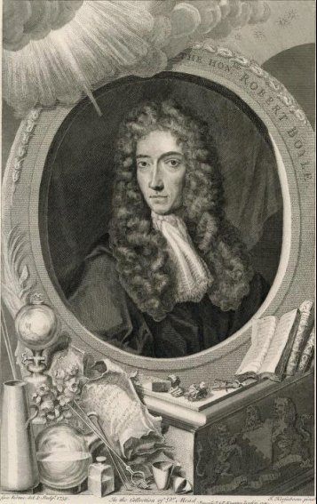
portrait de Robert Boyle, 1740 (Kerseboom)
comprenant un appendice sur la production des principes chimiques. Les critiques fondées dont les théories chimiques y sont l'objet, les considérations générales qu'on y trouve sur la nature des éléments, leur nombre, et la composition des corps, ne le recommandent pas moins que les faits nombreux qu'il renferme. Si, avant Robert Boyle, on avait aperçu des différences entre des corps que l'on mettait en contact mutuel, suivant qu'ils se mêlaient ou qu'ils s'unissaient pour former ce que nous appelons aujourd'hui une combinaison chimique, le physicien anglais a le mérite incontestable d'avoir distingué de la manière la plus explicite le simple mélange d'avec le composé chimique, en montrant que celui-ci avait des propriétés plus ou moins différentes de celles des corps qui le constituaient, tandis que les corps d'un mélange conservaient toutes leurs propriétés spécifiques. R. Boyle citait pour exemple d'une combinaison le sucre de Saturne (acétate de plomb) dont la dénomination même fait allusion à une saveur douce que ne possédent ni l'acide acétique ni la litharge, qui en sont les principes immédiats. Mais, si Boyle reconnaît ainsi des propriétés chimiques, cependant, loin d'en faire dépendre les actions moléculaires, il semble, au contraire, disposé à rattacher celles-ci à des causes physiques ou purement mécaniques, comme nous le dirons plus loin. Nous avons vu Van Helmont partant de considérations puisées dans la méthode a priori la plus absolue, rejeter et l'hypothèse des quatre éléments admise par les écoles du Moyen Âge et l'hypothèse des trois éléments généralement soutenue par les alchimistes ; nous voyons maintenant Robert Boyle, fidèle à la méthode a posteriori, les repousser pareillement aussi bien que celle de Van Helmont lui-même, qui, comme nous l'avons dit précédemment, ne reconnaissait que deux éléments matériels , l'air et l'eau, et faisait dépendre tous les autres corps de la conjonction de celle-ci avec des archées de nature différente : Robert Boyle, d'après des considérations d'une extrême justesse, établit la probabilité qu'il existe bien plus de quatre éléments dans la nature ; et que certains d'entre eux, plus subtils que les autres, s'en dégagent dans les distillations par les jointures des vaisseaux. Il reconnaît aux éléments la faculté de se combiner ensemble pour former des composés binaires, ternaires, quaternaires, etc. Il ne s'arrête pas là : les propriétés de la terre, de l'eau, de l'air et du feu lui semblent devoir appartenir à des corps composés plutôt que simples. Ainsi, que l'eau soit un élément, et il ne conçoit plus que des plantes, en se l'assimilant, la transforment en ces produits si divers que la végétation présente à l'observateur le moins attentif ; enfin, il répugne à sa raison de considérer le soufre, le mercure et le sel, comme les éléments de l'or, car tous les essais qu'il a tentés pour réduire ce métal en ces prétendus éléments, ont été infructueux. R. Boyle a donc parfaitement distingué le composé du mélange, et la chimie moderne a confirmé ses vues, non seulement sur l'existence d'un grand nombre d'éléments, mais encore sur la nature complexe de la terre, de l'eau et de l'air. [dans notre vision de l'alchimie, il est bien entendu que le Soufre, le Mercure et le Sel ne constituent que des noms de cabale hermétique voilant des substances chimiques parfaitement définies -] Les idées de Robert Boyle sur la structure des corps étaient analogues à celles des chimistes modernes qui professent le système atomique : car, suivant lui, les corps sont formés de corpuscules invisibles différents les uns des autres, par la grandeur, la forme et leur arrangement dans les groupes qu'ils constituent ; et, si le mouvement anime ces corpuscules dans certaines circonstances, comme ça lui paraît probable, ils doivent alors nous présenter des propriétés fort différentes de celles qu'ils montrent à l'état de repos. Cette opinion fut reproduite, au commencement de ce siècle, par l'illustre H. Davy. Les études que Robert Boyle fit de la matière à des points de vue moins généraux, lorsqu'il porta son attention sur l'atmosphère, les eaux, les couleurs des corps, leurs saveurs et leurs odeurs, sur les rapports des propriétés organoleptiques de certaines matières avec la thérapeutique, enfin les recherches chimiques auxquelles il soumit plusieurs espèces de corps, montrent le physicien-chimiste non moins heureux dans les conclusions qu'il tire de ces travaux qu'il ne l'a été dans ses considérations sur la nature et la structure des corps en général. L'air a été longtemps pour R. Boyle un sujet d'expérience et de méditations. Tous les physiciens savent le perfectionnement qu'il apporta à la construction de la machine pneumatique, dont l'invention première appartient à Otto de Guericke ; mais, autant il avait étudié, l'air au point de vue de ses propriétés physiques, autant il en ignorait la nature chimique. L'atmosphère se composait, suivant lui, de molécules constituant sa matière élastique, de molécules exhalées des minéraux, des plantes et des animaux, et d'effluves magnétiques sorties de la terre. Si Boyle reconnaissait, après beaucoup d'autres, la nécessité de l'air dans la combustion ; s'il avait remarqué que plusieurs corps placés dans un volume d'air limité, par exemple, le cuivre et l'eau d'ammoniaque, en diminuent la force élastique, et si l'air ne lui semblait pas un corps simple, cependant il fut loin de prévoir la manière dont plus tard on en démontrerait la composition : car, au lieu d'expliquer l'augmentation de poids des métaux par la fixation d'un de ses éléments (l'oxygène), il n'alla même pas où avait été Jean Rey, qui, avant 1632, donna pour cause de cette augmentation l'épaississement, la coagulation de l'air, en un mot sa fixation par les métaux. En effet, Robert Boyle la fit dépendre de la fixation au métal des molécules du feu ; et ici il y avait deux erreurs : la pesanteur attribuée au feu et l'augmentation de poids du métal supposée produite dans un vaisseau imperméable à l'air et hermétiquement fermé, tout aussi bien que dans un vase ouvert. Notre savant confrère, M. Biot, a déjà insisté sur ce fait critique en rendant compte du travail de MM. Regnault et Reiset sur la respiration. Outre l'influence de l'air sur la combustion, Boyle avait reconnu celle qu'il exerce dans la fermentation du moût, la nitrification et la respiration. Après avoir envisagé l'alcool comme le produit caractéristique, de la fermentation, il le déflegma, en le distillant avec le sous- carbonate de potasse calciné ou la chaux vive. Boyle étudia l'eau au double point de vue de la physique et de la chimie. Il vit qu'elle augmente de volume en se congelant, et l'envisagea dans les divers états où la nature la présente ; et la science n'oubliera jamais qu'elle lui doit l'emploi d'un certain nombre de réactifs propres à constater la présence des corps que les eaux naturelles contiennent le plus fréquemment. Ainsi il reconnaissait les acides ou les alcalis au moyen de la couleur de la violette ou de celle du bois de Brésil ; le chlore ou l'acide chlorhydrique avec l'azotate d'argent ; le fer avec la noix de galle ; le cuivre avec l'ammoniaque. Il signala l'arsenic dans quelques eaux, et il attribua la salure des eaux de la mer au sel gemme. Si Robert Boyle n'avait pas observé, ni même soupçonné la fixation d'une des parties de l'air dans la combustion, il n'en fut pas moins bien inspiré lorsqu'il demanda aux chimistes pourquoi le gaïac distillé donne des produits si différents de ceux qu'il laisse lorsqu'on le chauffe avec le contact de l'air ; il avait parfaitement apprécié l'influence de la chaleur agissant sans ce contact dans un vaisseau distillatoire pour donner naissance à un grand nombre de produits de nouvelle formation ; et non-seulement il reconnut, comme Glauber, parmi eux l'acide acétique, mais encore un esprit adiaphorétique, qu'il obtint en distillant lentement le produit liquide du bois, puis en rectifiant sur la chaux la liqueur qui s'était volatilisée et condensée. Robert Boyle étudia un grand nombre de réactions moléculaires avec plus de précision qu'on ne l'avait fait, et il en est un grand nombre dont la science lui doit la connaissance ; il porta encore dans ces études l'esprit du physicien et du chimiste. Il observa un grand nombre de ces réactions au point de vue des phénomènes passagers qu'elles manifestent. Il signala par exemple le froid produit pendant la solution du salpêtre ou du sel ammoniac dans l'eau, celui qui l'est par le mélange du sel marin avec la neige. Il parla de la chaleur développée par l'union de la chaux avec l'eau, de l'acide sulfurique avec la potasse, par la réaction de la limaille de fer, du soufre et de l'eau, et par celle de l'or et du mercure. Il vit que du fer mis dans un petit ballon rempli d'eau aiguisée d'acide sulfurique, qu'on renverse ensuite dans un vase rempli du même iiquide, dégage de l'air mais il ne tira pas de conséquence de ce fait, soit pour recueillir les gaz, soit pour reconnaître la nature du produit gazeux. Il décrivit la préparation de l'acide azotique hydraté par la distillation d'un mélange d'acide sulfurique hydraté et de salpêtre, de l'eau régale par le mélange d'une partie d'esprit de sel (acide chlorhydrique concentré) et de deux parties d'acide nitrique concentré. (acide azotique), de l'esprit de sel par la réaction du sel de la limaille de fer et de l'eau. Il démontra par la synthèse la nature de l'azotate de potasse ou salpêtre. Il découvrit le sulfure d'ammoniaque hydrogéné, auquel on a donné le nom de liqueur fumante de Boyle. Enfin, si Brande [sic] obtint le premier le phosphore, il y eut deux hommes, Kunckel et Robert Boyle, qui, chacun de son côté, sut le préparer en partant de faibles indications qu'on leur avait données. Boyle ne perdit pas de vue, dans ses recherches nombreuses et variées, l'utilité dont elles pouvaient être dans leur application aux arts et aux besoins de l'homme. Il indiqua l'amalgame d'une partie de plomb, d'une partie d'étain, de deux parties de bismuth et de dix parties de mercure pour l'étamage des glaces. Il prescrivit d'enduire le fer de cuivre pour le dorer ensuite. Il argenta le cuivre en employant une poudre formée de sel commun, d'azotate d'argent et de chaux. Il décrivit le moyen de graver à l'eau forte sur divers métaux en dessinant avec une pointe sur une couche de vernis, dont on les avait recouverts, puis en corrodant par l'eau forte les parties mises à découvert. Il donna d'utiles indications pour la peinture sur verre, dont les procédés étaient tenus secrets par ceux qui les possédaient ; il parla des matières susceptibles de le colorer, lorsque, après les avoir appliquées à sa surface, on chauffait celui-ci. Il reconnut à l'amalgame d'or la propriété de produire, dans cette dernière circonstance,une belle couleur pourpre [cf. la section sur la voie humide où nous développons la préparation du pourpre de Cassius -] ; enfin, la propriété que possède le peroxyde de manganèse, de décolorer le verre qui renferme du fer, lui était connue. Il avait imaginé une encre solide formée d'un mélange de trois parties de sulfate de protoxyde de fer, de quatre parties de noix de galle et d'une partie de gomme arabique réduites en poudre. On s'en servait en l'étendant sur le papier à écrire avec une patte de lièvre, puis en écrivant avec une plume préalablement plongée dans l'eau. On pouvait en composer sur-le-champ de l'encre liquide, en ajoutant assez d'eau à la poudre pour la dissoudre ; elle devenait alors de l'encre à écrire. Enfin R. Boyle appliqua son esprit observateur à l'étude de plusieurs parties de l'histoire des corps vivants. Nous avons déjà parlé de ses recherches sur la respiration des animaux. Il composa un traité par lequel il voulait établir que la Théorie des corpuscules n'était point en opposition avec les remèdes spécifiques, comme quelques personnes le prétendaient ; il en composa un second qu'il intitula : De l'utilité et du bon usage des médicaments simples. Quoique l'auteur ne dissimule pas son penchant pour les explications mécaniques, cependant ii donne les siennes, non comme des dogmes, mais comme des probabilités : elles sont l'expression de la pensée d'un homme qui a subordonné toutes ses recherches à l'expérience. R. Boyle se livra avec Wren à des expériences de toxicologie sur les animaux ; ils injectaient d'abord le poison par les veines crurales du chien ; et ensuite le contre-poison, c'est-à-dire la matière que l'on considérait comme l'antidote du premier. Enfin il entreprit de faire une histoire naturelle du sang de l'homme hors des vaisseaux. Si ce traité n'est pas aussi étendu qu'il avait l'intention de le faire, il n'en renferme pas moins un grand nombre de faits intéressants. Quoique nous nous soyons borné à indiquer les principaux travaux physico- chimiques de Robert Boyle, plutôt qu'à donner un extrait de ses écrits, nous en avons dit assez pour mettre nos lecteurs à même d'apprécier les services dont les sciences expérimentales en général et la chimie en particulier, lui sont redevables, quand il envisagea cette science avec toutes les lumières que la physique mécanique lui avait fournies, et que, fort des connaissances de son temps les moins incertaines, il se livra à la critique, la mieux fondée des idées générales des alchimistes et des chimistes. Avec ses antécédents et le genre d'esprit qu'il portait dans l'examen des questions du ressort de la philosophie naturelle envisagées selon la méthode a posteriori, avec le sentiment désintéressé qui l'animait pour atteindre un but unique, la connaissance du vrai, Robert Boyle devait exercer une grande influence sur la direction de la chimie, non seulement comme critique ,des opinions qui la dominaient, mais comme physicien auquel on doit d'avoir introduit dans la pratique de cette science l'emploi des machines, et des instruments de précision. Mais ôtez à Robert Boyle la grande fortune que lui donnait sa posilion sociale, et ces travaux étaient impossibles, car, sans elle, il n'aurait eu ni le loisir de s'y livrer, ni les moyens de se procurer les machines et les instruments qu'ils exigèrent. En définitive, Robert Boyle fut plus physicien que chimiste, et quelle que soit l'influence exercée sur la chimie par celles de ses recherches qui s'y rapportent immédiatement et par son genre d'esprit, cette influence n'émanait pas du génie spécial auquel la chimie doit le caractère qui la distingue de la physique. Si la manière dont nous envisageons R. Boyle n'était pas exacte, on comprendrait difficilement comment l'homme qui avait si bien distingué la combinaison du mélange donna des explications toutes mécaniques des phénomènes chimiques ; ainsi, parmi les explications relatives à l'action des alcalis sur les acides, il en est une dans laquelle il suppose que les pointes de ceux-ci se logent dans les cavités de ceux-là, à l'instar d'une lame de couteau renfermée dans sa gaîne ; l'eau forte dissout l'argent parce que ses molécules pointues pénètrent dans les pores du métal ; tandis que, ne pénétrant pas dans les pores de l'or, elle ne le dissout pas. Les précipités chimiques résultent de la faiblesse de l'action dissolvant et de la pesanteur des matières solides. L'histoire de la science, telle que nous l'envisageons et telle que nous venons de l'appliquer à R. Boyle, nous permet d'expliquer comment Venel, l'auteur de l'excellent article chimie de la première encyclopédie, a pu s'exprimer dans les termes suivants, en parlant du physicien anglais :
« Quant à la doctrine que R. Boyle a voulu substituer à celle qu'il a combattue avec une espèce d'acharnement et de haine trop peu philosophique, j'ai déjà observé que c'était précisément celle que j'ai mise en opposition avec la doctrine que j'ai appelée chimique. »
Si, à la forme près, il existe quelque analogie entre ce jugement et le nôtre, cependant n'oublions pas la justesse avec laquelle R. Boyle a envisagé l'esprit des chimistes de son temps et la précision avec laquelle il a distingué la combinaison du mélange enfin l'usage qu'il a fait des instruments de physique dans les recherches de chimie. Si on ne peut trop blâmer les hypothèses imaginées pour expliquer des cas d'actions moléculaires où il y a combinaison par des causes mécaniques ou même physiques, comme s'il ne s'agissait que d'un simple mélange, il en est tout autrement de la recherche de l'influence que ces mêmes causes peuvent avoir dans les phénomènes chimiques, car les propriétés chimiques des corps ne dépendent pas seulement de la nature des éléments et des proportions de ceux-ci, mais encore de l'arrangement des atomes et de leurs molécules. En effet, les mêmes éléments unis dans les mêmes proportions peuvent constituer des composés fort différents par leurs propriétés ; il faut bien que la cause de la différence réside dans l'arrangement des atomes. Dès lors, tout ce qui se rapporte aux connaissances des arrangements moléculaires que l'on peut tirer de l'observation cristallographique, et de l'observation de certains phénomènes optiques, doit être l'objet d'un examen sérieux de la part du chimiste philosophe. En résumé, et pour rattacher ces considérations à nos jugements sur l'esprit de R. Boyle, sur l'influence qu'il a pu exercer, et sur les jugements mêmes dont R. Boyle a pu être le sujet, nous distinguerons trois périodes dans l'histoire des explications que l'on a pu donner des phénomènes moléculaires du domaine de la chimie.
- Dans la première, ignorant absolument la cause des actions chimiques, on ne distingue pas la combinaison du mélange ; tous les phénomènes sont ramenés à des causes mécaniques ; la science chimique n'existe pas encore ;
- Dans la seconde, sentant le vide des explications mécaniques, on distingue la combinaison du mélange, et l'on est conduit à faire dépendre les phénomènes chimiques d'une cause particulière tout à fait occulte, l'affinité, par exemple, envisagée au point de vue absolu ;
- Dans la troisième, on cherche l'explication des phénomènes chimiques dans l'examen de toutes les forces qu'on a admises comme agissant sur les atomes et les molécules résultant de leur union ; dès lors, en même temps que l'on admet des forces purement chimiques, comme l'attraction moléculaire, on prend en considération des forces physiques, comme la chaleur, la lumière, l'électricité, et des forces mécaniques, comme la pesanteur, des forces de division, de compression, etc.Ces distinctions faites, nous dirons qu'on peut reprocher à R. Boyle de n'avoir point assez approfondi les conséquences résultant de la distinction du mélange d'avec la combinaison, quand il s'agit de remonter aux causes de celle-ci, et que dès lors il s'est exposé à expliquer les phénomènes chimiques par des causes mécaniques ; c'est en cela qu'il a mérité la critique de Venel, Mais Venel, à son tour, est répréhensible d'avoir voulu rompre les rapports qui lient si étroitement les forces physiques et, même mécaniques avec les forces chimiques ; on ne peut s'expliquer cette manière de voir d'un aussi bon esprit que par l'influence qu'il ressentait des doctrines de l'école de Montpellier.
Le docteur Hoefer passe de Robert Boyle à Robert Fludd, né en 1574 , mort en 1637. Or, à cette dernière époque, R. Boyle n'avait que onze ans : pourquoi donc, dans une histoire de la chimie, ne parler de R. Fludd qu'après R. Boyle ? l'auteur n'en dit pas la raison. Cependant tous les motifs sont en faveur de l'ordre chronologique, car Robert Fludd, en composant l'Histoire métaphysique, physique et technique du grand et du petit monde, a suivi absolument la méthode a priori ; les principes, les idées générales qu'il y énonce, concernent le monde invisible et les doctrines des prétendues sciences occultes, puisque R. Fludd examine les relations des êtres spirituels du ciel avec le monde visible, telles que peuvent les supposer l'astrologie, la cabale et l'art divinatoire en général. Il est donc tout à fait imbu des doctrines du Moyen Âge, tandis que Robert Boyle appartient tout entier à la méthode expérimentale. [voyez aussi l'introduction à la Critique d'une histoire de la Magie -] D'un autre côté, Robert Fludd se rapproche de celle-ci dans l'étude particulière du monde visible, car il porte son attention sur plusieurs points de l'histoire physique de l'air, de l'eau et de la chaleur, sur des actions chimiques et l'alchimie, et, quoique ses pensées soient subordonnées à ce qu'il considérait comme la science du monde invisibie, il faut cependant reconnaître qu'il a parfaitement apprécié plusieurs des propriétés les plus générales de l'air, de l'eau et de sa vapeur. Il est donc un homme de transition entre les deux méthodes, et, sous ce rapport encore, il devait précéder Robert Boyle. 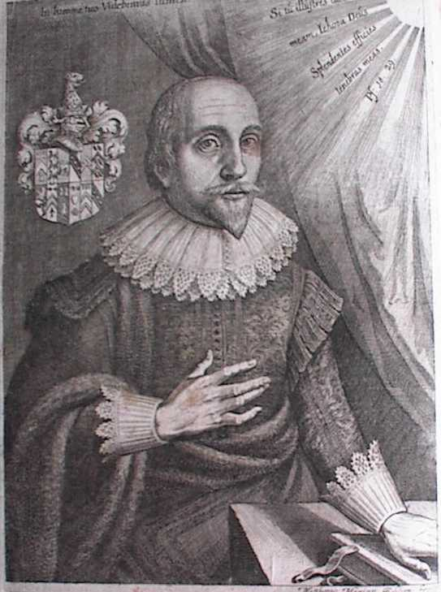
Robertus Fluctibus (Mattieu Merian, in Philosophia Sacra, 1626)
Jean-Rodolphe Glauber.
[1, 2, 3, 4, 5, 6, 7, 8, 9, 10, 11, 12, 13, 14, 15, 16, 17, 18, 19, 20, 21, 22, 23]
Briefwechsel zwischen J.R. Glauber und Otto Sperling
Le docteur Hoefer passe de R. Fludd à Jean-Rodoiphe Glauber, célèbre chimiste allemand, né en Franconie et auteur de 56 traités publiés de 1648 à 1669. S'il semble indifférent, au premier abord, de parler de R. Boyle avant Glauber, la logique prescrit, à notre sens, de suivre l'ordre inverse, car incontestablement le physicien anglais s'était beaucoup occupé des écrits du chimiste allemand ; d'ailleurs, le public connaissait la plupart des traités de Glauber, y compris les plus remarquables, à l'époque où parut le Chymista Scepticus. S'il est vrai que la première éducation ait manqué à Glauber et qu'il fût dénué d'esprit philosophique, l'influence qu'il exerça sur ses contemporains et ses successeurs immédiats n'en fut pas moins réelle et très -grande : elle résultait de la variété de ses écrits, quoique tous chimiques, de la description d'appareils utiles à la science proprement dite comme à ses applications, de l'exposé d'une foule de manipulations et de procédés relatifs à des matières employées d'ans l'économie domestique, la médecine et les arts. Glauber se recomrnande donc à l'histoire de la science qu'il cultiva, comme chimiste praticien, auquel se rattache la connaissance d'un grand nombre de faits divers. Aux yeux de Glauber, Paracelse était un génie : aussi la direction de ses idées et de ses travaux se ressentit-elle de cette opinion ; car, à l'exemple de l'homme qu'il admirait, il déblatérait contre les médecins galénistes ; et les préparations chimiques, notamment les préparations métalliques, auxquelles il reconnaissait des propriétés thérapeutiques, fixaient son attention d'une manière tout à fait spéciale, comme les seules propres au traitement des maladies. Si Glauber croyait à la chimie, s'il professait des opinions de Paracelse relativement à la nature des métaux, s'il croyait à l'influence des astres sur leur génération dans le sein de la terre, et s'il préconisait beaucoup de remèdes auxquels il accordait une influence extrême pour conserver la santé et prolonger la vie même, il est extrêmement remarquable que, dans ses meilleurs ouvrages, il ait dit n'avoir jamais cherché la pierre philosophale, quoiqu'il en admît la réalité. Ses écrits ont été une source d'instruction pour ceux qui les consultèrent avec l'intention d'y trouver un guide propre à les diriger dans la répétition des manipulations qui y sont décrites ; et, sous ce rapport, ils se distinguent du plus grand nombre des écrits de son temps. Si des réticences lui ont été reprochées dans la description de certaines opérations, s'il est passible d'exagération en parlant des vertus de plusieurs préparations dont il ajournait la description précise, ses motifs étaient tantôt la méchanceté des hommes ses conternporains, tantôt sa pauvreté même, qui lui faisait une nécessité de se ménager des moyens d'existence pour l'avenir ; et certes, sous ce rapport, sa position sociale était bien différente de celle de R. Boyle. Si quelque chose nous étonne, ce n'est pas que Glauber ait encouru ces reproches, mais qu'une fois ayant payé le tribut aux opinions de son temps sur la réalité d'une science alchimique, et avec la conviction qu'il avait d'ailleurs du génie de Paracelse, il se soit gardé de travailler au grand oeuvre. Et pourtant il était soumis à la volonté de Dieu, il ne doutait point de l'efficacité de la prière ; et dès lors, avec sa foi, il pouvait se croire appelé à recevoir de son créateur même la faculté de changer des vils métaux en métaux précieux.
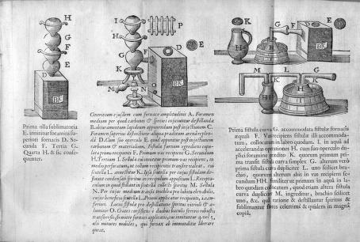
Glauber, Furni novi philosophici : sive Description artis destillatoriae novae, 1651
L'ouvrage de Glauber le plus remarquable, [les ouvrages de Glauber, les Nouveaux fourneaux philosophiques ou Art distillatoire, T. Jolly, 1659 et l'Oeuvre Minérale, T. Jolly, 1659 ont été traduits par Du Teil et sont disponibles sur le serveur Gallica de la bnf -] au point de vue de la généralité et du nombre des faits qu'on y trouve réunis, est la description des nouveaux fourneaux philosophiques ; il comprend cinq parties, dont chacune des quatre premières commence par la description d'un fourneau particulier. Glauber parle ensuite des opérations qu'on y fait ainsi que des propriétés réelles, douteuses ou imaginaires qu'il attribue à leurs produits.
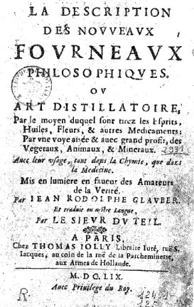
tome I des Nouveaux Fourneaux Philosophiques
a)- Le premier fourneau dont il est question reçoit à la fois le charbon et la matière sur laquelle la chaleur doit agir dans son foyer. [voir figure] Les produits volatils, y compris ceux de la combustion, passent dans des aludels, si le produit à recueillir est condensable en solide, ou dans des récipients, s'il est condensable en liquide. Glauber décrit différentes manières de préparer l'esprit de sel ou acide chlorhydrique, auquel il attribue un grand nombre de propriétés organoleptiques, non seulement lorsqu'il est uni à l'eau, mais lorsqu'il est à l'état salin ou de chlorure. La solution aqueuse d'esprit de sel, associée au sucre, donne une limonade agréable ; associée aux viandes, elle les attendrit ; associée aux légumes, elle les conserve. Dans d'autres écrits, il en préconise l'usage pour la navigation : l'eau potable à laquelle on en ajoute quelques gouttes échappe à la corruption. Enfin, l'usage des aliments, acidulés d'esprit de sel préserve de plusieurs maladies, et notamment du scorbut. Glauber décrit beaucoup de chlorures sous la dénomination d'huiles rnétalliques, et parmi celles-ci on doit signaler la préparation de l'huile d'antimoine, obtenue de la distillation du sublimé corrosif mêlé au sulfure d'antimoine ; Le docteur Hoefer remarque avec raison que l'explication donnée par Glauber de la réaction de ces corps est parfaite. Il prescrit la macération des parties végétales ligneuses dans l'eau aiguisée d'esprit de sel, afin de faciliter l'extraction des huiles essentielles. Il prépare la quintessence d'une matière végétale en traitant celle-ci par l'alcool déflegmé, puis ajoutant à la solution spiritueuse de l'eau d'esprit de sel, et faisant digérer le mélange ; une huile surnage, c'est la quintessence de la matière végétale. Pour préparer la quintessence d'un métal, il en traite par l'esprit de vin la dissolution chlorhydrique. C'est donc la solution alcoolique d'un chlorure qui est la quintessence du métal employé. [voyez ce que nous en disons dans la section sur la voie humide où nous parlons des chlorures d'étain et des solutions aurifiques - ]
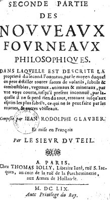
tome II des Nouveaux Fourneaux Philosophiques
b)- Le vaisseau distillatoire décrit dans la deuxième partie, avec les fourneaux auxquels il peut être adapté, porte un tube latéral à peu près horizontal, qui se rend dans un récipient ; il est muni, à sa partie supérieure, d'une large tubulure entourée d'un espace annulaire propre à contenir du plomb fondu pendant la durée de la distillation ; un couvercle en forme de cloche renversée plonge alors dans le plomb fondu et ferme ainsi la tubulure. L'idée de cette fermeture paraît appartenir à Glauber. Le vaisseau distillatoire est de terre ou de fer, suivant la nature des matières qu'on y distille. Glauber décrit la préparation de l'huile de vitriol et de l'esprit de vitriol, celle d'un grand nombre de sulfates. Parmi eux on trouve un liquide vert incristallisable, composé de sulfate de peroxyde de fer et de sulfate de protoxyde du même métal. Il parle de l'eau régale, de l'or fulminant, de son usage, de quelques azotates, de l'eau forte, de la poudre fulminante, représentée par du nitre et du sulfate de potassium, de la poudre de fusion, mélange de nitre, de soufre et de sciure de bois. Il décrit un grand nombre de réactions par voie humide du bitartrate de potasse et de métaux ou de leurs oxydes ; un précipité obtenu par le mélange du chlorure d'or avec la liqueur des cailloux, précipité susceptible de colorer le verre en pourpre. Enfin il parle d'un grand nombre d'huiles obtenues de la distillation des matières végétales.
c)- La troisième partie des Fourneaux philosophiques est remarquable par le moyen ingénieux indiqué par Glauber pour chauffer l'eau, ou plus généralement un liquide quelconque contenu dans un vase qui ne reçoit pas l'action directe de la chaleur. Pour remplir cette condition, il suffit d'adapter à la partie inférieure d'une paroi latérale du vaisseau un vase sphéroïdal de fer ou de cuivre, disposé de manière à recevoir la chaleur d'un fourneau ; le vaisseau et le vase sphéroïdal étant remplis de liquide, la chaleur du fourneau échauffant le vase sphéroïdal, il se produit deux courants : un courant chaud qui en sort et un courant froid qui y entre. On reconnaît ici l'invention d u chauffage des liquides par circulation. Glauber, en adaptant son vase sphéroïdal à un tonneau renfermant du vin et communiquant, par sa partie supérieure, qui est vide de liquide, à un serpentin refroidi au moyen de l'eau froide contenue dans un second tonneau, distille l'alcool du vin, de la bière, etc., etc. Il se sert du même artifice pour chauffer l'eau d'un bain-marie, l'eau d'une baignoire, etc. Enfin il a adapté le même appareil à une caisse en bois pour donner des bains de vapeur. On voit donc que Glauber a précédé de longtemps M. Galès et M. Darcet, qui, de 1813 à 1815, établirent des appareils à bain de vapeur ou de gaz à l'hôpital Saint-Louis de Paris. Voilà, certes, deux choses qui honoreront à toujours le nom de Glauber, sa découverte du chaufage des liquides par circulation et celle des bains à vapeur ou à fumigation donnés de la manière la plus économique. Glauber avait parfaitement aperçu dans les liquides vineux provenant de la fermentation des céréales la présence d'une huile qui passe à la distillation après l'alcool, et qu'on obtient surtout de la distillation des lies, marcs ou résidus de ces mêmes liquides vineux. Il insiste sur l'avantage qu'on peut tirer de l'eau salée dans la distillation. Il exprime enfin, dans cette troisième partie, des idées justes sur la cause de la minéralisation et de la température des eaux dites minérales et thermales ; enfin il parle de bains formés d'eaux minérales artificielles.
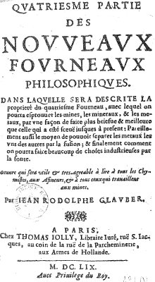
tome IV des Nouveaux Fourneaux Philosophiques
d)- La quatrième partie des Fourneaux philosophiques, consacrée à un fourneau destiné au travail des matières métalliques ou terreuses que l'on veut fondre, comprend un recueil d'essais oui d'opérations docimatiques intéressantes au point de vue historique. Il prescrit de fondre 1 grain de minerai avec ½ once de glace de Venise, et, d'après la couleur du verre fondu et refroidi, on juge de la nature du métal. D'après l'indication de cet essai, on peut procéder ensuite à la coupellation ; mais, selon lui, cette opération ne donne pas tout l'or et tout l'argent qu'on peut obtenir par un autre procédé. En traitant l'étain, le fer et le cuivre ou leur minerai à plusieurs reprises par un mélange de nitre, de tartre et de soufre, on peut retirer des trois métaux des quantités d'or et d'argent que la coupellation n'accuserait pas. Après avoir rappelé quatre procédés pour séparer les métaux, particulièrement l'or, l'argent et le cuivre, au moyen de l'eau forte, du cément, du flux, avec le soufre et le plomb, et enfin l'antimoine, il parle d'un cinquième qui consiste à traiter les trois métaux par l'eau régale. L'argent n'est pas dissous, il reste à l'état de chlorure, qu'on décompose avec la potasse carbonatée. Quant à l'or, il le précipite avec un certain corps qu'il ne nomme pas. Glauber énonce ensuite sa manière de voir sur la perfection des métaux et la pierre philosophale, et là surtout on peut se convaincre
[voici le passage dont parle Chevreul :
La Médecine universelle portant les hommes & les métaux en un haut degré de perfection, & sa possibilité, n'a pas seulement été crue depuis beaucoup de Siècles par plusieurs fameux, mais aussi elle a été prouvée par beaucoup de personnages Juifs, Païens, & Chrétiens, sur quoi on a écrit un grand nombre de Livres en divers langages faux & véritables, & il n'est pas besoin d'y rien ajouter du mien, vu que je suis tout à fait ignorant, quoi que j’aie ouï dire quelquefois qu’en divers endroits les métaux vils & abjects ont été changés en pur or, particulièrement le plomb, ayant été préparé par une Médecine artificielle ; néanmoins j'ai laissé cette sorte de discours en sa valeur, résolu de n'entreprendre, jamais un tel travail, étant instruit par l'exemple des autres hommes, tant de haute que de basse qualité, doctes & ignorants, perdant leur temps & leurs biens en cet art ; mais je suis plutôt persuadé, qu'une telle Médecine universelle ne peut être trouvée dans le Monde. Quoique j’aie vu beaucoup de choses en mes travaux qui m'y oblige, néanmoins je n’ai jamais osé entreprendre ce travail, manquant d'opportunité & de lieu, jusqu'à ce qu’à la fin une croyance de la possibilité est venue entre mes mains, cherchant quelque autre chose de petite valeur. Car j'ai beaucoup dépensé & travaillé par plusieurs années pour extraire la teinture du sel de l'or, pour en faire une Médecine, ce que j’ai à la fin obtenu, là où j’ai observé, que ce qui reste de l'or, après que l'âme ou meilleure partie est extraite, n’est plus or, & ne résiste plus au feu. De quoi je conjecture, que si une telle extraction était derechef fixée, elle perfectionnerait les métaux imparfaits, & les changerait en pur or. Mais je n'ai pas aussi pu faire l'essai de la vérité des opinions que j’avais conçues, demeurant à présent dans un pays étranger ; c’est pourquoi contre ma volonté, quelque avide que je fusse de nouveauté, j’ai été forcé de m'abstenir du travail. Et dans le même temps considérant les opinions des Philosophes concernant leur or, non le vulgaire, pour préparer avec icelui la Médecine universelle, j'ai derechef versé un certain vinaigre philosophal sur le cuivre pour en extraire la teinture, où presque tout le cuivre est devenu une terre blanchâtre séparée de sa teinture en digestion, laquelle terre il m'a été impossible de réduire derechef en corps métallique par aucune voie.
Cette expérience m'a derechef confirmé la possibilité de cette Médecine. Et quoique je n'ai jamais suivi ce travail, néanmoins je ne doute point que ce ne soit une véritable Médecine humaine, quoique non métallique, qui peut-être faite par un diligent Artiste. L'âme donc avec tous les attributs métalliques consistent en une si petite quantité, qu'elle est à peine la centième partie du poids, laquelle étant extraite & séparée le corps qui reste n’est plus métal, mais une terre morte ; il n'y a point de doute qu'étant fixée derechef, elle peut perfectionner d'autres corps métalliques. C’est pourquoi je suis absolument persuadé par les raisons susdites, que cette Médecine peut être faite avec des choses minérales & métalliques dans la fonte, changeant les métaux imparfait en parfaits. Mais ne pense pas que j'écrive ces choses pour faire croire que l'or ou le cuivre soient la matière de cette Médecine, ce que je ne dis pas, connaissant bien qu'il y a d'autres sujets assez à trouver qui abondent en teintures. Quoi que cette Médecine soit rare & difficile à obtenir, néanmoins l'art & la Nature n'en doivent pas être blâmés ; mais au contraire, nous qui sommes convoiteux, orgueilleux & impies ; car l'homme méchant n’est pas digne de cet art, ni ceux qui méprisent Dieu & sa parole, ni les envieux du bien de leur prochain. Tu dis, ceci est le travail de la Nature & de l'art, c’est pourquoi nous ne le devons pas attribuer, à notre vie, ayant été donné aux Païens, lesquels n'étaient pas à comparer à nous pour la piété comme n'ayant pas la véritable connaissance de Dieu. C’est pourquoi ma vie (quoi qu'impie) ne me peut empêcher : d'autant que cet art consiste en la connaissance des choses naturelles. Je réponds, ô petit compagnon ! tu es entièrement trompé, penses tu que les Philosophe Païens ne connussent point le vrai Dieu, ils avaient plus de connaissance de Dieu que tu n'as, car quoique Christ ne leur fut pas prêché, néanmoins ils l'ont connu par la Nature, & selon l'ordre de cette connaissance, ils ont gouverné leurs vies, obtenant ce don de Dieu, afin qu'ils ne l'employassent pas à un mauvais usage, mais au profit de leur prochain. [on voit que Glauber a un discours à peine différent de celui de Gerhard Dorneus que Jung a tant étudié, cf. les Racines de la Conscience, trad. Buchet Chastel] Et toi qui te persuades de surpasser ton prochain en science, voyant le fétu qu'il a dans l'œil, & non la poutre qui est dans le sien, qui employant ta vie en prodigalité superbe, envie, médisance, & autres plaisirs nuisibles & mauvais, penses tu en toi-même d'être caché à l'œil de Dieu, de sorte qu'il ne puisse t'attraper. Certes une si grande chose n’est pas donnée de Dieu aux envieux, superbes, & faux Chrétiens. C’est pourquoi chacun se doit particulièrement examiner soi-même auparavant que d'entreprendre un tel travail, & voir s'il vient avec les mains nettes ou sales : car il est très certain & véritable, que jamais un homme de mauvaise conscience n'obtiendra ce don, lequel est de Dieu seul, & non de l'homme. Ainsi tu as entendu mon opinion de la Médecine universelle, avec mes expériences sur l'or, cuivre, & autres métaux & minéraux, ce que je ne prêche pas pour Evangile d'autant que c’est une chose humaine d'errer. C'est pourquoi il n'y peut avoir aucune assurance, auparavant la fin, accomplissement, & perfection ; éprouver même une ou deux fois pour une assurance certaine. Car il est bon d'éprouver souvent une excellente voie qui a déjà été trouvée, ce qui est sans doute arrivé aussi bien à d'autres qu'à moi. Il ne faut pas donc triompher avant la victoire ; vu les empêchements qui rendent notre espérance vaine : mais au contraire, Dieu doit être invoqué en nos labeurs, afin qu'il lui plaise de les bénir, afin que nous usions bien de ses dons en cette vie, comme bons ménagers, pour après recevoir la récompense de nos travaux, veilles & soins, principalement le salut éternel par sa pure miséricorde.]
qu'il n'a pas pratiqué l'alchimie ; mais il croyait à sa puissance et à la possibilité de se procurer de l'or et de l'argent avec des métaux vils ou communs soumis à des procédés de l'art chimique. Un homme comme Glauber, qui avait recueilli de l'expérience tant d'observations justes, ne devait pas considérer l'alchimie comme le faisaient ceux qui, n'aspirant qu'à se procurer de l'or, ne donnaient aucune attention aux phénomènes qu'ils pouvaient observer dans leurs opérations, si ces phénomènes leur paraissaient étrangers au but de leurs efforts. Telle est la cause pour laquelle les idées de Glauber sur l'alchimie, quoique en harmonie avec les idées de son temps, ont en apparence quelque chose de moins arrêté ou de plus vague que les opinions des alchimistes purs ; et pourtant, en les examinant avec attention, on voit qu'elles étaient moins vagues au fond parce que, dans ses nombreuses recherches, il avait recueilli des faits exactement observés et précis, de sorte que, si l'expression de ses opinions n'était pas absolue comme celle des alchimistes purs, elle avait l'avantage d'être plus en rapport avec l'observation déduite immédiatement de la pratique des opérations chimiques. Ainsi Glauber a parfaitement distingué des cas où l'on obtient des métaux précieux sans qu'il y ait transmutation. Certaines matières qui ne donnent pas d'or ni d'argent à la coupelle, peuvent en donner lorsqu'on les soumet à divers traitements, sans qu'il y ait transmutation ; il y a simple purification ; seulement ces derniers traitements sont plus efficaces que la coupellation. Il n'admet pas la transmutation dans les cas où un métal mis dans une liqueur en précipite un autre, ainsi que cela arrive au fer, qui se recouvre de cuivre dans une eau tenant un sel cuivreux en solution. Suivant lui, un métal parfait peut être isolé des parties étrangères auxquelles il est mélangé, si on présente au mélange un métal parfait ou plus voisin de la perfection que ne le sont les parties étrangères, par exemple, le mercure, dont les rapports avec l'or et l'argent sont si grands, sépare, en s'y associant, ces métaux d'un grand nombre de corps auxquels ils sont mélangés. Voici maintenant comment Glauber a envisagé l'alchimie. Les astres et l'élément du feu jettent des semences métalliques dans les entrailles de la terre ; ces semences, portées par l'air jusqu'à l'eau, prennent une forme matérielle que la terre couve et nourrit jusqu'à ce qu'elle soit devenue un métal parfait. Alors la terre le met au jour comme la mère y met son enfant lorsqu'il est parvenu à terme. La semence des métaux est identique ; la diversité de ces corps est due au lieu et aux circonstances dans lesquels la semence se développe. Il établit une parfaite analogie entre le développement des métaux et celui des êtres vivants, que ceux-ci sortent d'une graine ou d'un oeuf. Le fer, selon lui, sous l'influence de la chaleur centrale produite par l'accumulation des rayons célestes, se change en or. L'argent, sous la même influence, devient or. Il dit, dans un autre ouvrage, que les métaux peuvent être formés sans semence par la vertu des rayons émanés des astres sur la surface de la terre humide. Cette production peut avoir lieu dans l'air, et alors les métaux produits tombent à la surface de la terre ; ils sont appelés pierres du ciel. Glauber, en reconnaissant que tous les métaux n'ont pas été formés au commencement du monde, admet le développement de leurs semences, jusqu'au terme où elles ont donné un métal parfait ; le développement de l'or est extrêmemement lent, mais il peut étre accéléré sous l'influence de certaines vapeurs ou esprits teignants. Tantôt Glauber compare le progrès des métaux imparfait à la maturation qu'éprouve un fruit vert. Tantôt il le compare à une fertilisation qui, suivant lui, purifie et perfectionne un suc végétal, de sorte que les métaux parfaits ne se rouillent plus et résistent au feu et à l'eau. Dès que Glauber reconnaît l'influence des circonstances extérieures sur le perfectionnement des métaux, il admet l'efficacité de certaines pratiques pour l'accélérer ; ces pratiques constituent l'art véritable de l'alchimie, qu'il n'est donné qu'à un bien petit nombre d'hommes de connaître. [si nous retenons l'idée d'une modification touchant les minéraux, nous ne serons pas loin de l'hypothèse que nous défendons] Glauber examine si les corps qu'il appelle minéraux, tels que le sulfure d'antimoine, l'arsenic, l'orpiment, le cobalt, le zinc, le soufre, sont conversibles en métaux. Il se prononce pour l'affirmative, et les considère comme des embryons de métaux, comme des fruits verts. Mais Glauber va plus loin que les alchimistes, lorsqu'il reconnaît la corruptibilité de l'or, et qu'il considère ce métal comme susceptible de rétrograder à l'état de métal imparfait, tel que le plomb. [cf. section réincrudation -] Evidemment cette opinion n'était fondée que sur des expériences mal faites, où de l'or, qui existait dans des matières, disparaissait accidentellement, de sorte qu'on ne retrouvait que des métaux imparfaits là où l'on s'attendait à en retrouver un parfait. Glauber ajoute qu'il était parvenu à réduire l'or en deux corps, une âme et une terre morte qui représentait au moins les 0.99 du poids du métal. Glauber ne doute pas que l'âme de l'or, en agissant sur un métal commun, ne produise de l'or ; mais il faut avouer qu'il ne s'explique pas d'une manière précise à ce sujet, car, dans ses idées, on peut concevoir deux résultats possibles relativement à l'alchimie. Il y a union de l'âme de l'or avec un métal imparfait qui devient terre morte de l'or sous l'influence de l'âme. Dans ce cas, l'âme de l'or ne produirait qu'une quantité d'or qui serait proportionnelle à elle-même ; dès lors, l'extraction de l'âme de l'or et sa fixation sur un métal imparfait n'augmenteraient pas la masse de l'or ; ce qui s'accroîtrait, ce serait la terre morte. Dans un autre cas, par le fait de l'accélération de la perfection du métal commun, la masse de ce métal qui excéderait la quantité de terre morte qui peut être changée en or par son union avec l'âme se trouverait dans une condition de maturation accélérée, et cela en raison d'une sorte de fermentation et de l'influence accordée à une matière pour développer sa semblable ; dans ce cas, il y aurait réellement production d'or par suite de la fixation de l'âme de ce métal précieux. Cette partie des Fourneaux philosophiques renferme la description des procédés propres à faire l'alliage des miroirs et à les façonner en miroirs concaves ; elle est terminée par l'exposé des procédés suivis pour faire des verres colorés.
e)- La cinquième et dernière partie de l'ouvrage intéresse surtout les manipulations chimiques ; Glauber y indique comment il faut traiter l'argile qui est destinée â la construction des fourneaux ; la préparation des luts, les moyens de fermer les tubulures des appareils ; parmi eux il indique celui dont nous avons parlé précédemment, en traitant de la deuxième partie (page 295) : seulement le plomb fondu qui se trouve dans l'espace annulaire de l'alambic est remplacé dans les vases dont nous parlons par du mercure. Il indique le rodage des flacons de verre dits bouchés à l'émeri et le tube en S ; il parle de la fabrication des creusets de terre et insiste surtout sur la nécessité de la cuisson. Certes, s'il existe un ouvrage remarquable au point de vue de la chimie proprement dite, c'est certainement celui que nous venons d'examiner.
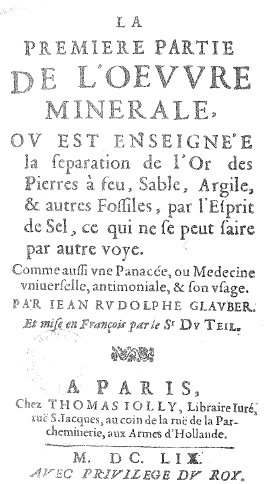
frontispice de l'Oeuvre Minérale, 1659
Les Fourneaux philosophiques furent publiés de 1648 à 1650 ; l'OEuvre minérale parut de 1650 à 1651, mais il s'en faut beaucoup que cet ouvrage soit comparable au premier par son importance. L'OEuvre minérale comprend trois parties :
a)- La première commence par la description d'un moyen d'extraire de l'or d'un assez grand nombre de minéraux communs, tels que quartz, hornstein, grenats, etc., etc. Ce moyen consiste à les réduire en poudre et à les faire digérer dans l'acide chlorhydrique, ou à traiter la poudre, mise dans des entonnoirs, par le même acide ; en distillant, on obtient l'acide dans le récipient et un résidu qui renferme for. On purifie celui-ci par la voie sèche, avec le borax, le nitre et le tartre, s'il ne contient pas de fer, et, s'il en contient, avec le sulfure d'antimoine. Glauber donne la préparation d'une médecine universelle, qui n'est suivant lui, que l'alkaest de Paracelse. Mais, tout en admirant Paracelse, tout en préconisant la médecine dont il parle, il ne la considère pas comme panacée ou réellement comme universelle, et ici il répète encore qu'il n'est point alchimiste.
b)- Dans la deuxième partie de l'Oeuvre minérale, particulièrement consacrée aux métaux, l'auteur reproduit un grand nombre des idées qu'il a émises dans la quatrième partie des Fourneaux philosophiques.
c)- Enfin, la troisième partie est un commentaire du livre de Paracelse, appelé, le Ciel des philosophes.
Nous signalerons encore la Prospérité de l'Allemagne, en six parties; c'est l'ouvrage le plus volumineux de Glauber. Il parut de 1656 à 1661. L'auteur y expose tous les avantages que l'Allemagne retirerait du travail industriel appliqué à différents produits de son sol : par exemple, de la conversion du plomb en céruse, du cuivre en vert de Venise [il s'agit probablement de la préparation de l'aventurine], de la fabrication du verre avec le sable et les cendres, etc., etc., etc. Il parle des nitrières artificielles, conformément à la théorie des ferments. Selon lui, un peu de nitre dans une terre convenablement préparée détermine la formation d'une quantité considérable du même sel, comme un peu de levure, en provoquant la fermentation, détermine la formation d'une nouvelle quantité de levure. Il traite des engrais et des avantages de l'agriculture. Glauber a indiqué le moyen de corriger l'acidité et le manque d'alcool dans les vins de raisins venus dans des saisons peu favorables à leur maturation, et conséquemment à la formation du sucre, source de l'alcool. Il a indiqué la distillation du bois comme moyen de se procurer du goudron, de l'acide acétique pyroligneux et du charbon. Glauber, après avoir retiré de l'eau minérale de Neustadt, près de Vienne, le sulfate de soude en beaux cristaux, reconnut son identité avec le sel provenant de la préparation de l'esprit de sel au moyen du sel marin et de l'huile de vitriol : il le nomma sel admirable. Ce sel acquit un grand renom, et il devint le sel admirable de Glauber, ou simplement le sel de Glauber. Glauber savait que la teinture de cochenille passe au violet-rouge sous l'influence de la potasse, et qu'elle repasse au rouge écarlate par l'acide azotique. Enfin, il a parlé de la coloration en jaune des cheveux, des ongles et des plumes par l'acide azotique ; de la coloration en brun-noir des plumes, des fourrures, des bois, etc., par l'azotate d'argent, et, enfin, de la coloration en pourpre des corps identiques ou analogues par le chlorure d'or. En définitive, Glauber croyait à l'alchimie, mais il ne la pratiqua point comme l'auteur de l'article Glauber de la Biographie ancienne et moderne l'a supposé. Il était un éminent manipulateur, et, à ce titre, il cultiva la chimie avec succès, et rendit de grands services par les faits nombreux qu'il découvrit, par la manière dont il décrivit ses expériences, et enfin par les appareils ingénieux qu'il inventa. [un traité d'alchimie est attribué à Glauber : la Teinture de l'or ou véritable or potable, T. Jolly, 1659 - cf. Gallica, bnf ou le site Hermétisme et alchimie -]
Le docteur Hoefer, ainsi que nous l'avons vu, a commencé la seconde section de la troisième époque de son histoire par l'examen des travaux de Van Helmont, de R. Boyle, de R. Fludd et de Glauber ; il nous reste à exposer la distribution des matières qui la terminent. De Glauber, il passe à Kunckel, J. Becher, Angelus Sala, François Sylvius, Otto Tachenius, Frédéric Hoffmann, Guillaume Davissone, J. Vigani ; il traite de la pharmacie au XVIIe siècle, de Jean Rey. Sous le titre de Chimie des gaz, il parle de J. Mayow et de ses successeurs ; puis de la fondation des sociétés savantes, des chimistes compilateurs, de Nicolas Lefebvre, de Christophe Glaser, de Nicolas Lemery, de Michel Etmuller,de la chimie technique, des chimistes de Suède, de Guillaume Homberg, de la chimie métallurgique d'Alonso Barba, et enfin de l'alchimie au XVIIe siècle. Ce simple énoncé montre suffisamment que cette partie de l'ouvrage, comme celle qui la précède, manque de méthode, car les matières ne sort soumises à aucun ordre didactique ; en les passant en revue nous les disposerons conformément aux analogies qu'elles nous paraissent avoir ensemble, et nous ne nous arrêterons que sur les objets susceptibles de donner lieu à quelque remarque intéressante. Dans l'article précédent, nous avons signalé d'une manière toute particulière les services rendus à la chimie pratique par Glauber ; maintenant nous allons voir Jean Kunckel de Loewenstern, son contemporain, travailler avec un zèle égal aux progrès de plusieurs arts chimiques,
Jean Kunckel de Loewenstern.
[1, 2, 3, 4, 5, 6, 7,]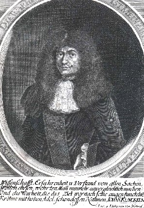
gravure attribuée à N. van Werd
Le docteur Hoëfer fait naître Jean Kunckel vers 1612 , tandis que Juncker date sa naissance de 1630. M. Weiss, auteur de l'article Kunckel de la biographie ancienne et moderne, adopte cette date, et dit que Kunckel naquit au village d'Hutten, dans le duché de Schleswig. Beaucoup plus jeune que Glauber, il lui ressembla sous plusieurs rapports ; comme lui, ii fut un très-habile praticien, et l'étude des choses positives fixa seulement son attention ; mais rien, dans ses ouvrages n'autorise à penser qu'à l'instar de Glauber il crût à la puissance de l'alchimie ; loin de là, il écrivit contre elle et fit la satire la plus mordante de ceux qui usaient leur vie à travailler au grand ecuvre. Quoique le baron d'Holbach le juge peu savant et très-mauvais écrivain, cependant il eut sur Glauber le double avantage d'une éducation première,et d'avoir presque toujours vécu au milieu d'une société distinguée. Kunckel s'occupa beaucoup d'applications chimiques à la minéralogie et à la fabrication du verre. [Dès le début du XVIIe siècle on doit à la découverte de Kunckel et Cassius le rose gorge-de-pigeon, qui est obtenu en ajoutant à la composition du cristal d’opale une certaine quantité de précipité de sels d’or - cf. section voie humide - ] Par son bon esprit, il contribua certainement, avec Robert Boyle, à imprimer à la chimie une direction propre à la soustraire à l'influence de l'alchimie et du charlatanisme, et, par la manière dont il conçut les applications dont elle était susceptible de son temps, il montra l'utilité dont elle pouvait être pour la société ; en cela il se rapprocha encore de Glauber. Il avait un goût prononcé, ou plutôt une passion, pour l'étude des instincts et des moeurs des animaux ; non-seulement la pêche et la chasse occupaient ses loisirs, mais il étudiait les animaux vivants, et il n'est pas une espèce d'oiseau, en Allemagne, qu'il n'ait élevé afin d'en connaître les moeurs. On regrettera toujours qu'un ouvrage qu'il avait promis, sous le titre : De obsertatione animaliam in Germania, n'ait pas été publié, car indubitablement il y aurait consigné les faits intéressants que son esprit positif avait dû recueillir dans ses longues observations sur un sujet, où, bien souvent, le roman a malheureusement pris la place de l'histoire. Les principaux ouvrages de J. Kunckel sont : le Laboratoire de chimie, dans lequel il est traité des vrais principes naturels, de la génération, des propriétés et de l'analyse des végétaux, des minéraux et des métaux; puis les additions qu'il fit à l'Art de la verrerie de Neri, que l'anglais Merret avait déjà annoté. Enfin, l'histoire qu'il donna de la découverte du phosphore, retiré de l'urine, et le procédé pour l'obtenir, qu'il décrivit, furent cause que, longtemps, on désigna ce corps sous la dénomination de phosphore de Kunckel, quoique en réalité la découverte appartînt à Brande [sic], qui la fit de 1669 à 1670. En 1679, Kunckel communiqua gratuitement la préparation du phosphore à Homberg, préparation que ce chimiste opéra dans le laboratoire de l'Académie des sciences de Paris, et qu'il décrivit ensuite pour le public. Le Laboratoire chimique de Kunckel renferme un grand nombre de faits intéressants. Il y professe les opinions que Boyle a énoncées, dans son Chimiste sceptique, sur les idées alchimiques et l'Alkaest de Paracelse.
Il ne reconnaît ni le mercure ni le soufre comme éléments des métaux ; il reproche aux alchimistes d'imposer un même nom à des choses qu'ils ne reconnaissent pas pour être identiques ; il juge impossible la transmutation des métaux ; mais il croit à des séparations, à des combinaisons, à des purifications ; il n'admet point les générations spontanées : Kunckel était donc un esprit droit. Comme Boyle, il réussit parfaitement à colorer le verre en pourpre au moyen de l'or. Nous rappellerons que Glauber avait aperçu la propriété que possède ce métal, précipité du chlorure par la liqueur des cailloux, de colorer le verre en pourpre, et qu'après lui Cassius découvrit le précipité d'or et d'étain, auquel on donne le nom de l'inventeur. Mais à Kunckel revient le mérite d'avoir coloré le verre par fusion avec ce précipité. Kunckel connaissait l'ammoniaque et la potasse rendues caustiques par la chaux ; mais, selon lui, la causticité dépendait d'un acide qui, de la chaux, se portait sur l'ammoniaque ou la potasse. Il connaissait l'alun ammoniacal. Il s'assurait de la pureté de l'eau forte au moyen de l'azotate d'argent, et savait que le chlorure de ce métal, traité par la potasse rouge de feu, donne de l'argent pur. Il employait l'acide sulfurique bouillant pour dissoudre l'argent allié à l'or, procédé que l'on pratique aujourd'hui comme plus économique que l'affinage par l'acide azotique. Kunckel a décrit le moyen d'obtenir de l'alcool des rnûres fermentées. Il a remarqué l'accélération de la fermentation par l'addition du levain et savait que celui-ci donne de l'ammoniaque à la distillation. Selon lui, l'alcool n'est pas une huile, parce qu'il est soluble dans l'eau, qu'il ne dissout pas le soufre, et qu'il ne produit pas de savon avec les alcalis. Les acides, et le froid arrêtent la fermentation. Kunckel a décrit un procédé fort ingénieux pour préparer de l'alcool aromatisé par des principes odorants des fleurs, qui consiste à mettre dans une cornue une solution de sucre additionnée de ferment. Lorsque la fermentation est en activité, on ajoute les fleurs dont on veut extraire l'arome, puis on distille lentement le liquide.
frontispice du Laboratorium Chymicum, 1716
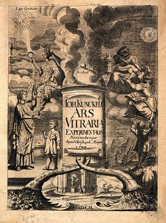
frontispice de l'Ars Vitraria Experimentalis, 1744Les notes de Kunckel au traité de l'Art de la verrerie d'Antoine Neri de Florence, annoté par Christophe Merret, sont, en général, intéressantes, et montrent combien leur auteur était versé dans la pratique de cet art. Souvent il rectifie les recettes de Neri et ajoute des faits précieux au texte de l'artiste italien. Outre les notes qui sont dispersées dans le traité de Neri, Kunckel a composé, sous le titre d'Art de la verrerie, non un traité méthodique, mais un recueil des recettes qu'il donne sous le titre d'Expériences. Cet ouvrage est précédé de l'exposé du moyen de préparer du verre et des pierres précieuses plus dures et plus parfaites que celles dont on trouve les compositions dans Neri ; avec la manière de faire et de connaître les doublets. Un doublet se compose de deux morceaux de cristal polis qui s'adaptent l'un sur l'autre; on chauffe du mastic en larmes mélangé de térébenthine de Venise ; on y ajoute une couleur en poudre impalpable, on passe le mélange fondu dans un crible fin ; puis, en fondant la matière, on l'applique au pinceau sur les faces de deux morceaux qui doivent s'ajuster l'un à l'autre et qui devront avoir été préalablement chauffés. Il décrit la manière de tirer les sels d'usage dans les verreries, et de les calciner. C'est la description de l'art de faire la potasse. Enfin vient le recueil composé de trois livres ; il n'y est pas question de la fabrication du verre proprement dite, mais des moyens de l'orner par la dorure et la peinture.
- Ainsi, dans le premier livre, Kunckel décrit le procédé de cuire les matières colorées que l'on a appliquées sur le verre ; la manière de le dorer et de le peindre, soit que les couleurs doivent aller au feu, soit qu'il s'agisse d'une simple peinture. Il donne des recettes de vernis ou couvertes de poteries ou de faïences. Enfin la manière de composer toutes sortes de vernis pour peindre des verres, le parchemin , le cuir, l'ébénisterie. Il décrit la préparation de la cire à cacheter, de la colle à bouche, de plusieurs ciments propres au verre et aux pierres. Il décrit un procédé trés ingénieux au moyen duquel on transporte le dessin d'une gravure noire sur le verre, procédé reproduit comme nouveau dans ces derniers temps.
- Le deuxième livre de Kunckel est consacré à l'exposé des procédés hollandais propres à préparer les couvertes de diverses couleurs qu'on applique sur la faïence ; c'est, comme on le voit, une addition à la section du premier livre où Kunckel a traité des généralités de ce sujet. Kunckel termine ce livre par la description de la manière de souffler le verre à la lampe, et il recommande l'usage de la flamme dans l'essai de beaucoup de matières.
- Le troisième livre contient cinquante expériences ou secrets utiles tous éprouvés, dit Kunckel ; elles sont relatives à des sujets fort variés ; ainsi il donne un moyen de jeter en moule des plantes ou des fleurs ; il indique celui de blanchir le laiton en le tenant dans l'eau bouillante où l'on a mis du tartre et de l'étain, procédé identique à celui de l'étamage des épingles. Il parle de l'usage du chalumeau des orfèvres pour les essais par la voie sèche, il a donc la priorité sur les chimistes suédois qui, dans le XVIIIe siècle, ont tant insisté sur les avantages de ces essais. Il indique le procédé de mouler la sciure de bois, agglutinée au moyen de la gélatine, la préparation du papier de verre pour décaper le fer rouillé, la fabrication du papier marbré, etc., etc.
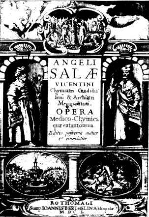
chymiatri candidissimi et archiatri megapolitani opera medico-chymica quae extant omnia, Rothomagi : sump. Joannis Berthelin, 1650Angelus Sala, né en 1602, aurait dû certainement précéder R. Boyle, Glauber, Kunckel et Becher. Quoi qu'il en soit, le docteur Hoëfer en parle d'une manière d'autant plus intéressante pour le lecteur, que Sala est peu connu et qu'il mérite cependant de l'être, à cause des notions positives que l'on trouve dans ses ouvrages, dont le recueil complet parut en 1547, après sa mort. Le docteur Hoëfer extrait de la Saccharologia, de la Tartarologia, de l'Hydraeologia et de l'Anatomia antimonii, plusieurs faits qui montrent l'esprit observateur de l'auteur. Effectivement Sala décrit le raffinage du sucre au moyen du blanc d'oeuf et de la chaux. Il parle de la fermentation alcoolique des eaux sucrées mêlées de levure. Il considère le vinaigre comme un produit de l'altération de l'alcool. Il décrit l'extraction du tartre du vin, du tamarin, des feuilles de la vigne et du mûrier, etc. ; il semble confondre le sel d'oseille avec le tartre, et il donne la préparation d'un tartrate de potasse et de peroxyde de fer correspondant à l'émétique. Dans l'Hydroelogia,il traite de la fermentation et de la distillation de l'eau-de-vie et des essences ; il entre dans de grands détails relativement à l'eau-de-vie de grain. Il parle des préparations d'antimoine et de leur emploi en médecine avec méthode et sagesse ; il prescrit l'usage du vin antimonié comme vomitif ou purgatif ; enfin, Sala avait opéré la synthèse du sel ammoniac avec l'alcali de l'urine et l'acide chlorhydrique.
Otto Tachenius ou Tachen.[1]
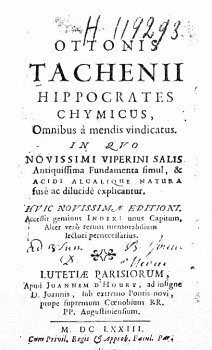
frontispice de l'Hippocrates Chymicus, 1673
Il naquit à Hervorden en Westphalie, mais la plus grande partie de sa vie s'écoula en Italie, et particulièrement à Venise. Tachenius avait le jugement sain, et sa place est à côté de Kunckel et de Robert Boyle, relativement à la direction qu'il s'efforça de donner à la chimie. Il croyait à des connaissances chimiques fort étendues chez les Anciens ; mais, selon lui, il les tenaient cachées, parce que, les ayant reçues à titre d'initiés, ils avaient juré de ne les jamais divulguer. Nous avons exposé dans le cahier de juin 1845, 3ème article, nos motifs pour rejeter une opinion qui ne repose sur aucune preuve. Tachenius s'est surtout occupé des sels, et, loin de considérer, avec les alchimistes, le sel comme un des principes de la matière, il eut l'heureuse idée de n'appliquer ce mot qu'à des corps composés d'un acide et d'un alcali. En cela, il précéda donc de plus d'un siècle les fondateurs de la nouvelle nomenclature chimique. Il appliqua sa définition au sel ammoniac, dont on retire l'acide chlorhydrique et l'ammoniaque ; il prouva que le sel de Mindererus est l'acétate d'ammoniaque ; en suivant son heureuse définition il considéra la silice comme un acide, parce qu'elle se combine avec l'alcali pour former le verre et la liqueur des cailloux, et les corps gras saponifiables lui parurent devoir contenir un acide caché (acidum occultum). Telles sont les conséquences d'une pensée générale qui est vraie ! Il insista sur l'usage exclusif de l'eau distillée dans les opérations de chimie, à cause des matières tenues en solution dans les eaux ordinaires. Il étudia l'infusion de noix de galle comme réactif, et il reconnut la propriété dont elle jouit de réduire l'or du chlorure de ce métal. En découvrant la présence d'un sel cuivreux dans l'eau distillée de fleurs de rose, [nous ne sommes pas loin de la rosée de mai : voir Mutus Liber et section blasons alchimiques -] que les Vénitiens étaient alors en possession de répandre partout où leur commerce s'étendait, et en démontrant que c'était à ce sel qu'il fallait attribuer les vomissements que cette eau distillée produisait quelquefois, il donna un exemple de son esprit d'observation et de la justesse de ses inductions. Mais Tachenius a indiqué un procédé de préparation des sels fixes des plantes par le feu, dont le docteur Hoëfer n'a pas parlé, et qui, cependant, présente quelque intérêt, au point de vue de l'histoire des idées chimiques. Ce procédé consiste à mettre une plante dans une marmite de fer dont on fait rougir le fond, on remue la plante, il s'en dégage une fumée épaisse qui finit par s'enflammer ; alors, en couvrant la marmite, on étouffe la flamme ; on continue à chauffer en remuant de temps en temps, jusqu'à ce qu'il reste une sorte de cendre qu'on lessive à l'eau bouillante, Le résidu de la lessive évaporée à sec est le sel préparé par la méthode de Tachenius. Il se compose de sous-car bonate de potasse ou de soude et des sels fixes inorganiques de la plante, solubles dans l'eau. Ce procédé était une conséquence de l'opinion qu'en étouffant la flamme on conservait une partie de la vertu de la plante soumise au procédé que nous venons de rappeler, opinion tout à fait erronée. Le sel de Tachenius devait agir comme sous carbonate alcalin, et par les chlorures et les sels qui s'y trouvaient mélangés.
Guillaume Homberg.
[1, 2, 3, 4, 5, 6, 7, 8, 9, 10, 11, 12,]
Guillaume Homberg, né en 1652, à Batavia, mort à Paris en 1715, est connu dans l'histoire pour avoir été le maître de chimie et ensuite le premier médecin du duc d'Orléans, neveu de Louis XIV. Il fit connaître à la France la découverte du phosphore. Il sépara l'acide borique du borax et se livra à des expériences fort intéressantes sur les capacités de saturation des acides et des alcalis. Homberg a publié un grand nombre de mémoires remarquables en général par la découverte de beaucoup de faits importants qui y sont consignés. [Homberg est pour nous d'une importance capitale : n'est-ce pas lui qui a décrit le pyrophore qui porte son nom ? Et qui désigne rien moins que le Mercure commun ? - cf. Fontenay - voir sa biographie extraite de l'Histoire de l'Académie Royale des Sciences, 1715 - ]
On peut réunir aux chimistes dont nous venons de parler, Aetius Cletus, Caneparius, qui traita surtout des vitriols et de plusieurs applications aux arts, en 1619 ; Duclos, qui s'occupa avec succès des eaux minérales ; Bourdelin, Marchant, Dodart, qui se livrèrent à la distillation, des plantes ; Cole, Jackson, Todd, Colwall ; puis Hochberg, Thiemann, Montauban, qui s'occupèrent de la préparation des vins ; Moray, qui décrivit la préparation du malt pour la confection de la bière d'Ecosse.
À la suite de ces chimistes on peut placer ceux qui se livrèrent à la métallurgie et à la docimasie ; tel est Alonso Barba, auquel on doit un très-bon traité, publié en 1640, sur l'art de retirer l'or et l'argent des minerais, particulièrement de ceux du Potosi.
Après les chimistes que nous venons de citer, nous placerons des médecins qui envisagèrent surtout la chimie au point de vue de l'art de guérir ou de la physiologie, et des apothicaires ou pharmaciens qui l'envisagérent surtout au point de vue de la préparation des médicaments ; parmi les premiers on compte Davissone, Michel Ettmuller ; et surtout Sylvius et François Hoffmann ; parmi les seconds, Lefebvre, Glaser et Nicolas Lemery.
Davissone, médecin écossais, s'établit à Paris en 1606. Il parait avoir occupé le premier la chaire de chimie créée au Jardin du Roi. On sait que c'est dans cet établissement que se fit le premier cours de chimie qu'on professa à Paris, et que la Faculté de médecine usa de tous les moyens pour faire supprimer cet enseignement comme dangereux, prétextant que la chimie, en apprenant à préparer des remèdes métalliques, faisait des médecins de véritables empoisonneurs6 des personnes auxquelles ils les prescrivaient. Davissone, sans être cristallographe, chercha à ramener les formes des alvéoles des abeilles, des feuilles, des pétales des fleurs, et des cristaux, à cinq formes géométriques, le cube, l'hexagone, le pentagone, l'octaèdre et le rhomboëdre.
Michel Ettmüller, après avoir étudié les mathématiques et la philosophie, se fit recevoir médecin à Leipzig. Il professa la botanique et la chirurgie, et mourut âgé de trente-neuf ans, en 1668, année de la mort de Glauber. Quoique la chimie raisonnée d'Ettmüller soit une compilation, les matériaux en sont bien ordonnés, et le lecteur ne peut douter que les études mathématiques de l'auteur n'aient eu une influence réelle dans la rédaction de cet ouvrage.
François Sylvius ou del Boë, Dubois.
De 1604 à 1672.
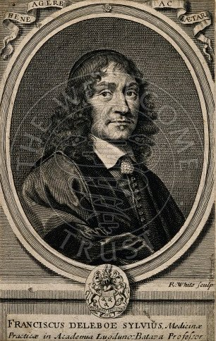
Franciscus Sylvius [Deleboe]. gravure de R. White d'après C. van Dalen
Quoique François Sylvius n'ait pas été un chimiste de profession, le Dr. Hoëfer ne pouvait se dispenser de le mentionner comme un des médecins qui ont le plus cherché à appliquer la chimie à la théorie de la médecine et de la physiologie. Il a considéré la digestion comme une fermentation. Il a attribué la coloration du sang artériel à l'air, et comparé la respiration à une combustion. Mais il n'a plus été aussi bien inspiré quand il a fait dépendre les maladies d'un principe acide et d'un principe alcalin. En définitive, Sylvius a fait d'utiles applications de la chimie à la médecine ; il a employé, à l'intérieur l'azotate d'argent, le sulfate de zinc, même le sublimé corrosif. Il avait foi aux préparations d'antimoine, aussi les prescrivait-il souvent dans sa pratique médicale.
Frédéric Hoffmann fut un célèbre médecin qui, convaincu de l'utilité de la chimie dans l'étude de l'économie animale, se livra à des recherches dont le but principal était de l'éclairer dans la pratique de son art. Il les publia sous le titre d'Observations physiques et chimiques. Si la clarté des idées, l'agrément du style les recommandent au lecteur, il faut convenir que le fond des choses est bien inférieur à la forme, soit qu'on en considère la profondeur, soit qu'on en considère la nouveauté, et si Venel, grand partisan de Stahl, a été trop loin en disant :« que les dissertations d'Hoffmann sur les eaux minérales, qui ont été fort admirées et fort copiées, ne sont qu'un mauvais ouvrage bien fait »
cependant ce jugement a quelque fondement, et nous croyons que le docteur Hoëfer a trop accordé de mérite chimique à l'homme qui fut incontestablement un médecin éminent.
Jean François Vigani vécut en Angleterre, publia un ouvrage intitulé Medulla chimiae, dans lequel on trouve quelques faits intéressants, notamment la préparation du sulfate d'ammoniaque obtenu de la décomposition du sulfate de protoxyde de fer par cet alcali. Enfin, il faut ajouter aux médecins qui préconisèrent la chimie, Nic. Chesneau, de Marseille, Th. Willis, J. Zwelfer, P. Poterius, d'Angers, L. de la Rivière, Bartoletti, qui a parlé du sucre de lait sous la dénomination de manna seu nitrum seri lactis; R. Mendererus, connu par l'usage qu'il fit de l'acétate d'ammoniaque ; la solution de ce sel fut connue sous la dénomination d'esprit ou d'eau de Mendererus. Nous citerons encore Tarquet de Mayerne, qui fut dégradé du titre de docteur par jugement de la Faculté de médecine, parce qu'il avait prescrit à ses malades des préparations antimoniales, mercurielles, ferrugineuses, etc. Ce ne fut qu'en 1666, année de la fondation de l'Académie royale des sciences de Paris, que l'arrêt qui avait défendu l'usage des préparations d'antimoine fut rapporté par le collège des médecins de Paris ; Sennert, Kerner, Pierre Borel, auquel nous devons un catalogue des livres de la philosophie hermétique, Arnaud, Barlet, Starkey, An. Cassius, Bertrand de Lyon, J.Hartmann, qui, à Marbourg, eut la première chaire instituée en Allemagne pour l'enseignement de la chimie ; Reineccius, Pitcairn, J. Swammerdam , H. Overkamp, Mongnot, S. Regis, Vieussens, Pierre Chirac, Ninot, H. Barbatus, Olaus Borrichius, un des historiens de la chimie, E. Harvey, M. Churas, J. Manget, l'érudit auteur d'une Bibliotheca chimica, J. Muralt, C. Axt, B. Valentini, qui fit un grand usage de la magnésie ; J. Juncken, Th. Bertholin, qui chercha dans les actions chimiques l'explication du ramollissement des os ; Th. Willis, qui compara la respiration à la combustion. Enfin, dans la derniére moitié du XVIIe siècle, les médecins s'occupèrent beaucoup des eaux minérales ; nous citerons J. Wedel, G. Vicarius, Molitor, Duclos, Tilemann, Goeckel, Thile, Lister, Schreyer, Stisser, Givry, J. Rai, Rhodez, A. Terre. Plusieurs médecins se livrèrent à l'examen des liquides de l'économie animale : le lait fixa l'attention de Persius Trevus et de J. Nardias, le sang celle de Heyde et de Vieussens ; la salive fut un objet d'étude pour Slare et Nuck ; Chrouet travailla sur les humeurs de l'oeil ; Ant. de Heyde, sur le pus ; J. Hoffmann, Jonston, Koenig, Pechlin et Smalt, écrivirent sur les calculs de la vessie et des organes biliaires.
La médecine ne pouvait s'occuper de la chimie,sans que la pharmacie n'en ressentît l'influence, aussi publia-t-on un grand nombre de pharmacopées dans la dernière moitié du XVIIe siècle, et le laboratoire du pharmacien commença-t-il réellement à devenir celui du chimiste. Parmi les pharmaciens qui se distinguèrent comme auteurs de traités de chimie, nous citerons avec le docteur Hoëfer : Lefebvre, Glaser et Nicolas Lemery, parce que, s'ils ne se recommandent pas par l'originaiité de la pensée, ils ont, à des titres divers, le mérite de la clarté dans l'exposé des opérations chimiques qu'ils ont décrites dans des traités de chimie. [les traités de chimie - Chymie - de ces trois pharmaciens sont indispensables si l'on souhaite raisonner dans l'optique de l'époque et comprendre de nombreux tours de main décrits dans les traités alchimiques -]
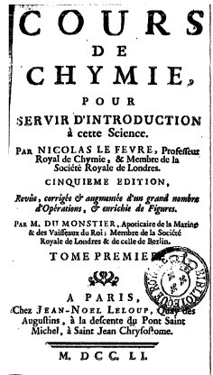
frontispice du Cours de Chymie, 1751
Nicolas Lefébvre, démonstrateur de chimie au Jardin du Roi, en 1660, publia un cours de chimie cette même année. Il distinguait trois espèces de chimie, la chimie philosophique, dont l'objet est de connaître, par la contemplation, la nature des cieux et de leurs astres, la source des éléments, la cause des météores, l'origine des minéraux et la nourriture des plantes et des animaux ; en un mot elle raisonne sur des choses qui ne sont aucunement en notre puissance, dit-il. La chimie philosophique de Nicolas Lefebvre est bien l'expression de la méthode a priori ; sa base pose dans le monde invisible, et ses généralités la rattachent à l'astrologie et à la magie telles que les Orientaux les ont envisagées dans les temps les plus anciens. La seconde espèce est la iatrochimie ou médecine chimique qui, plus restreinte par le but, envisage l'opération à l'aide de la chimie contemplative ou philosophique. La troisième espèce, la chimie pharmaceutique, a pour but l'opération circonscrite seulement au point de vue de l'exécution ou de la pratique. Ces distinctions montrent clairement comment l'enseignement de la chimie au Jardin du Roi avait pu, à son origine, être partagé entre deux personnes, le médecin professeur, chargé d'exposer la théorie de l'opération, et l'apothicaire démonstrateur, chargé d'en expliquer la pratique, Lefebvre, auquel cette dernière fonction était dévolue, divisait sa chimie en deux parties, la théorie et la pratique, et chaque partie se composait de deux livres.
Ière Partie. Théorie
- Le premier livre traite des principes et des éléments des choses naturelles;
- Le deuxième livre des sources et des effets du pur et de l'impur.IIème Partie. Pratique :
- Le premier livre renferme les définitions des termes nécessaires pour faire et comprendre les opérations de la chimie ;
- Le deuxième livre comprend les procédés d'analyse, ou, comme le dit l'auteur, les moyens de pouvoir anatomiser les mixtes que fournissent les végétaux, les animaux et les minéraux, afin d'en retirer des remèdes nécessaires à la cure des maladies.
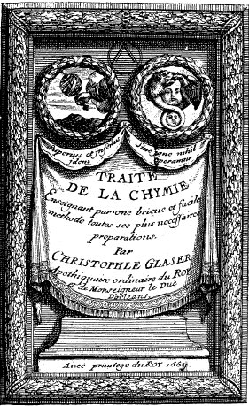
frontispice du Traité de la Chymie, 1669
[Du traité de Glaser, nous signalerons surtout : le livre premier où figurent des explications claires touchant aux fourneaux et aux vaisseaux avec de superbes figures ainsi que des définitions touchant aux trois principes des alchimistes. On trouve encore un chapitre sur la rosée et sur la manne -]
Christophle Glaser, successeur de Lefebvre dans les fonctions de démonstrateur au Jardin du Roi, en 1663, publia la même année son traité de chimie, qui eut trois éditions ; il est divisé en trois sections ; la première traite des minéraux ; la seconde des végétaux, et la troisième des animaux, Cet ouvrage, tout pratique, est remarquable par la clarté des descriptions. Tout le monde sait que Christophle Glaser avait eu quelques relations avec la marquise de Brinvilliers, et qu'il quitta la France à l'occasion du procès de cette femme, qui recourait à l'acide arsenieux, au sublimé corrosif et à l'opium, pour frapper ses victimes. [la couverture de ce traité de chimie montre deux gravures ; l'une, à droite est empruntée à l'Azoth, attribué à Basile Valentin (4ème gravure) et l'autre, à gauche, est une allégorie représentant Hermès Trismégiste, tirée du Jardinet récréatif hermético-spagyrique, Francfort, 1625, série de cent soixante médaillons alchimiques de Stoltzius von Stolzenberg - ce médaillon illustre l'Alchimie expliquée sur ses Textes classiques d'E. Canseliet, p. 223 (Pauvert, 1972) -]
Nicolas Lemery
[l'oeuvre de Nicolas Lemery est de toute première importance pour l'étudiant en art alchimique ou spagyrique. Il trouvera dans le Cours de Chymie une masse de renseignements sur les sels, les métaux, etc. renvois récents :1, 2, 3, 4, 5, 6, 7, 8, 9, 10,]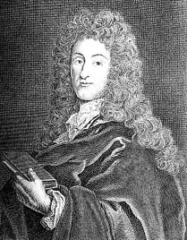
Nicolas Lémery. gravure de N. Pitau d'après L. E. Ferdinand
[Nous avons extrait des éléments biographiques, écrits par Fontenelle, extraits de l'Histoire de l'Académie royale, de 1715 -]
Nicolas Lemery, né à Rouen en 1645, étant venu à Paris en 1666 pour étudier la chimie :« s'adressa, dit Fontenelle, à M. Glaser, alors démonstrateur de chimie au Jardin du Roi, et se mit en pension chez lui pour être à une bonne source d'expériences et d'analyses ; mais il se trouva malheureusement que M. Glaser était un vrai chimiste, plein d'idées obscures, et avare de ces idées-là même, et très-peu sociable. »
Si le jugement de Fontenelle sur Glaser était fondé, il ne faudrait pas, pour rester dans la vérité, l'étendre au Cours de chimie dont nous venons de vanter la clarté. Quoi qu'il en soit, cette qualité se retrouve dans les écrits de Lemery, et particulièrement dans son Cours de chimie, dont la 1ère édition parut en 1675. Fontenelle a pu dire de ce livre :
« La gloire qui se tire de la promptitude du débit, n'est pas pour les livres savants ; mais celui-là fut excepté; il se vendit comme un livre de galanterie ou de satire. »
Ce succès avait été préparé par l'éclat des cours particuliers que Lemery avait ouverts chez lui rue Galande, dans son laboratoire, où les dames mêmes, entraînées par la mode, avaient l'audace de venir se montrer, dit Fontenelle. Enfin,Fontenelle dit encore, à propos de Lemery :
« La chimie avait été jusque-là une science, où, pour emprunter ses propres termes (ceux de Lemery), un peu de vrai était tellement dissous dans une grande quantité de faux, qu'il en était devenu invisible, et tous deux presque inséparables.»
Le Dr. Hoëfer, en parlant des cours de chimie de Lemery, a choisi un certain nombre de citations intéressantes qui justifient les éloges donnés à ce livre ; l'une d'elles montre que Lemery avait observé l'inflammation du gaz résultant de la réaction du fer et de l'acide sulfurique étendu d'eau ; les autres portent sur la définition des poisons, différentes préparations médicinales, l'inflammabilité du mélange de fer et de soufre, et les encres sympathiques faites avec l'acétate de plomb ou l'azotate de bismuth ; il en rendait les caractères visibles au moyen des préparations à base d'un sulfure alcalin. Le Dr Hoëfer insiste sur le fait de l'augmentation de poids du plomb par la calcination, que Lemery mentionne et explique par la fixation du feu, à l'instar de Boyle. Nous reviendrons sur ce sujet dans un moment. Enfin le Dr Hoëfer remarque avec raison que Lemery avait parfaitement saisi la différence existant entre les sels obtenus des sucs des plantes, et les sels obtenus de leur incinération. Mais convenons qu'il n'existe aucune vue générale dans l'ouvrage de Lernery, que toutes les explications qu'il a données des phénomènes chimiques reposent sur des propriétés mécaniques ou physiques, qu'il n'a nullement distingué, à l'instar de Boyle, la combinaison d'avec le mélange,et que ses idées sur les principes des codas, ou les éléments, ont toujours été vagues. Il est parti des opérations chimiques dont il connaissait parfaitement l'exécution, et s'est arrêté immédiatement, lorsqu'il n'a pas toutefois cherché à expliquer par des propriétés purement mécaniques les phénomènes manifestés dans les opérations qu'il décrivait.
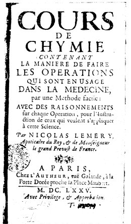
frontispice du Cours de Chymie, 1675
Pour terminer l'exposé des travaux relatifs à la chimie que nous plaçons hors du domaine de la théorie, disons que le docteur Hoëfer parle des alchimistes du XVIIe siècle. Il y comprend la confrérie des Rose-croix dont le public eut connaissance en 1604, et il termine cette partie de son ouvrage par les critiques qu'Athanase Kirker,né en 1602, mort en 1680, fit de l'alchimie. [au sujet des Rose-Croix, il est intéressant de noter que dans l'une des figures de l'Azoth, attribué à Basile Valentin, on remarque que l'androgyne hermétique tient un compas et une équerre. Cet ouvrage date de 1659 ; il est donc antérieur à la date admise pour la création de la Franc-maçonnerie, date arbitrairement fixée à l'année 1717. Quant à Basile, on sait qu'il s'agit d'un personnage de légende qui semble avoir vécu au XIVe ou au XVe siècle et dont tous les ouvrages sont supposés - sur les R+C, voyez l'Aureum Seculum Redivivum de Mynsicht et le Tractatus de Grasseus.]
Les hommes que nous venons de passer en revue se sont principalement occupés de chimie pratique, car, s'il en est qui aient fait des théories, celles-ci, filles de la méthode a PRIORI, n'ont jamais été assez étroitement liées aux faits pour mériter d'être prises en considération parce qu'elles auraient été l'origine d'une théorie chimique proprement dite. Il nous reste à parler d'hommes auxquels on peut rattacher immédiatement les premières théories chimiques que l'on ait imaginées en partant de l'expérience. Parmi eux ii en est, comme J. Becher, qui continuent les travaux des alchimistes et des chimistes en n'opérant que sur les corps solides ou quelquefois liquides, et d'autres qui, comme Jean Rey, Jean Mayow et Jean Bernouilli, envisagent surtout les corps à l'état gazeux.
Joachim Becher.
[1, 2, 3, 4, 5, 6, 7,]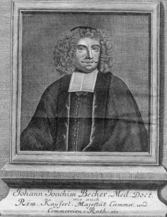
[L'importance de Becher est telle - créateur d'une « néo-alchimie » que nous avons développé un petit chapitre spécial à partir des notes de Cuvier -]
Becher, né à Spire en 1625, mort en 1682, fut donc le contemporain de Glauber et de Kunckel. S'il ne rendit pas à la science expérimentale les mêmes services que ses deux compatriotes, quoiqu'il ait eu, pendant plusieurs années, la direction du laboratoire de chimie de la ville de Munich, le plus beau qui existât alors, cependant son nom ne s'effacera pas de l'histoire des théories chimiques : ce n'est pas que ses ouvrages lui assurent le titre de théoricien, mais c'est que l'illustre Georges-Ernest Stahl, à notre sens l'auteur de la première théorie chimique, par un sentiment bien honorable sans doute, a cité Becher comme l'homme qui avait envisagé les travaux chimiques d'un autre oeil que ceux qui l'avaient précédé, et aux idées duquel il a rattaché sa théorie du phlogistique. En lisant la Physica subterranea, dont Becher n'a publié que la première partie, on aperçoit bientôt combien l'auteur est loin d'envisager les opérations chimiques à la manière de Glauber et de Kunckel, et comment son imagination l'entraîne sans cesse dans le champ des suppositions ou des hypothèses. On s'explique alors pourquoi le docteur Hoëfer le juge sévèrement et lui consacre à peine trois pages. Il ne cite comme découverte de Becher que la préparation du beurre d'antimoine [cf. Currus Triumphalis] au moyen d'un mélange d'antimoine, de vitriol et de sel marin, et il ajoute qu'il paraît avoir connu l'acide borique obtenu de la décomposition du borax par l'acide sulfurique ; dans ce cas, il aurait prévenu Homberg. Mais, si on lit Becher, en prenant en considération le jugement que Stahl a porté de ses idées, il apparaît sous un autre aspect, et l'on aperçoit alors qu'elles avaient une originalité qu'on ne leur soupçonnait pas auparavant. Si Becher était placé si haut dans l'estime de Stahl, acceptons le jugement de l'auteur de la théorie du phlogistique, et croyons à cette originalité, puisqu'elle est proclamée par celui qui aurait eu le plus d'intérêt à la dissimuler afin qu'on ne découvrît pas la source où il a puisé l'idée qui l'a immortalisé. Certes, si tous les hommes de génie avaient imité Stahl, en reconnaissant leurs dettes à l'égard de leurs prédécesseurs, sans doute des auteurs aujourd'hui obscurs ou peu estimés auraient une renommée qu'ils devraient à la mention honorable que le génie reconnaissant aurait décernée à leur mémoire ! Dans l'article suivant, en parlant de Stahl, nous reviendrons sur les trois éléments de Becher, une terre vitrifiable et transparente, une terre volatile subtile, mercurielle, et un principe combustible, éléments fort différents du mercure, du soufre et du sel, admis par les alchimistes depuis Isaac les Hollandais et Basile Valentin.
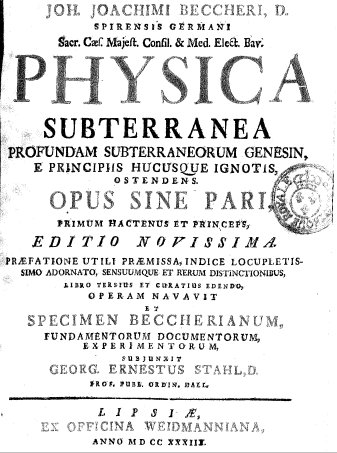
frontispice de la Physica Subterranea, 1738
Nous avons eu plusieurs fois l'occasion de parler de l'augmentation de poids des métaux par la calcination. Elle était connue de Geber au IXe siècle, plus tard, Eck de Sulbach, Cesalpin, Cardan, Libavius, Porta, etc., etc., en firent mention dans leurs écrits. Mais quelle en était la cause ? Un médecin du nom de Jean Rey, né à Bugues sur la Dordogne, consulté par Brun, apothicaire à Bergerac, qui venait d'observer l'augmentation de poids de l'étain calciné, publia, en 1630, un petit ouvrage dédié au prince de Sedan, duc de Bouillon, dans lequel il résume en ces termes son opinion relativement à la question de savoir pourquoi l'étain et le plomb augmentent de poids quand on les calcine :« A cette demande doncques, appuyé sur les fondements ja posez je responds et soustiens glorieusement que ce surcroit de poids vient de l'air qui dans le vase a esté espessi, appesanti et rendu aucunement adhésif par la vehemente et longuement continue chaleur du fourneau ; lequel air se mesle avecque la chaux (à ce aydant l'agitation fréquente) et s'attache à ses plus menues parties : non autrement que l'eau appesantit le sable que vous jettez dans icelle pour l'amoitir et adhérer au moindre de ses grains. »
Quoique le livre de Jean Rey ait vivement occupé ses contemporains, particulièrement le père Mersenne, il parut oublié en 1643, année de la découverte du baromètre par Toricelli, et en 1648, lorsque Pascal démontra la diminution de la colonne barométrique à mesure qu'on s'élève dans l'atmosphère. Nous ne nous rappelons même pas que Jean Rey ait été cité par Descartes, qui parla de la pesanteur de l'air avant Toricelli. S'il ne fut pas absolument oublié jusqu'en 1775, cependant tous les physiciens et chimistes qui, vers cette époque, étudièrent l'air et les gaz, ne prononcèrent pas son nom, et cependant l'explication de la combustion et de la calcination des métaux occupait alors la pensée des hommes les plus illustres du monde savant. Mais la gloire qui commençait pour Lavoisier devait exciter l'envie, aussi est-il vraisemblable que ce fut avec l'intention de rabaisser ses travaux que l'on publia, en 1777, une nouvelle édition des Essais de Jean Rey avec des notes de Gobet. Notre savant confrère, M. Biot, a parfaitement montré, dans ce journal, la différence qu'il y a entre les essais de Jean Rey et les travaux de Lavoisier, sur la calcination des métaux en général et l'analyse de l'air atmosphérique en particulier. Nous souscrivons à ce jugement, mais, au point de vue de l'histoire de la chimie où nous sommes placé, on nous permettra sans doute de faire quelques observations. Jean Rey vivait loin de Paris ; il s'occupait de mécanique, puisqu'il parle d'une arquebuse pneumatique de son invention, et il se montre, dans ses essais, plus physicien que chimiste. C'est pour répondre d'une question de Brun sur un fait particulier, l'augmentation de poids de l'étain par la calcination, qu'il traite en général un fait connu depuis longtemps d'un grand nombre d'alchimistes et de chimistes. Et certes, quand Jean Rey établit que l'air est pesant par des raisonnements précis qu'il distingue le poids apparent des corps pesés dans l'air d'avec le poids réel des mêmes corps qui seraient pesés dans le vide, qu'à l'appui de sa manière de voir il cite l'augmentation de poids d'un ballon dans lequel on a insufflé de l'air ; qu'après avoir ainsi établi la pesanteur de l'air, il fait justice de toutes les explications alchimiques de l'augmentation de poids des métaux calcinés, augmentation qui serait due tantôt à un sel passant du combustible dans les métaux, tantôt à la suie ou à des parties matérielles détachées des vaisseaux qui servent et la calcination, et enfin, quand il insiste tant sur ce que le phénomène a lieu encore lorsque le métal est exposé sur une gueuse de fer rouge de feu ou bien au foyer d'une lentille, on ne peut se refuser à le considérer comme un esprit tout à fait original et supérieur à la plupart de ses contemporains. En effet ce jugement n'est-il pas confirmé, lorsqu'on voit R. Boyle, plus de quarante ans après Jean Rey (en 1674), à une époque où la pesanteur de l'air était un fait incontestable, attribuer l'augmentation de poids des métaux au feu et à la flamme, qui s'y fixent en passant au travers des pores du creuset, et admettre, en outre, que le phénomène s'observe dans un vase fermé aussi bien que dans un vase ouvert. Eh bien, J. Rey, dans une lettre au père Mersenne, datée de 1632, rejette avec raison ce résultat comme impossible. Enfin le mérite de Jean Rey ne se rehausse-t-il pas encore de la comparaison de sa position sociale, avec celle de R. Boyle ? Cadet de famille, il était obligé, pour vivre, d'exercer la médecine loin de la capitale, dans une petite ville, tandis que R. Boyle, vivant au milieu des hommes les plus distingués de l'Angleterre, se trouvait â la tête de la Société royale de Londres, jouissant d'une fortune qui lui permettait de réaliser les expériences que son esprit lui suggérait au moment même où il les conçevait ! Nous ne rapprochons donc pas J. Rey de Lavoisier pour abaisser la gloire du fondateur de la seconde théorique chimique ; nous ne comparons pas J. Rey, pour lequel l'air est un élément, avec Lavoisier démontrant la composition de l'air par l'analyse faite au moyen de l'oxydation du mercure et par la synthèse opérée en réunissant l'azote avec l'oxygène dégagé de l'oxyde de mercure par la chaleur seulement ; nous comparons J. Rey traitant une question de chimie avec ceux de ses contemporains qui s'occupèrent du même sujet.
Après Jean Rey, Descartes, Toricelli et Pascal, qui s'occupèrent de l'air atmosphérique au point de vue physique surtout, plusieurs des propriétés de ce mixte gazeux, quelques-unes de celles de l'acide carbonique et de gaz inflammables à base d'hydrogène, devinrent un objet d'étude ou d'observations pour R. Boyle, Wren, Hook, Hugens, Moray, Pope, Birch, Hagedorn, Fred. Hofmann, Jesop, Lister, Moslyn, Browne, Hodgson, Shirley, Ant.Portius, Ledel, Bocone, Lamorendière, Pozzi, Beaumont, etc. Mais, R. Boyle excepté, aucun d'eux n'a publié un ensemble de vues et d'observations aussi intéressantes pour la chimie pneumatique que l'a fait Jean Mayow dans deux traités médico-physiques intitulés l'un De sale vitro et spiritu vitro-aereo l'autre De respiratione. Ils furent publiés en 1674 : l'auteur était né en 1645, il mourut en 1679. Suivant J. Mayow , le nitre est composé d'un acide et d'un alcali. La terre et l'air concourent à sa formation en fournissant, la première l'alcali, et le second un de ses éléments, qu'il appelle esprit nitro-aérien, c'est-à-dire que Mayow ne considère pas l'air comme un corps simple. [cet esprit s'apparente donc à « l'esprit universel » que Lémery considérait être de l'acide vitriolique -] En effet, il prouve expérimentalement qu'il n'y a qu'une portion de l'air, pour un volume donné, qui entretient la combustion et la respiration, et que cette portion est l'esprit nitro-aérien. C'est encore à ce principe qu'est due la rouille du fer exposé à l'air. Toutes ces vues sont parfaitement justes ; mais, après avoir fait remarquer que l'esprit nitro-aérien diffère de l'esprit acide de nitre (l'acide azotique hydraté) en ce que celui-ci éteint la flamme et agit sur les animaux comme corrosif, il n'explique pas en quoi consiste la différence. Ainsi, en traduisant la manière de voir de Mayow en langage moderne, ii avait vu deux gaz également élastiques dans l'air, l'oxygène et l'azote. Il avait vu que, dans la combustion et la respiration, l'oxygène disparaît et que la force élastique de l'air qui ne peut plus servir ni à la combustion ni à la respiration, est plus faible qu'elle n'était avant que l'air eût entretenu la flamme et la vie d'un animal. Mayow se demande [ce] que devient l'esprit nitro-aérien dans la combustion ? Selon lui, il se fixe au corps combustible. C'est ainsi qu'il admet que l'esprit nitro-aérien étant un des éléments du nitre, le nitre peut faire brûler le soufre sans le contact de l'air, et qu'en agissant sur l'antirnoine il donne l'antimoine diaphorétique qui est semblable à l'antimoine brûlé dans l'air. Enfin le soufre ne contient pas d'acide sulfurique ; ce corps résulte de l'union du soufre avec l'esprit nitro-aérien, soit que celui-ci provienne de l'air, soit qu'il provienne d e l'esprit acide de nitre, (acide azotique hydraté). Enfin, J. Mayow attribue la fermentation et la putréfaction à l'esprit nitro-arien, car, sans le contact de l'air, ni les sucs sucrés ne fermentent, ni les matières organiques ne s'altèrent. J. Mayow avait parfaitement vu encore que, dans la respiration, le sang noir devient rouge par l'action de l'esprit nitro-aérien et que la chaleur animale est une conséquence de la réaction. H. Mund, L. M. Barbieri, V. B. Giovannini, N. Pechlin, Al. Littre, J. Slare, adoptèrent les idées de J. Mayow ou le suivirent dans la route qu'il venait d'ouvrir. Enfin, Jean Bernouiili, en 1690, publia des expériences fort intéressantes dans une dissertation De effervescentia et fermentatione. Il vit que la chaleur dégage de l'air de l'eau, et qu'après ce dégagement, elle est impropre à la vie des poissons. Ces résultats ont été confirmés par beaucoup de savants et notamment par Corradori. J. Bernoulli imagina un appareil très-simple pour recueillir le produit de l'effervescence de la craie mise en contact avec de l'eau acidulée. Il attribua le gonflement de la pâte de farine levée au dégagement d'un gaz. Enfin, en enflammant la poudre au moyen d'une lentille, dans un ballon dont le col était long, courbé et plongé dans l'eau, il montra la possibilité de recueillir le produit gazeux d'une détonation. Dans un dernier article, nous examinerons la section troisième de la troisième époque de l'histoire de la chimie du docteur Hoëfer. 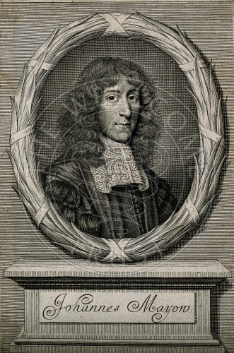
John Mayow. gravure attribuée à W. Faithorne, 1674
La 3ème section de la 3ème époque de l'ouvrage du docteur F. Hoëfer comprend les progrès de la chimie depuis 1700 jusqu'à Lavoisier, exclusivement. Le premier auteur dont il fasse mention est Moitrel d'Elément, qui, en 1719, publia la manière de rendre l'air visible et assez sensible pour le mesurer par pinte ou par telle autre mesure que l'on voudra, pour faire des jets d'air qui sont aussi visibles que des jets d'eau. Moitrel d'Élément, absolument pauvre, chercha vainement à améliorer son sort en faisant des leçons sur le sujet de son livre. Le docteur Hoëfer cite, comme chimistes qui s'occupèrent des gaz dans la première moitié du XVIIIe siècle, J. Gottsched, Hawksbée, Greenwood, Lowther, Mand, Charlett, Durand, Pinkenau, Ryberg, Lange, S.Sutton, Ph. Percivai, Lane, Browali, Triewald, Bioernshahl, Deichrnann,Theobald, Frewen Bel et Newton. Même pour l'imrnortel auteur de la loi de la gravitation, le docteur Hoëfer se borne à l'indication des travaux de ces savants ; il parle avec plus de détails de E. Hales, auteur de la Statique des végétaux.
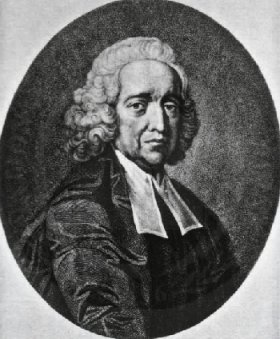
La Statique des végétaux, publiée par Étienne Hales en 1727, fit une grande sensation dans le monde savant ; aussi fut-elle traduite en hollandais, en allemand, et l'illustre Buffon ne dédaigna pas de nous la faire connaître dans une traduction où les expériences sont reproduites avec les détails les plus fidèles. Les appareils imaginés par E. Hales, pour mesurer la force ascensionnelle de la sève de plusieurs arbres, ses expériences pour déterminer la transpiration des diverses parties des végétaux, témoigneront toujours de son génie expérimental ; mais, quelque recommandables que soient ces titres, il ne leur doit pas la place qu'il occupe dans l'histoire de la chimie, comme nous allons le voir. Frappé de la grande quantité d'air qui entre dans les végétaux, il se demande à quoi sert ce fluide élastique ? En cherchant la solution de cette question, il imagine de soumettre les produits de l'organisation à la distillation dans un appareil composé d'une cornue mise en communication, au moyen d'un tube en plomb courbé, avec un récipient plein d'eau, renversé dans un bain de ce liquide. Il recueille ainsi le produit gazeux d'un grand nombre de corps ; mais Hales, physicien plus que chimiste, le considère comme identique à l'air de l'atmosphère, et dès lors il imagine que la matière des végétaux et des animaux est formée principalement de particules acides et sulfureuses qui, prés de leur point de contact, agissent avec assez de force pour fixer et soumettre les particules aériennes et élastiques dont la force répulsive est cependant assez puissante pour ne pas succomber sous le poids énorme dont elles sont quelquefois chargées. Quoi qu'il en soit, l'invention d'un moyen simple de recueillir les gaz qui se dégagent non seulement d'une distillation, mais d'une réaction quelconque où ii y a effervescence, est la perfection des procédés signalés plus haut, en parlant de R. Boyle, de J. Mayow, de J. Bernouilli, de Moitrel d'Elément, et, c'est à ce titre que le nom de E. Hales appartient à l'histoire de la chimie. Mais, reculant devant les conséquences qu'un homme doué du génie chimique eût tirées de ses expériences, relativement à la véritable nature des divers fluides élastiques qu'il recueillit de la distillation des matières organiques, des réactions de l'acide sulfurique aqueux et du fer, de l'acide azotique aqueux et du cuivre, des acides et du sous-carbonate de chaux, etc., etc., méconnaissant les conséquences des phénomènes qu'il observa en faisant brûler des bougies, du phosphore, etc., E. Hales conclut que l'air de l'atmosphère se fixait simplement, en vertu d'une force attractive, avec différentes matières, et que la diversité qu'on remarquait dans l'air dégagé de ces mêmes matières par le moyen dont il s'était servi tenait à des restes de ces matières qui en altéraient la pureté ; ces restes de matière rappellent les propriétés fermentales par lesquelles Van Helmont expliquait la nature des gaz qui, suivant lui, étaient de l'eau rendue incoercible par un reste de l'archée provenant de l'altération du corps qui avait été soumis à l'expérience [voir le cahier de mars 1850]. Le docteur Hoëfer cite brièvement après Hales quelques travaux sur les gaz, ou sur leurs effets organoleptiques, de Boerhaave, de Venel, de Geoffroy l'aîné, de Desaguliers, de Duhamel, de Muschembroek, de J. Huber, de G. Hauser, de J. Veratti, de J. Mosca, de Nollet, de Daquen, de Fave, de Sauvages, de Hannoeus, de Bartels, de Teichmeyer, de Schreck, d'Alberti, de Reimmann et de Seip. Après cette indication il parle de J. Blach.
Joseph Black. [1]
De 1728 à 1799
gravure de 1830
Il commence l'article qu'il consacre à ce savant, en disant :
« plus ancien que Lavoisier, Black reste, avec quelque restriction, fidèle à la doctrine du phlogistique, en dépit des progrès immenses que faisait journellement la science...»
Or le docteur Hoëfer n'a point encore exposé cette théorie, il n'en parlera que cinquante pages plus loin, à l'article de G. E. Stahl son fondateur. Le défaut de méthode que nous avons reproché à l'auteur est donc bien sensible par cette citation, car Black ne devrait venir qu'après Stahl ; quoi qu'il en soit, nous allons continuer l'examen de l'ouvrage, conformément à l'ordre des matières qui y sont exposées. En même temps qu'un professorat brillant fit la réputation de Black auprès des étudiants et des gens du monde, deux découvertes capitales immortalisèrent son nom. L'une concerne la nature des alcalis carbonatés et des alcalis caustiques ; l'autre la chaleur latente. En 1757, Black, après avoir constaté, comme le docteur Hoffmann l'avait dit, que la magnésie est une base tout à fait différente de la chaux, reconnut que la magnésie calcinée diffère de la magnésie ordinaire (sous-carbonate de magnésie), en ce qu'elle ne contient pas d'air fixe (acide aérien de Bergmann, acide carbonique) ; il distingua de la manière la plus explicite l'air fixe de l'air commun, il ne tomba donc pas dans l'erreur de E. Hales. Il dit que la magnésie ordinaire (carbonatée) précipitée du sulfate avait reçu son air fixe de la potasse ordinaire (carbonatée), il généralisa ces résultats, en montrant que la chaux rendait caustique la potasse, la soude et l'ammoniaque ordinaires (carbonatées), en s'emparant de leur air fixe. Black découvrit que le gaz dégagé pendant la fermentation est de l'air fixe, [c'est-à-dire le dioxyde de carbone.] ainsi que le gaz produit par la combustion du charbon. En 1762, Black démontra pendant la fusion de la glace l'absorption d'une certaine quantité de chaleur qu'il qualifia de latente par la raison qu'elle perd la faculté d'échauffer le thermomètre. Des expériences récentes ont appris qu'un kilogramme de glace à zéro exige, pour se liquéfier, la quantité de chaleur qui élève 1 kilogramme d'eau liquide de zéro a 79°, de sorte que 1 kilogramme d'eau à 79° et 1 kilogramme de glace à zéro donnent 2 kilogrammes d'eau à zéro. Black constata pareillement que l'eau bouillante ne se convertit en vapeur qu'en s'assimilant une quantité de chaleur latente, qui est représentée par 540, lorsque celle qui a élevé de zéro à 100° le même poids d'eau est représentée par 100. Ces simples énoncés suffisent pour montrer la grandeur de la découverte de Black, puisqu'elle comprend tous les corps susceptibles de se fondre et de se vaporiser, et qu'elle se lie ainsi à la constitution physique des liquides et des fluides élastiques. La théorie que Black avait donnée de l'action de la chaux sur les alcalis carbonatés fut adoptée par Macbride et par Cavendish, qui ajoutèrent, chacun de son côté, des faits intéressants à l'histoire de l'air fixe. Mais ii se trouva en Allemagne un pharmacien d'Osnabruck, Frédéric Meyer, qui, en 1764, publia des Essais de chimie sur la chaux vive, la matière élastique et électrique, le feu et l'acide universel qui ne tendaient à rien moins qu'à renverser de fond en comble la théorie de Black, puisque, suivant Meyer, le carbonate de chaux ne devenait pas caustique en perdant de l'air fixe comme le prétendait Black, mais bien en acquérant un acide particulier qiu'il nommait acidum pingue. Jacqain de Vienne défendit la théorie de Black, contre Meyer, mais il eut le tort de considérer l'air fixe comme de l'air atmosphérique ; Crans, médecin du roi de Plusse, et Smeth soutinrent encore la théorie erronée de Meyer. Nous ajouterons que Jean-Frédéric Meyer croyait à l'alchimie, ainsi qu'on peut le voir dans des lettres dites alchimiques adressées à un apothicaire de Hanovre, nommé André. Ces lettres furent imprimées en 1767 ; elles ne sont pas mentionnées dans l'ouvrage du docteur Hoëfer.
Le docteur Hoëfer examine successivement les Sociétés savantes d'Italie, la Société royale de Londres, l'Académie des sciences de Suède, les Sociétés savantes d'Allemagne, l'Académie impériale de Saint-Pétersbourg, et parle des progrès de la chimie dans les Pays-Bas, en France, en Allemagne et en Suède, antérieurement à Lavoisier, enfin il examine les travaux de Priestley. Nous allons reprendre chacun de ces titres en insistant sur les faits qui nous paraîtront les plus dignes d'intérêt.
Si les Italiens ne présentent pas de savants qui se soient occupés de chimie durant la plus grande partie de leur vie, cependant n'oublions pas les essais de Galeazzi sur les calculs biliaires, les expériences de Menghini sur la présence du fer dans le sang, sur l'action dont certaines eaux sont douées de dissoudre les calculs de la vessie, les observations de Th. Laghi sur le fer des cendres végétales et surtout la découverte du gluten dans la farine de froment par Beccari en 1745. C'était la première fois que l'analyse immédiate démontrait dans les plantes l'existence d'une matière aussi azotée que le sont les principes immédiats des animaux. Suivant nous, le docteur Hoëfer n'a point assez insisté sur les conséquences de cette découverte. J. Baldasari publia quelques observations sur un sel calcaire des environs de Sienne, sur l'amiante, etc. François Étienne de Lorraine, grand-duc de Toscane, devenu l'empereur François Ier, à l'exemple de Cosme lll, brûla à Vienne des diamants, non au foyer d'un miroir ardent ou d'une lentille, mais au feu des fourneaux. Enfin le comte de Saluces travailla sur le produit gazeux de la poudre à canon, sur la réaction de la chaux et de différents corps, sur les changements de teintes de la couleur des violettes par différents corps, sur le blanchiment et la teinture de la soie, etc.
Le docteur Hoëfer est très-bref sur les travaux des Anglais, antérieur à ceux de Priestley, il cite J. Brown, qui travailla sur le sel amer et le bleu de Prusse, Watson, qui a fait connaître le platine en Europe, Th. Perceival, J. Canton, qui découvrit la propriété phosphorescente des écailles d'huîtres calcinées avec le soufre, Slare, Smith, Coles, Southwell, Harris, Robin, Frobenius, Mortimer, Seehl, Mitschell, Pringle, Huxham, Brownrigg, Chapman, Wolf, Monro, Hewson, Delaval, Hartley, Shore, Irwin, Davison, French, Ramsay, Maclurg, Th. Young, Hotton, Redmond, Godfrey, Plummer, enfin W.Lewis. Le docteur Hoëfer est moins laconique sur les travaux de Lewis que sur ceux des savants qui le précèdent, En effet, les travaux de Lewis sont nombreux, variés et assez approfondis. Le docteur Hoëfer mentionne surtout ses expériences sur le platine, l'or, le verre et les couleurs.
Le docteur Hoëfer cite un assez grand nombre de chimistes allemands, mais il ne s'arrête sur aucun d'eux ; cependant il en est quelques-uns dont les travaux auraient pu donner lieu à des remarques intéressantes, tel est S. Fr. Henckel, [chimiste plusieurs fois cité par Fulcanelli : 1, 2, 3, 4, 5,]] auteur d'une pyritologie, du Flora saturnisans, etc. Les noms cités sont ceux de G. Kaïm qui travailla sur la plombagine, l'arsenic, le cobalt, le nickel et le manganèse (1770); de H. Knape, auteur d'une dissertation sur l'acide de la graisse animale ; de S. Q. Gleditsch, le botaniste, qui indiqua des plantes susceptibles de remplacer l'écorce de chêne dans le tannage du cuir, et s'occupa de l'amidon et du natrum ; de Val. Rose, un des quatre ou cinq savants auxquels on a attribué la découverte d'un alliage d'étain, de plomb et de bismuth fusible dans l'eau bouillante ; de Brannwiser, auteur d'un moyen d'isoler la matière colorante des plantes en recourant aux acides. Il cite encore F.F. Cartheuser et son fils Fr. Auguste, la famille des Gmelin
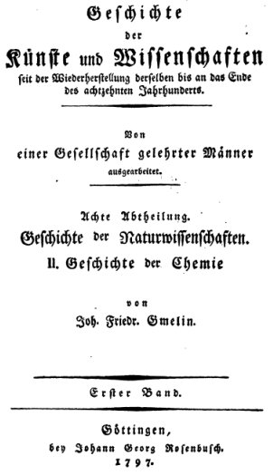
F. Gmelin, Histoire de la Chimie, 1797
[auteur d'une histoire de la chimie où l'alchimie occupe une place importante ; régulièrement cité dans la Bibliotheca Chemica de Ferguson - notes de Ferguson :
This is the second part of the 8th division of the " Geschichte der Künste und Wissenschaften," Göttingen, which was the predecessor of the Munich series of Histories of Science. J. F. Gmelin (1748-1804) was the grandson of Johann Georg Gmelin and father of Leopold, the author of the famous text-book of which a translation was published by the Cavendish Society. Notices of the different branches of the family are
given by Ersch & Gruber and by Poggendorff. The articles in the Allgemcine Deutsche Biographic are unsatisfactory. Gmelin's Geschichte is one of the recognised books of reference for the older Chemistry. It is not, however, really a history, but a collection of
materials towards a history. It is a great enumeration of dates and authors and titles, of mining statistics and of the discovery of substances, etc., but it is devoid of systematic arrangement; there are no subdivisions or classification, and there is nothing dealing with the development of the science itself. The references to books are drawn from Weigel, Halter, and other writers, but Gmelin has omitted what makes Weigel's lists so valuable the references to the authorities for the various editions. There is no index of subjects so that it is impossible to find anything except through the index of proper names, and it far too frequently gives the references inexactly. Gmelin's book, therefore, is not nearly so useful as it might hove been, even within its own scope.],
Charles-Abr. Gerhard, Ulr. Waldschmiedt, H. Got. Justi, Aug. Vogel, Wolfgang, Ad.Wedel, Büchner, H.Schulze, Mich. Alberti, J.Juncker, J.-Aul Scopoli et J. Delius.
Heilmann, Cappel, Fabricius, Schytte, Thue et Cnoll, publièrent quelques travaux chimiques dans les mémoires de la société royale des sciences de Copenhague, fondée en 1742.
Le docteur Hoëfer mentionne quelques travaux des membres de l'Académie impériale de Saint-Pétersbourg et de la Société économique de la même ville, Savoir : Michel Lomonosow, George Model, Leutmann, J. Gottleb Lehmann.
Boerhaave jouit, comme médecin , d'une des plus grandes réputations du XVIIIe siècle ; les Éléments de chimie qu'il publia, remarquables par l'élégance et la clarté du style, par la méthode avec laquelle il en disposa les matériaux, lui donnèrent un rang distingué parmi les chimistes ; cependant il faut avouer que les travaux de recherches qu'il peut avoir faits sont bien au-dessous de sa réputation. Le docteur Hoëfer cite parmi les compatriotes de Boerhaave qui s'occupèrent de chimie : H.,Doorschoot, S. Egeling, Vullyamoz, G. Klökhof, Alb. Schlosser, J. Kaas, Kriele, Delis et Al. Nahuys. De 1668 à 1738
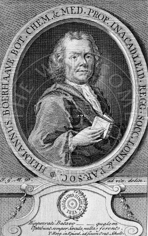
Hermann Boerhaave
L'auteur, après avoir reconnu la grande part de l'Académie royale des sciences de Paris dans les progrès des connaissances humaines, parle avec quelque détail de Geoffroy l'aîné, de Geoffroy le jeune, de Louis Lemery, de Hellot, de Bouldac, de Rouelle l'ainé, de Baron, de Macguer, de Duhamel du Monceau ; il mentionne les travaux de Cadet, Grosse, Réaumur, L. C. Bourdelin, Ch. J. Dufay, Malouin, de Lassone, J. B. Bacquet, il se borne ensuite à citer les noms de Barlet, de J. Pelletier, de Polynière, de Lefèvre, de Herissant, de Venel, de Lauraguais, de Darcet, de Fougeroux, de Bondaroy, de Courtanvaux, de Marcorelle, de Guettard, de Poli, de Saint-Amand, de Menon, de Bellery, de Rives, de Bourgelat, de René, d'Estève, de Ch. le Roi, de Suvigny, d'Imlin, de Romieu, de Matte, de Rohault, de Roederer, de Jars.
De 1672 à 1731.
Etienne François Geoffroy. gravure de L. Surugue, 1737, d'après N. de LargillièreDe 1642 à 1727,
Si le docteur Hoëfer apprécie généralement bien les travaux des savants français qu'il a cru devoir citer, cependant, faute de développements, le lecteur qui n'est pas déjà familiarisé avec l'histoire de la chimie sera dans l'impossibilité de se faire une idée exacte du mérite de ces travaux. Ainsi, pour montrer ce qu'il y a eu de considérable dans le travail d'Etienne-François Geoffroy, publié, en 1718, sous le titre de : Table des différents rapports observés en chimie entre différentes substances, il ne suffit pas de dire :" Un travail capital auquel le nom de Geoffroy restera éternellement attaché, s'est sa Table, .... C'est là qu'on trouve pour la première fois, nettement énoncée cette loi fondamentale : « Toutes les fois que deux substances ayant quelque tendance à se combiner l'une avec l'autre, se trouvent unies ensemble, et qu'il en survient une troisième qui ait plus d'affinité avec l'une des deux, elle s'y unit en faisant lâcher prise à l'autre ».
C'est sur cette loi qu'il établit la classification des acides des alcalis, des terres absorbantes et des substances métaliques. En effet, pour apprécier à sa juste valeur le mémoire d'Étienne-François Geoffroy, il faut connaître toutes les conséquences qui découlent du principe qu'on appelle l'affinité élective, tel que ce savant l'a établi par ses expériences. Une de ses conséquences est la possibilité de faire un grand nombre d'analyses : car, un très-petit nombre de cas exceptés, où, par de simples forces physiques, on sépare les principes d'une matière composée comme on le fait par exemple dans la décomposition du peroxyde de mercure par la chaleur seule, le chimiste se trouve obligé, pour l'analyse, à recourir à l'intervention d'un ou de plusieurs corps qui attirent plus fortement les principes de la matière composée qu'il veut analyser, que ceux-ci ne s'attirent mutuellement. Le principe de l'affinité élective est essentiellement propre à la chimie, car rien n'y correspond dans les attractions qui s'exercent à des distances sensibles, comme l'attraction de pesanteur et les attractions électriques ou magnétiques. Deux ans après la publication de son mémoire, E.F. Geoffroy répondit (Mémoires de l'Académie des Sciences, année 1820) à quelques objections relatives à l'ordre d'affinité qu'il avait assigné à certains corps. Ces réponses étaient satisfaisantes lorsque l'état de la science le permettait, mais évidemment alors, il y avait impossibilité de résoudre toutes les difficultés que l'on pouvait soulever. II donna d'excellentes raisons pour que la chaux doive être considérée comme un alcali, mais les explications des effets chimiques et organoleptiques des corps fondées sur leurs propriétés mécaniques ou physiques étaient si universellement professées, qu'il attribua le goût âcre et caustique de la chaux à DES PARTIES TRANCHANTES ET POINTUES capables de picoter et de déchirer les fibres de la langue. C'est dans cette réponse que se trouve l'observation remarquable que le fer qui se rouille sous la double influence de l'air et de l'humidité renferme de l'ammoniaque. Or, quoique ce fait eût été reproduit par Priestley et Proust, quelques chimistes en ont attribué la découverte à Vauquelin et il a acquis une grande importance en médecine légale, d'après la considération qu'un expert qui l'eût ignoré aurait été exposé à prendre pour du sang des taches de rouille qui auraient donné de l'ammoniaque à la distillation après qu'il les aurait eu détachées d'un fer soupçonné d'avoir servi à la perpétration d'un crime. La citation suivante de l'éloge de E. F. Geoffroy par Fontenelle montre combien, en France, les esprits étaient peu préparés à profiter du travail dont nous venons de parler :
« ll donna, en 1718, un système singulier et une table des affinités ou rapports des différentes substances en chimie. Ces affinités firent de la peine à quelques-uns qui craignirent que ce ne fussent des attractions déguisées, d'autant plus dangereuses, que d'habiles gens ont déjà su leur donner des formes séduisantes; mais enfin on reconnut qu'on pouvait passer par dessus ce scrupule et admettre la table de M. Geoffroy, qui bien a entendue et amenée à toute la précision nécessaire pouvait devenir une loi fondamentale des opérations de chimie et guider avec succès ceux qui travaillent. »
Voilà, certes, le jugement d'un cartésien bien convaincu ! E. F. Geoffroy fut un des membres les plus distingués de l'Académie royale des sciences ; il possédait plusieurs sciences de manière à les professer avec éclat. En 1709, il succéda à Tournefort dans la chaire de médecine du collège royal ; en 1712, Fagon se démit en sa faveur de sa place de professeur de chimie au Jardin du Roi ; non-seulement il y professa cette science avec éclat, mais encore la matière médicale. Il avait approfondi l'étude de la chimie, de la pharmacie, de la matière médicale et de la botanique, et il y avait été singulièrement préparé par l'éducation la plus habilement dirigée pour développer les facultés intellectuelles dont il était doué à un haut degré. Fontenelle dit :
« Que, quand il fut en physique, il se tenait chez son père des conférences réglées, où M. Cassini apportait ses planisphères, le P. Sébastien ses machines, M.Joblot, ses pierres d'aimant, où M. du Verney faisait ses dissections, et M. Homberg, des opérations de chimie. »
E. F. Geoffroy n'était point étranger aux sciences anatomiques et physiologiques, ainsi que le démontrent les thèses qu'il composa. Parmi elles, il en est une qui fit beaucoup de bruit ; elle piqua tellement la curiosité des dames, et des dames du plus haut rang, dit Fontenelle, qu'il fallut la traduire en français, pour les initier dans des mystères dont elles n'avaient pas la théorie. Le sujet de cette thèse était de savoir si l'homme a commencé par être ver. C'est à lui que nous sommes redevables d'un traité de rnatière médicale qui eut un succès mérité ; il composa la partie minérale et la partie végétale jusqu'au mot mélisse. E.F. Geoffroy était aussi distingué par les qualités du coeur que par ses facultés intellectuelles ; aussi jouit-il de l'estime publique et de celle de ses confrères en particuliers.
Le Dr Hoëfer, en parlant de Newton, avant E. F. Geoffroy, comme il le devait d'après l'ordre chonologique, ne lui consacre que ces lignes :« L'immortel Newton, qui, transportant la grande loi de l'attraction universelle dans le domaine de la chimie, avait le premier expliqué par l'affinité la dissolution des métaux par les acides, fit des expériences sur l'élasticité des gaz, et définit la flamme un fluide incandescent. »
Ces lignes suffisent-elles pour faire connaître les services rendus à la chimie par l'auteur de la découverte de la gravitation universelle ? Non, certainement ; mais, avant tout, remarquons qu'il n'est pas exact de dire qu'il a transporté la grande loi de l'attraction universelle dans la domaine de la chimie, car cette loi ne s'applique ni à l'affinité ni même à la cohésion, qui ne sont que l'attraction moléculaire. [C'est là un point de science des plus importants que soulève Chevreul. Nous avons développé ailleurs plusieures notions touchant à l'alchimie que pratiquait Newton -cf. section Principes en particulier. Faute de place, nous ne pouvons développer ici d'autres points, cf. Newton et la méthode a posteriori -]Après avoir parlé de l'importance du travail de E. F. Geoffroy sur l'affinité élective, montrons Newton, avec sa puissance d'esprit d'induction, établissant ce principe de la manière la plus nette et généralisant les effets de l'affinité chimique de manière à montrer l'impossibilité de les expliquer par des actions mécaniques ou physiques, de sorte que, si Newton n'entra pas dans des détails expérimentaux aussi circonstanciés que l'a fait E. F. Geoffroy, en parlant de l'affinité élective, il présenta les phénornènes chimiques d'une manière plus générale que le savant fiançais. C'est dans la 31ème question, la dernière du IIIème livre de son Optique, 2ème édition publiée en 1817, que l'on trouve les vues si remarquables de Newton sur la chimie ; elles occupent 49 pages de la traduction française de Coste.
Newton commence par établir la possibilité de l'existence d'attractions moléculaires agissant à des distances insensibles et différent en cela des attractions de gravité, de magnétisme et d'électricité. [Newton a affirmé, chose à son époque tout extraordinaire, que la force de gravitation était la plus faible de toutes les forces de la nature -] Il passe en revue une suite de cas parfaitement choisis, dans lesquels il est conduit par induction à faire dépendre, de ces forces attractives agissant au contact apparent, des phénomènes qu'il décrit ; nous en rappellerons les principaux. Lorsque le sel de tartre (sous-carbonate de potasse) se résout en liquide par son exposition à l'air, c'est qu'il en attire la vapeur d'eau, et il ne cesse de le faire qu'après avoir satisfait à son affinité. L'huile de vitriol (acide sulfurique monohydraté) attire pareillement la vapeur d'eau atmosphérique en raison de cette force. Celle-ci agit encore dans la dissolution du fer par cette même huile de vitriol étendue d'eau, dans l'inflammation des huiles par l'esprit de nitre et dans la détonation de la poudre à canon. Le principe de l'affinité élective est parfaitement défini par Newton dans une suite d'exemples qui ne laissent rien à désirer. Lorsqu'on distille de l'huile de vitriol mêlée avec un peu d'eau, celle-ci se vaporise avec peine ; mais, si l'on ajoute du sel de tartre (sous-carbonate de potasse), l'eau distille facilement, le corps fixe attirant l'esprit acide plus fortement que celui-ci ne l'est par l'eau. Même résultat lorsque l'esprit de vitriol (acide sulfurique hydraté) expulse l'esprit de nitre du salpêtre ou l'esprit de sel du sel marin : l'alcali fixe attire alors plus fortement l'esprit acide du vitriol, qu'il n'attire l'esprit acide auquel ii est uni. [Notez bien que les substances décrites par Chevreul sont les mêmes qui, en toute hypothèse, servent dans la voie sèche pour autant que l'on verse dans la voie du tartre vitriolé, ou sulfate de potasse, en tant qu'agent minéralisateur -] C'est encore par l'affinité élective que le sel de tartre (sous-carbonate de potasse) précipite les solutions des sels métalliques, que la calamine sépare le fer dissous dans l'eau forte, que le fer précipite le cuivre de sa dissolution comme le cuivre précipite l'argent de la sienne. Newton ne voit-il pas d'une manière vraie l'action chimique, lorsqu'il rejette les hypothèses gratuites et si universellement admises de son temps, dans lesquelles on supposait que la dissolution d'un solide par un liquide provient de ce que celui-ci est assez ténu pour s'introduire dans les pores du solide ? N'a-t-il pas fait faire un immense progrès à la science en disant :« Lorsque l'eau forte dissout l'argent et non pas l'or, et que l'eau régale dissout l'or et non pas l'argent, ne peut-on pas dire que l'eau forte est assez subtile pour pénétrer l'or aussi bien que l'argent, mais qu'elle est destituée de la force attractive qu'il lui faudrait pour s'y introduire ? »
N'est-ce pas la critique la plus précise comme la plus claire des explications de phénomènes chimiques par des considérations exclusivement mécaniques ou physiques, et ne faut-il pas dater de Newton la distinction des propriétés chimiques de la matière d'avec ses propriétés physiques ? Nous n'hésitons point à le dire.
Plus loin, Newton se prononce contre l'existence des atomes crochus, admise par quelques-uns pour expliquer la cohésion des corps durs homogènes ; il repousse pareillement l'opinion de ceux qui la font dépendre du repos des particules ou de mouvements conspirants. Il en rapporte la cause à une force attractive des particules, extrêmement puissante au contact immédiat, et qui, à de petites distances, produit les opérations chimiques, et à de fort grandes distances n'agît pas, du moins par des effets sensibles. Suivant Newton, tous les corps sont formés de particules impénétrables, mobiles, si dures qu'elles ne s'usent ni ne se rompent, conservant à toujours les propriétés qu'elles ont eues dès leur création ; et c'est à cette persistance de leurs propriétés qu'il faut attribuer la persistance de la nature des corps qui en sont l'assemblage ; autrement, l'eau, l'air, etc., ne seraient plus aujourd'hui ce qu'ils ont été originairement. Les particules de Newton jouissent donc de toutes les propriétés que nous attribuons aujourd'hui aux atomes. Enfin, il a eu l'heureuse idée de considérer un même corps au point de vue physique, comme formé de différents systèmes d'atomes de la même nature qu'il a appelés molécules du premier, du second, du troisième ordre. S'il est permis d'inférer de là qu'il avait une idée juste de ce que nous appelons aujourd'ui l'espèce chimique, cependant, on peut voir dans la 30ème question qui précède, celle où se trouvent les opinions que nous venons de citer, qu'il ne s'était pas soustrait à toute influence des idées alchimiques, et qu'il ne s'était pas toujours rendu un compte exact de la différence existant entre certains phénomènes purement physiques et certains autres tout à fait chimiques. [Il est très regrettable qu'à l'époque où Chevreul vivait, les documents alchimiques laissés à sa mort par Newton aient été cachés à escient. Il y a là une conjonction ratée : qu'aurait donc écrit Chevreul en consultant des notes qui montraient que Newton avait été alchimiste, non seulement par la raison, mais en plus par le coeur ? Cf. MS. alchimiques de Newton]
Ainsi, Newton, d'après Boyle, admet la conversion de l'eau en terre, et il ajoute ,pour ce qui est du changement des corps en lumière et de la lumière en corps, c'est une chose trés conforme au cours de la nature qui semble se plaire aux transformations ; puis il cite des faits de transformations qui sont si différents par les causes qui les produisent respectivement, qu'on ne reconnaît plus la précision des opinions qu'il a exposées dans la 31ème question. En effet, il donne comme fait de transformation les différents états d'agrégation d'une même espèce de corps, ainsi qu'on le voit par l'eau à l'état de glace, de liquide et de vapeur. Suivant lui, la terre, par la chaleur, devient feu, et, par le refroidissement, elle redevient terre. Le vif-argent paraît sous la forme d'un métal fluide et sous celle d'un métal cassant, quelquefois sous la forme d'un sel corrosif (le sublimé corrosif), quelquefois sous celle d'une terre blanche insipide, transparente et volatile qu'on appelle mercure doux, ou sous la forme d'une terre rouge qu'on nomme cinabre ; il est évident que ces derniers changements ne sont plus physiques, puisque le sublimé corrosif, le mercure doux, résultent de la combinaison du mercure avec le chlore, et que le cinabre résulte de sa combinaison avec le soufre. Enfin, Newton cite le changement des oeufs en animaux et des tétards en grenouilles. Les réflexions que nous faisons ne doivent atténuer en rien, dans l'esprit du lecteur, l'éloge des vues de Newton que nous avons citées en premier lieu , notre intention est de montrer seulement que, dans les opinions des hommes les plus érninents, il en est de tout à fait subordonnées à un ensemble d'idées qui, de leur temps, étaient généralement admises, de sorte qu'en les admettant, ils pensent comme le vulgaire.
De 1685 à 1752
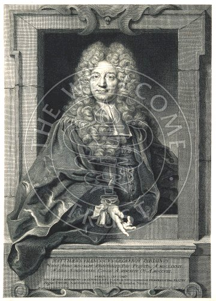
Mathieu François Geoffroy. gravure de F. Chéreau, 1718, d'après N. de Largillière
Geofroy le jeune, quoique bien inférieur en intelligence â son frère, occupe plus de place dans l'histoire du docteur Hoëfer que son aîné. Il fut botaniste avant d'être chimiste ; il fit l'analyse immédiate de plusieurs matières végétales et animales, et particulièrement du pain, de diverses viandes et des bouillons que celles-ci donnent sous la double influence de l'eau et de la chaleur ; mais, après avoir traité les matières qu'il analysait par l'eau et l'alcool, il recourut trop tôt â la distillation séche et suivit de trop prés, sous ce rapport, l'exemple des Académiciens qui croyaient connaître les vertus, comme on disait alors, des matières organiques en les soumettant à la distillation sèche.
De 1677 à 1743.
Fils de Nicolas, après avoir remplacé Berger comme professeur de chimie au Jardin du Roi, il succéda, en 1731, à Geoffroy l'aîné, qui, comme nous l'avons vu, avait été nommé à cette place en 1712. Louis Lemery a publié un traité des aliments qui fut vivement critiqué par Andry. Ses travaux chimiques n'ont rien de distingué, cependant on lui doit une observation intéressante sur le plomb ; elle concerne la grande sonorité de ce métal, lorsqu'il est sous la forme d'un segment sphérique ou d'un champignon, Plus tard, Réaumur reconnut que cette propriété n'existe que dans le plomb qui a reçu cette forme par la fusion et non par le marteau. [comme on le verra note 13, L. Lémery a réalisé des travaux fort estimables et a combattu Geoffroy lorsque celui-ci prétendait avoir fabriqué du fer à partir d'argile et de lin. C'est sans doute de Geoffroy que parle Fulcanelli lorsque dans les Demeures Philosophales, il évoque certains chimistes du XVIIe siècle qui avaient isolé le Soufre des métaux -]
De 1685 à 1761.
Hellot, dont nous avons eu l'occasion de citer le nom en parlant de la découverte du phosphore, a été un savant fort utile par l'exactitude qu'il a mise à décrire des opérations concernant les arts. Ainsi son traité de la teinture des laines, publié en 1750, doit être encore consulté, non seulement parce quil est l'expression la plus fidèle des procédés exécutés de son temps ; mais parce qu'il renferme des vues fort justes sur plusieurs points de la teinture, quoiqu'il se soit trompé lorsqu'il a voulu expliquer la fixation des matières colorées sur les étoffes en ne recourant qu'a des actions purement mécaniques. Hellot a travaillé sur le zinc. Il donna un mémoire général sur les encres sympathiques, et fit connaître celle qu'on prépare en traitant le cobalt ou ses oxydes par l'acide chlorhydrique.
Il fut démonstrateur au Jardin du Roi, il s'occupa de l'analyse des eaux minérales de Passy, prés de Paris, de Bourbon l'Archambaut et de Forges.
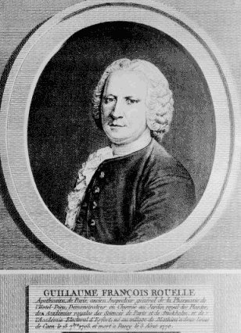
Guillaume François Rouelle : Apothicaire de Paris, ancien Inspecteur générale de la Pharmacie de l'Hotel-Dieu, Demonstrateur en Chymie...
Successeur de Boulduc dans la place de démonstrateur de chimie au Jardin du Roi, il occupa cette place depuis 1744 jusqu'en 1768, époque où il fut remplacé par son frère Hilaire-Marin Rouelle, qui était son cadet. Tout le monde sait avec quel succès Rouelle l'ainé prenait la parole clans l'amphithéâtre du Jardin du Roi, après que le médecin, professeur titulaire, avait terminé sa leçon ; tout le monde a lu dans la correspondance de Grimm les pages si spirituelles où il est question de Rouelle et de ses distractions. Personne n'ignore que le plagiat était le plus grand des crimes à ses yeux, aussi traitait-il de plagiaires les hommes qui excitaient le plus sa colère, tels étaient Damiens, l'assassin de Louis XV, le prince de Soubise, le vaincu de Rosbach, et le médecin Bordeu, dont il disait, chaque année, à un certain endroit de son cours :« c'est un frater, un plagiaire, qui a tué mon frère que voilà. »
Son frère était son préparateur. Guillaume-François Rouelle était un homme de génie ; il exerça la plus grande influence pour répandre le goût de la chimie en France ; il y parvint, non en sacrifiant la science au nombre de ses auditeurs, mais en l'exposant clairement et d'une manière vivement intéressante, aussi bien pour les savants que pour les gens du monde. Son enseignement était subordonné à la théorie du phlogistique, et à lui revient l'honneur d'avoir le premier professé à Paris la chimie en en classant les faits d'après une théorie, et, en outre, d'avoir montré tous les avantages de l'analyse organique immédiate. Il fallait bien que cet enseignement eût un mérite réel, pour que, malgré l'imperfection de cette théorie, des hommes éminents devinssent ses disciples et et que Lavoisier s'honorât de l'avoir été. Si Guillaume-François Rouelle n'a pas composé un grand nombre de mémoires, ceux qui portent son nom sur l'inflammation des huiles par l'acide azotique, sur les embaumements et surtout ses recherches sur les sels, témoignent qu'il avait autant d'originalité dans les vues que de rectitude dans l'esprit. Remarquons que, si Baumé, son contemporain, eut tort de prétendre qu'il s'était trompé en avançant qu'une même base salifiable peut s'unir en deux proportions définies avec un même acide, Baumé eut raison de dire que l'eau bouillante réduit plusieurs sels insolubles de peroxyde de mercure à leur base pure, et, en outre, que le bisulfate de potasse peut être ramené à l'état de sel neutre, mais, dans ce dernier cas, aussi bien que dans le premier, c'est en recourant à l'emploi des forces chimiques et non par des forces absolument mécaniques.
De 1715 à 1768.
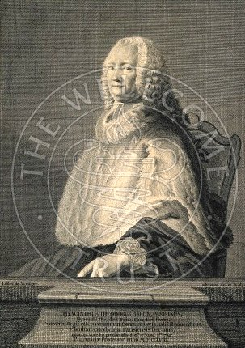
Hyacinthe Théodore Baron. gravure de L. de Montigny
Théodore Baron, élève de Rouelle et de Bourdelin, publia, en 1744, un rnémoire dans lequel il explique bien pourquoi le sous-carbonate de potasse précipite le nitre de sa solution aqueuse. En 1747 et 1748, il en publia deux sur le borax. Il démontra la véritable nature de ce sel, en prouvant que l'acide borique et la soude y sont tout formés, et qu'il n'y existe ni acide sulfurique ni terre vitrifiable, comme Beccher l'avait avancé ; que l'acide borique peut en être séparé au moyen des acides végétaux ; enfin, qu'on reforme le borax en unissant l'acide borique avec la soude. Baron prépara aussi le borate d'ammoniaque. Le mérite de ce travail, au double point de vue de la chimie expérimentale et de l'exposition des idées, fait regretter que l'auteur ne se soit pas occupé davantage de recherches chimiques ; s'il y eût consacré le temps qu'il a mis à commenter le Cours de chimie de Lemery, [voyez la section salpêtre où nous reproduisons des notes intéressantes de Baron -] il aurait plus fait pour sa réputation : La place d'adjoint-chirniste qu'il laissa vacante à l'Académie fut donnée à Jars et à Lavoisier.
De 1718 à 1784
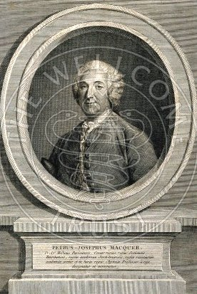
Pierre-Joseph Macquer. gravure de J. Benoist d'après J. B. Garrand
Quoique Macquer ait appartenu à l'Académie des sciences et aux principales académies de l'Europe, qu'il ait professé la chimie au Jardin royal des plantes de 1770 à 1784, qu'il ait été chargé de la partie du Journal des Savants concernant la médecine, la chirurgie, la pharmacie, la chimie, l'anatomie et l'histoire naturelle, enfin que ses Éléments et son Dictionnaire de chimie aient été traduits en plusieurs langues étrangères, sa réputation n'a point été aussi grande que son mérite, ni égale aux services qu'il a rendus aux sciences. Macquer a publié des faits plus ou moins intéressants dans tous ses mémoires ; il a découvert l'arséniate de potasse cristallisable ; il a contribué beaucoup à faire connaître la nature du bleu de Prusse, en montrant que les alcalis caustiques le réduisent à du peroxyde de fer, en dissolvant une matière susceptible de reproduire le bleu de Prusse quand on mêle les alcalis qu'on en a saturés avec une dissolution de fer ; il a donné le moyen de dissoudre le caoutchouc dans l'éther concentré et de tirer parti de cette solution ; enfin, il a exercé une heureuse influence sur l'art de fabriquer la porcelaine et l'art de la teinture ; il a montré la possibilité de teindre les tissus avec le bleu de Prusse, et de teindre la soie en rose de cochenille tirant à l'orangé ; il est, en outre, auteur d'un excellent Traité sur l'art de la teinture en soie ; la préface de cet ouvrage est remarquable par les idées justes qu'il y a émises sur l'analyse immédiate des matières végétales. Au reste, le mérite de la clarté des idées et de la correction du style se retrouve dans tous les écrits de Macquer. Ajoutons que la première édition de son Dictionnaire, publiée en 1766, est extrêmement précieuse au point de vue de l'histoire de la chimie ; elle présente un résumé parfait des conséquences auxquelles étaient arrivés les chimistes de l'école de Stahl ; et, si l'on veut suivre les travaux des chimistes français qui concoururent avec Lavoisier à substituer une nouvelle doctrine à celle du chimiste allemand, il faut partir du Dictionnaire de Macquer pour juger leurs travaux, les obstacles qu'ils eurent à surmonter, et reconnaître les différences des deux doctrines.
De 1700 à 1785.
Le docteur Hoëfer rend pleine justice à Duhamel du Monceau, un des hommes qui honorent le plus la France, et auquel toutes les sciences naturelles sont redevables de faits considérables. Ses travaux réunissent presque tous le mérite de la science abstraite et l'avantage de la science appliquée. Sans aucun doute, les applications qu'il aimait tant à faire, à cause de l'utilité qu'il attachait aux choses, n'ont pas peu contribué à donner à ses travaux le degré d'exactitude et de précision qui les distingue à un si haut degré. Sans aucun doute il a trouvé, dans l'application, le contrôle ou criterium de ses idées scientifiques, qu'il est si désirable d'avoir lorsqu'on recherche la vérité. Sans cela on ne s'expliquerait pas comment ses recherches sur les corps vivants ont encore tant d'exactitude ; car les erreurs qu'on peut y relever aujourd'hui ne pouvaient ne pas être commises à une époque où les moyens de les éviter n'étaient pas connus. Il avait vu avant Black la diminution de poids de la pierre à chaux qu'on calcine, et l'augmentation de poids que la chaux exposée à l'air éprouve en perdant sa causticité. Avant Marggraf il avait aperçu la différence de la base du sel marin d'avec la potasse, et les expériences qu'il fit en cultivant, pendant plusieurs années consécutives, à Denainvilliers, loin des terrains, salés, le salsola soda, démontrèrent que la plante puisait à l'extérieur la matière saline nécessaire à son existence, car la plante récoltée après un an renfermait une quantité notable de soude, mais la proportion de cet alcali, relativement à la potasse, diminua de plus en plus avec le temps, de sorte qu'il arriva une époque où cette proportion était extrêmement faible. Mentionnons les ouvrages de Duhamel sur la physique végétale, les plantations, la culture des céréales, les engrais, la ventilation des vaisseaux et des édifices, n'oublions pas que, quoi qu'on en ait dit, le premier en France, il s'est efforcé de répandre la culture de la pomme de terre dans les campagnes. Noublions pas ses travaux sur la conservation des grains ; rappelons qu'il démontra l'avantage de les passer à l'étuve, afin de faire périr les oeufs d'insectes qui les auraient dévorés sans cette précaution et d'en assurer la conservation par la dessiccation qu'ils subissaient ; rappelons que Duhamel avait considéré avant Franklin la foudre comme identique avec l'électricité.
Duhamel s'est encore livré à d'autres travaux chimiques que nous passons sous silence ; mais il ne faut point omettre de citer la part qu'il eut dans les recherches de Grosse sur l'éther sulfurique en 1734, époque à laquelle cette préparation était encore tenue secrète par ceux qui s'en occupaient pour la vente. Enfin, parmi les savants dont le docteur Hoëfer parle avant Stahl, nous citerons encore
De 1731 à 1799,
Il travailla sur la bile et fit connaître cette liqueur si remarquable qu'on obtient, en distillant parties égales d'acide arsénieux et d'acétate de potasse sec.
Ce naturaliste éminent, plus connu des gens du monde par le thermométre qui porte son nom que par ses travaux variés, doit de figurer dans une histoire de la chimie à des recherches sur la porcelaine, sur la pourpre de certains coquillages, sur la nature des terres, sur le fer et la fonte, etc. [voyez en particulier la section réincrudation, sur la porcelaine de Réaumur.] De 1685 à 1757.
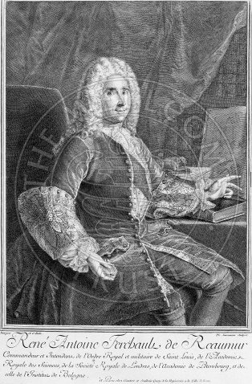
Il fut professeur de chimie au Jardin du Roi jusqu'en 1770, époque où Macquer le suppléa.De 1698 à 1741
Intendant du jardin du Roi, il a été plus physicien que chimiste. Cependant, la manière dont il jugea que devaient être faites les épreuves auxquelles on soumettait les étoffes teintes, pour savoir si elles étaient de grand ou de petit teint, justifient tout à fait le docteur Hoëfer d'avoir cité le nom de Dufay dans son histoire de la chimie.
De 1701 à 1778.
Il a très-peu fait pour la science ; cependant il y a des observations intéressantes dans deux mémoires qu'il a publiés sur l'analogie de l'étain et du zinc.
De 17l7 à 1788,
Il s'est occupé de quelques combinaisons de l'acide borique, des sels de mercure, d'antimoine et de fer, du phosphore, etc.
Bucquet est le dernier chimiste français sur lequel le docteur Hoëfer s'arrête ; cependant il ne lui consacre que quelques lignes, et certes, avec la meilleure volonté, il serait difficile de s'étendre beaucoup sur ses ouvrages. Bucquet a dû sa réputation à un professorat brillant et à un livre élémentaire bien écrit où la chimie est alliée à l'histoire naturelle, autant qu'il est possible de le faire. Il fut le maître de Fourcroy, et eut Berthollet pour successeur à l'Académie des sciences.Dans un dernier article, nous examinerons les travaux chimiques de Stahl et sa théorie du phlogistique.
Eugène CHEVREUL.
Notes suite à la section suivante -
1. Robert Boyle :
sites consultés :
www.multimania.com/histoirechimie/Lien/BOYLE.htm - isimabomba.free.fr/biographies/chimistes/boyle.htm - www.infoscience.fr/histoire/biograph/biograph.php3?Ref=12 - u2.u-strasbg.fr/lexis/html/bios/bioboy.html -Né à Lismore (Irlande) et mort à Londres, le plus jeune des quatorze enfants de Richard Boyle, comte de Cork. Après des études à Eton, Robert Boyle reçoit à Genève une éducation très libérale et y étudie les mathématiques. En 1642, il poursuit ses études à Florence, où il est initié aux travaux de Galilée. Rentré en Angleterre, il rencontre Samuel Hartlib, qui attire son intérêt sur la médecine et l’agriculture, puis sur la chimie. Fortement influencé par le Novum Organum de Francis Bacon et les idées de Descartes, il fait partie, en 1656, du groupe des philosophes de la Nature, connu sous le nom de Invisible College ou Philosophical College, qui se réunit régulièrement pour discuter les résultats des expériences de ses membres (J. Wilkins, J. Wallis, S. Ward...) et qui fonde, en 1660, la Royal Society, dont Pepys est le premier président. Boyle croit en la nécessité d'une observation objective et d'expérimentations vérifiables en laboratoire. Pour cette raison, il est considéré comme l'un des fondateurs de la méthode scientifique moderne. Boyle est le premier chimiste à isoler et à recueillir un gaz. [nous avons vu que c'est à Van Helmont que l'on doit le nom de gaz] La mise en évidence de la mesure de la pression par Torricelli en 1643 l’amène à travailler sur les pressions qui le conduit à construire la première pompe à air avec Robert Hooke. Il travaille alors sur les propriétés élastiques et la nature de l’air et découvre, indépendamment de Mariotte, la loi qui porte leur nom (à une température donnée, le produit P.V est constant : dans des conditions de température constante, la pression et le volume d'un gaz sont inversement proportionnels.) [Boyle parvient ainsi à définir correctement, au plan conceptuel, ce que Van Helmont appelait le « magnale »] Dans le domaine de la chimie, Boyle observe que de l'air est absorbé lors du processus de combustion et que les métaux deviennent plus lourds quand ils s'oxydent. Il découvre la différence entre un composé et un mélange. Sur la base de ses expérimentations en laboratoire, il formule une théorie atomique de la matière. Dans The Skeptical Chymist (1661) (le Chimiste sceptique), il attaque la théorie proposée par Aristote selon laquelle quatre éléments (la terre, l'air, le feu et l'eau) sont les constituants de la matière. Boyle considère en effet que la théorie corpusculaire de Gassendi est une approche originale et utile, mais, moins épicurien que ce dernier, il est l’un des plus fermes opposants aux idées scolastiques des « qualités » aristotéliciennes et de l’inexistence du vide, auxquelles il préfère les explications mécanistes et rationnelles en termes de « matière et de mouvement ».Boyle suggère que des particules minuscules de matière fondamentale se combinent de différentes façons pour former ce qu'il appelle des corpuscules. Il suggère aussi que tous les phénomènes observables résultent du mouvement et de la structure de ces corpuscules. Ainsi, partisan d’une expérimentation rigoureuse au détriment d’une argumentation ésotérique, il réfute toutes les pseudo -théories relatives aux éléments premiers d'Aristote ou des alchimistes (eau-air-terre-feu, sel - soufre-mercure, phlegme-huile-esprit-acide) tout en ne parvenant pas à mettre en évidence de vrais éléments mais en proposant une première approche d'une classification en acides, alcalis et sels, et aussi en corps simples, primitifs et composés. Parmi ses publications, on peut citer Origine des formes et des qualités selon la philosophie corpusculaire (1666) et Dissertation sur les choses dépassant la raison (1681). C’est l’un des traits caractéristiques de Boyle que de préférer la preuve expérimentale et la discussion en termes positivistes aux argumentations logiques tortueuses. Avec lui s’annonce la grande génération des chimistes du XVIIIe siècle, qui aboutira à la réforme de Lavoisier et à la naissance de la chimie moderne ; son influence sur le développement des idées modernes en physique et en chimie a été considérable.
Il lègue une somme d’argent destinée à la fondation des Boyle Lectures, véritables sermons contre l’athéisme. Ses œuvres complètes ont été publiées pour la première fois à Londres (1744) par T. Birch (5 volumes), sous le titre The Works of the Honourable Robert Boyle. Elles sont disponibles sur le serveur Gallica de la bnf.2. Certains pourtant, affirment que R. Boyle fut alchimiste ou, du moins, qu'il s'est intéressé de près aux doctrines de l'Art sacré. Voici ce qu'en dit, à cet égard, L. Gérardin [nous ne partageons pas toutefois les conclusions de Gérardin, puisque le Chymiste Sceptique montre très clairement que Boyle était opposé à la doctrine alchimique] :
Il n'y a rien d'étonnant à ce qu'un personnage officiel comme le gouverneur Winthrop se soit dissimulé derrière un pseudonyme [à propos de Philalèthe] pour exposer ses idées alchimiques. Il ne souhaitait pas qu'on le confondît avec la foule des empiriques chercheurs de secrets ou avec les faux possesseurs de pierre philosophale. L'alchimie gardait pourtant assez de prestige pour que de grands savants ne craignent pas de s'afhrmerses partisans, tels Robert Boyle, fondateur de la chimie moderne, et Isaac Newton, qui découvrit la gravitation universelle et le calcul infinitésimal. Fils du gouverneur de l'Irlande, Robert Boyle (1626-1691) n'avait que dix-huit ans lorsque son père mourut en lui laissant, avec une fortune considérable, la possibilité d'une vie indépendante. Loin d'en jouir avec dissipation, Boyle décida, comme Van Helmont, de parfaire ses connaissances, puis revint ensuite s'installer dans ses terres vers 1654. A cette époque, un groupe de savants se réunissait chaque semaine à Gresham College à Londres ; parmi eux, Samuel Hartlib, dont nous avons vu le rôle dans l'histoire du Philalèthe. Ils s'étaient donné eux-mêmes le nom de « Collège des Invisibles ». En 1650, plusieurs membres se rendirent à Oxford. Boyle les y rejoignit en 1654 : il semble normal qu'il ait alors eu connaissance des écrits du Philalèthe. La guerre civile faisait rage en Angleterre. Le calme revenu, Boyle et ses amis retournèrent à Londres et, le 28 novembre 1660, décidèrent, à douze, de créer un collège où l'on cultiverait l'expérimentation physico-mathématique. En 1662, il donna naissance à la Société Royale, qui demeure aujourd'hui plus florissante que jamais. Boyle avait, grâce à sa fortune, la possibilité de faire construire les appareils nécessaires à ses expériences. Véritable mécène, il accueillit en 1675 le Français Denis Papin et tous deux travaillèrent en commun à des expériences sur les pompes à vide. On ignore souvent que Denis Papin inventa en 1681 un appareil que possèdent aujourd'hui la plupart des ménagères : la cocotte-minute. Le fondateur de la Société Royale subit l'influence de la théorie atomique remise en honneur par le philosophe français Gassendi (1592-1625) et des explications mécaniques « par figures et mouvements » de Descartes. Boyle incorpora ces nouveautés dans le vieux système des Eléments et l'on doit, à son sujet, parler d'évolution plus que de révolution. La théorie des Eléments se trouvait implantée depuis trop longtemps dans les esprits pour que la notion de continuité qu'elle impliquait cédât facilement la place à la nouvelle notion d'élément chimique discontinu. Boyle fut-il alchimiste ? Oui, sans hésitation : la transmutation faisait partie inhérente de son univers scientifique et il avait de ce phénomène une idée très large. Les caractéristiques d'un composé s'expliquent mécaniquement par les positions et les mouvements relatifs des particules élémentaires constituant ce corps : un réarrangement convenable de positions et de mouvements permet donc d'obtenir un autre composé. Nous retrouvons les idées platoniciennes du Timée, sous une forme plus abstraite. La transmutation des métaux vulgaires en or reste un cas particulier du phénomène général, n'importe quoi peut se transmuer en n'importe quoi :La question, soulevée par Girardin, et à laquelle il répond positivement, doit être reposée. Est-ce que la critique historique, de même que pour Newton, admet que Boyle fut alchimiste ?
« Puisque les corps, constitués, au fond, d'une même matière, ne se différencient que par des accidents qui semblent être dus à des mouvements individuels et être la conséquence de ces mouvements, je ne vois pas pourquoi il pourrait être absurde de penser que (au moins pour les corps inanimés) l'on puisse, grâce à d'in additions ou soustractions de matière (et, en fait, ceci ne sera même que rarement) et grâce à un enchaînement bien conçu de modifications, disposer par degrés la matière à transmuer de telle sorte que n'importe quelle chose puisse à la fin être obtenue à partir de n'importe quelle autre chose. » [The Works of the Honorable Robert Boyle, 1744, vol. 2]
Boyle renouait ainsi avec la tradition alchimique véritable des Arabes et des grands scolastiques. Il étudia les oeuvres de ces derniers et se réfère à Lull et Paracelse. Mais, ne se contentant pas de la théorie, il se livra à de nombreuses expériences pour démontrer du fait de la possibilité incessante de transmutation de tout en tout, il n'y avait pas de place pour des éléments permanents dans cette incessante transformation. De l'expérimentateur, on rappelle volontiers ce qu'il fit avec la machine pneumatique et l'on passe pratiquement sous silence ses nombreuses expériences alchimiques. Boyle l'alchimiste prisait fort un dissolvant qu'il appelait menstruum per acutum (à l'imitation de Paracelse). Il s'agissait vraisemblablement d'eau régale enrichie d'acide nitrique fumant qui la rendait plus apte (acutum) à dissoudre l'or. En 1674, il publie des Observations sur la croissance des métaux dans les minerais exposés à l'air [Londres]. En 1675, s'ajoute un mémoire : Sur la croissance du mercure en or. Il utilise à cet effet « une certaine terre rouge » et sera, jusqu'à sa mort, persuadé d'avoir réussi cette expérience de transmutation. A tel point qu'il usa de toute son influence d'illustre savant et de grand seigneur pour faire abolir, en 1689, une très ancienne loi édictée en 1403 par le roi anglais Henry IV pour interdire l'exercice de l'alchimie. Dans une lettre écrite à Locke le 2 août 1692 par Newton, ce dernier déclare à son correspondant que c'est à cause de la transmutation en or à l'aide de sa fameuse recette de terre rouge et de mercure que Boyle avait tant tenu à l'abolition du vieux décret. [l'Alchimie, Art, Culture, Loisir, 1972]
3. Robert Fludd [1574 - 1637]:
R. Fludd fut un des plus grands hommes de la Renaissance. C'était un vrai humaniste: ses connaissances portaient sur l'ensemble des sciences humaines. Ses écrits volumineux furent consacrés à défendre la philosophie des Alchimistes et des Rosicruciens, et à appliquer leurs doctrines à décrire l'homme, la nature et l'univers. Pendant les années qui marquent l'émergence du Rosicrucianisme, Michael Maier et surtout Robert Fludd se font les défenseurs les plus zélés de la Fraternité des Rose-Croix. Pourtant, chacun d'eux affirme ne pas être membre de l'Ordre. Esprit universel, Robert Fludd est très versé dans la connaissance du Corpus Hermeticum, dans les œuvres de Marsile Ficin et celles de kabbalistes chrétiens comme Johannes Reuchlin et François Georges de Venise. En tant que médecin et alchimiste, il s'intéresse aux idées de Paracelse. C'est probablement dès le début de son engagement en faveur du Rosicrucianisme que Robert Fludd entre en relation avec les milieux rosicruciens allemands, à moins que cette rencontre n'ait eu lieu à l'époque du séjour de Michael Maier en Angleterre, entre 1611 et 1613. Quoi qu'il en soit, à partir de 1617, c'est en Allemagne que sont édités les livres du médecin anglais, chez Johann Theodor de Bry, qui finance leur publication. Les ouvrages parus chez cet éditeur du Palatin, installé à Oppenheim, sont réputés pour la qualité de leurs gravures, exécutées par Mattaeus Merian. Sur ce point, les livres de Robert Fludd sont de véritables chefs-d'œuvre ; les pages de titre sont ornées de magnifiques gravures qui en résument les propos. En matière de médecine Fludd est reconnu comme un précurseur pour son époque. Il était avant tout spiritualiste, établissant une distinction entre la partie physique mortelle et la partie animique immortelle de l'homme. Pour lui l'âme est liée à Dieu tandis que le corps physique est une partie de la nature. L'esprit de la vie, la force essentielle de la vie, ou force vitale, éthérée et reliée à l'âme forme à la fois la conscience et l'esprit animal en nous. C'est cette force vitale qui est la cause de toutes les fonctions vitales. Il pratiquait la guérison à distance avec l'aide d'un système décrit auparavant par Paracelse et que Fludd nomme dans ses traités l'onguent de sympathie. Cette méthode était utilisée par divers médecins rosicruciens de cette époque notamment Van Helmont et Digby. Il fût alors attaqué par divers prélats catholiques notamment le père Mersenne qui essaya de convaincre le roi Jacques 1er pour qu'il chassât Fludd d'Angleterre en l'accusant de magie et de sorcellerie. Ce fanatique religieux n'obtint pas satisfaction mais Fludd dut s'expliquer et écrire plusieurs ouvrages pour se défendre d'hérésie. Mersenne obtint alors du philosophe Gassendi une critique des travaux de Fludd ; mais là également ce dernier resta très courtois et alla même jusqu'à reconnaître les mérites de Fludd et la polémique n'alla pas plus loin. Voici en quelques mots quelle est la compréhension de Fludd sur la nature de l'être humain : Pour lui l'être humain est constitué d'une âme, d'un esprit vital et d'un corps. L'âme est un rayon de la Lumière incréée et elle s'unit au corps grâce à l'esprit vital. Cette triple nature de l'être correspond à ce que les Rose Croix nomment aussi corps physique, corps psychique et Ame et que Paracelse et les anciens Rose Croix nommaient aussi symboliquement par les terme respectifs de Sel, Mercure et Soufre. Toujours selon Fludd, le corps est composé de Terre, d'eau et de feu . Quant à l'âme elle apporte la vie et se scinde en trois qualités: à la tête correspond l'âme intellectuelle , à la poitrine et au cœur l'âme vitale et à l'abdomen l'âme sensitive. L'âme vitale, selon Fludd, est constituée de l'éther le plus pur. Elle se concentre principalement dans le cœur et de là, la vie est insufflée dans tout le corps grâce au sang qui porte l'air dans tout le corps. Cette âme vitale est la source de la vie morale car elle choisit entre l'âme sensitive et l'âme intellectuelle qui lui sont subordonnées. Il considérait par là que la force vitale émanée de l'âme peut être concentrée dans le cœur et peut fournir d'énergie à la vie et aux vertus de l'âme tout en servant d'intermédiaire entre intellect et passions. Dans ses livres, Robert Fludd s'attache à présenter l'harmonie entre le macrocosme (le monde) et le microcosme (l'homme). Doué d'une connaissance universelle, il s'intéresse aux correspondances harmoniques qui existent entre les planètes, les anges, les parties du corps humain, la musique… Il tente d'établir une synthèse de tous les savoirs, et son Traité théologico-philosophique indique qu'il présente aussi des fragments de l'ancienne Sagesse ayant survécu à la Chute d'Adam. Ce livre est d'ailleurs dédié aux Frères de la Rose-Croix (1617). En 1617, Robert Fludd commence à publier son Histoire métaphysique, physique et technique de l'un et l'autre monde, à savoir du grand et du petit. Avec cette véritable encyclopédie qui couvre tous les domaines du savoir, il souhaite révéler la Sagesse universelle qui présidera à la rénovation universelle annoncée par les Manifestes rosicruciens. Il s'attache à montrer comment la Création a été engendrée par l'âme du Monde dont procèdent les modèles mathématiques présidant à l'harmonie de la Création. Sa démonstration s'appuie sur le De Harmonia Mundi de François Georges de Venise, et sur la traduction et les commentaires du Timée de Platon, publiés par M. Ficin. Il reprend aussi les éléments que ce dernier emprunte au Commentaire du Songe de Scipion de Macrobe sur les nombres et l'me du Monde. Ses positions sur l'âme du monde l'entraînent dans une polémique avec l'astronome Johannes Kepler et le philosophe, mathématicien et physicien français Pierre Gassendi (1592-1655). L'abbé Marin Mersenne (1588-1648), philosophe et savant français, pourfendeur de la philosophie hermétique de la Renaissance, ne sera pas en reste. Cet ami de René Descartes reproche à Robert Fludd de mettre Jésus-Christ, les anges et l'âme du monde sur le même plan. L'importance des réactions suscitées par les œuvres du médecin anglais montre que son œuvre connut un grand rayonnement en Europe et qu'elle était au cœur des grands débats de l'époque.
Sites consultés :
www.rose-croix.org/histoire/histoire8.html -
www.ifrance.com/aaarc/fludd.htm -
www.rose-croix.org/maitrise2/3-enseig.html -
www.livres-mystiques.con -
4. Jean-Rodolphe Glauber [1604 - 1670] : chimiste allemand, né à Karlstadt, en Bavière, et mort à Amsterdam. Il gagna sa vie principalement en vendant des préparations médicinales secrètes. Il publia près de 40 livres où les préoccupations alchimiques foisonnent, mais dont l’apport, grâce au sens de l’observation et à l’originalité de l'auteur, a contribué au progrès de la chimie. Il a notamment décrit la préparation de nombreux corps et exposé en particulier les vertus du sulfate de sodium cristallin connu encore aujourd’hui comme « sel de Glauber », utilisé comme fondant en métallurgie. Il est considéré, en raison de ses vastes connaissances, comme un des "pères de la chimie". il a prévu, notamment, l'importance de la chimie dans l'industrie. Il développa plusieurs techniques, dont des tests à la flamme et à la perle, encore utilisés de nos jours dans le domaine de la chimie inorganique, appelée analyse qualitative. Il développa également un four de distillation.
5. Eloge de Homberg dans l'Académie Royale des sciences de 1715 - [nous avons conservé l'orthographe originale]
Guillaume Homberg naquit le 8 janvier 1652 à Batavia, dans l'Ile de Java. Jean Homberg son Père étoit un Gentilhomme Saxon, originaire de Quedlimbourg, qui dès sa jeunesse avoit été dépouillé de tout son bien par la guerre des Suédois en Allemagne. Quelques-uns de ses Parens avoient eu soin de son éducation ; ce qu'il apprit des Mathématiques le mit en état d'aller chercher fortune au service de la Compagnie Hollandoise des Indes Orientales, qui par un commerce guerrier, s'est fait un Empire à l'extrémité de l'Orient. Il eut le commandement de l'Arsenal de Batavia, et se maria avec la Veuve d'un Ofîcier, nommée Barbe Van-Hedemar. De quatre enfans qui vinrent de ce Mariage, M. Homberg fut le second. Son Pere pour l'avancer dans le service, le fit Caporal d'une Compagnie dès l'âge de 4 ans. Il eût bien voulu aussi le mettre aux études , mais les chaleurs excessives & perpétuelles du Climat ne permettent beaucoup d'application, ni aux Enfans, ni même aux Hommes faits, ce qui ne s'accorde guere avec le profond sçavoir qu'on donne aux anciens Brachmanes, ou Gimnosophistes. Le corps profite à son ordinaire de ce que perd l'esprit. M. Homberg avoit une soeur qui fut mariée à 8 ans, et mere à 9. Son Pere quitta les Indes, & le service de la Compagnie Hollandoise, & vint à Amsterdam où il séjourna plufieurs années avec toute sa famille. M. Homberg parut être dans son véritable air natal, dès qu'il fut dans un Pays où l'on pouvoit étudier. Sa vivacité naturelle d'esprit , aidée peut-être par celle qu'il tenoit de sa premiere patrie, lui fit regagner bien vîte le, tems perdu. Il étudia en Droit à Yene et â Leipsic, et en 1674 il fut reçû Avocat à Magdebourg. Quoiqu'il se donnât sincerement à sa profession, il sentoit qu'il y avoit quelqu'autre chose à connoitre dans le Monde que des Loix arbitraires des Hommes; et le spectacle de la Nature, toujours présent à tous les yeux, et presque jamais apperçû, commençoit à attirer ses regards, et à interesser sa curiosité. Il alloit chercher des Plantes sur les Montagnes, s'instruifoit de leurs noms & de leurs propriétés, & la nuit il obfervoit le cours des Astres, & apprenoit les noms & la disposition des differentes Constellations. Il devenoit ainsi Botaniste & Astronome par lui-même, & en quelque sorte malgré lui, car il s'engageoit toujours plus qu'il ne vouloit. Il poussa assez loin son étude des Plantes, & dans le même tems il fe fit un Globe céleste creux en façon de grande Lanterne, où à la faveur d'une petite lumiere placée au dedans on voyoit les principales Etoiles fixes emportées du même mouvement dont elles paroissent l'être dans le Ciel. Déja se déclaroit en lui l'esprit de Méchanique , si utile à un Phisicien, qui, pour examiner la Nature ,a souvent besoin de l'imiter & de la contrefaire. Malheureusement pour sa profession d'Avocat, étoit alors à Magdebourg Otto Guericke Bourgemestre de la Ville, fameux par les Expériences du Vuide, & par l'invention de la Machine Pneumatique. Il étoit sorti de ses mains des merveilles, qui l'étoient autant pour les Philosophes que pour le Peuple. Avec quel étonnement, par exemple, ne voyoit-on pas deux Bassins de Cuivre exactement taillés en demi-Spheres, appliqués simplement l'un contre l'autre, par leurs bords ou circonférences , et tirés l'un d'un côté par 8 Chevaux, & l'autre du côté opposé par 8 autres Chevaux, sans pouvoir être séparés ? Ces sortes d'expériences étoient appellées par quelques Sçavans les Miracles de Magdbourg. C'en étoit encore un en ce tems-là qu'un petit Homme qui se cachoit dans un tuyau quand le temps devoit être pluvieux, & en sortoit quand il devoit faire beau. On a depuis négligé cette puérilité Philosophique, & l'on s'en tient au Barometre, dont personne ne daigne plus s'étonner. M. Homberg s'attacha à M. Guericke pour s'instruire dans sa Phisique experimentale, & cet habile homme, quoi-que fort mistérieux, ou lui révéla ses secrets en faveur de son génie , ou ne les pût dérober à sa pénétration. Les amis de M. Homberg qui le voyoient s'éloigner toujours du Barreau de plus en plus , songerent à le marier pour le rendre Avocat par la nécessité de ses affaires ,mais il ne donna pa dans ce piége, et afin de l'éviter plus sûrement, & d'être plus maître de lui-même, il se mit à voyager, & alla d'abord en Italie. Il s'arréta un an à Padouë, où il s'appliqua uniquement à la Médecine, & particulierement à l'Anatomie & aux Plantes. A Boulogne il travailla sur la Pierre qui porte le nom de cette Ville, & lui rendit toute sa lumiere, car le secret en avoit été presque perdu. A Rome il se lia particulierement avec Marc-Antoine Celio, Gentilhomme Romain, Mathématicien, Astronom & Machiniste, qui reüssisait fort bien â faire de grands Verres de Lunettes. M. Homberg s'y appliqua avec lui, & y trouva à souhait de quoi exercer les lumieres de son esprit, & son adresse à operer. Il ne négligea pas même ces Arts dont l'Italie s'est conservé jusqu'ici une espece de souveraineté, la Peinture, la Sculpture, la Musique ; il devint assez connaisseur pour s'en pouvoir faire un mérite s'il n'en avait pas eu d'autres. Ce n'est pas la Philosophie qui exclut les choses de goût & d'agrément , c'et l'injustice des Philosophes, qui comme le reste des hornmes, n'estiment que ce qui les distingue. D'Italie il vint en France pour la premiere fois, & il ne manqua pas d'y rechercher la connoissance & de s'attirer l'estime des Sçavans. Ensuite il passa en Angleterre, où il travailla quelque tems avec le fameux M. Boyle, dont le Laboratoire était une des plus sçavantes Ecoles de Physique. De-là M. Homberg passa en Hollande , ou il se per fectionna encore en Anatomie sous l'illustre Graff, & enfin il revint à Quedlimbourg retrouver sa famille. Quelque tems après , riche d'une infinité de connoissances, il alla prendre à Vittetemberg le degré de Docteur en Médecine, que l'on a d'ordinaire à moins de frais. Ses parens, selon la coutume des parens, voulaient qu'il songeât à l'utile, & que puisqu'il était Médecin, il en tirât du profit, mais son goût le portait davantage à sçavoir. Il voulut voir encore les SÇavans de l'Allemagne & du Nord, & comme il avait un fonds confidérable de curiosités phisiques, il songea à en faire commerce, & à en acquérir de nouvelles par des échanges. Les Phosphores faisoient alors du bruit. Christian Adolphe Balduinus, & Kunkel, Chimiste de l'Electeur de Saxe , en avaient trouvé un différent & nouveau chacun de leur côté ; & M. Homberg les alla chercher. Il vit Balduinus le premier, il trouva son Phosphore fort beau, & de la nature de la pierre de Boulogne, quoi-qu'un peu plus foible en lumiere. Il l'acheta, par quelqu'autre expérience , mais il falloit avoir celui de Kunkel, qui avoit beaucoup de réputation. Il trouva Kunkel à Berlin, & par bonheur, celui-ci était fort touché de l'envie d'avoir le petit Homme Prophete de Guericke. Le marché fut bientôt conclu entre les deux Curieux, le petit Homme fut donné pour le Phofphore. C'étoit le Phofphore d'urine présentement assez connu. Les Métaux avaient touché particulierement la curiosité de M. Homberg ,il alla voir les Mines de Saxe, de Boheme & de Hongrie, plus instructives sans comparaison que les meilleurs Livres, & il y apprit combien il est important d'étudier la Nature chez elle-même, Il passa même jusqu'en Suede, attiré par les Mines de Cuivre. Le Roi de Suede alors regnant venait d'établir à Stokolm un Laboratoire de Chimie , M. Homberg y travailla avec M. Hierna, premier Médecin du Roi d'aujourd'hui, & il eut le plaisir de contribuer beaucoup aux premiers fuccés de ce nouvel établissement. On s'adressoit souvent à lui ou pour lui demander des décisions sur des difficultés qui partageoient les plus habiles, ou pour l'engager à des recherches qu'ils n'osoient entreprendre, & les Journaux de Hambourg de ces tems-là imprimés en Allemand, sont pleins de Mémoires qui venaient de lui. Dans tous ses voyages, il s'instruisoit des singularités de l'Histoire naturelle des Pays, & observoit les industries particulieres des Arts qui s'y pratiquent ; car les Arts fournissent une infinité d'expériences très dignes d'attention, inventées quelquefois par d'habiles gens inconnus, & assez souvent par des Artisans grossiers, qui ne songeanr qu'à leur utilité ou à leur commodité, & non à découvrir des Phénomenes de Phisique, en ont découvert de rares, de merveilleux, dont ils ne s'appercevoient pas. Ainsi il se composoit une Phisique, toute de faits singuliers & peu connus, à peu-près comme ceux qui pour apprendre l'Histoire au vrai iroient chercher les pièces originales cachées dans des Archives. Il y a de même les Anecdotes de la Nature. Quand on en a acquis une grande connoissance, on ne fait pas tant de cas des Sistèmes, peut-être parce qu'ils deviennent d'autant plus difficiles & plus incertains qu'il les faut ajuster à un plus grand nombre de faits, & pareillement ceux qui sçavent beaucoup d'anecdotes historiques estiment peu les grands Corps d'Histoire, qui sont des systêmes à leur manière. Le Pere de M. Homberg souhaitoit avec passion qu'il terminât enfin ses courses sçavantes, & revînt se fixer dans son pays, où pour s'assûrer de lui il l'aurois marié. Mais l'amour des Sciences & de la liberté l'emporta encore du fond du Nord en Hollande pour la trofieme fois, & de Hollande il repassa en France pour la feconde, & il y vit, selon sa maniere ordinaire de voir, les Provinces qu'il n'avoit pas veuës dans son premier voyage. A la fin le Pere s'impatientoit, & faisoit des instances plus sérieuses & plus pressantes que jamais pour le retour. M. Homberg obéïssoit, & le jour de son départ étoit arrivé ; il étoit prêt à monter en carosse, lorsque M. Colbert l'envoya chercher de la part du Roi. Ce Ministre persuadé que les gens d'un mérite singulier étoient bons à un Etat, lui fit pour l'arrêter des offres si avantageuses, que M. Homberg demanda un peu de tems pour prendre son parti, & prit enfin celui de demeurer. Sa plus puissante raison étoit que la pratique familiere aux Protestans de lire tous les jours un Chapitre de l'Etriture Sainte, lui avoit rendu fort suspecte l'Eglise Protestante dans laqueIle il étoit né, & qu'il se sentoit fort ébranlé pour rentrer dans l'Eglise Catholique, ce qu'il fit en 1682. L'année suivante les Lettres & lui perdirent M. Colbert, & de plus il fut deshérité par son Pere, pour avoir changé de Religion. Il entra en grande liaifon avec M. l'Abbé de Chalucet, depuis Evêque de Toulon, fort curieux de Chimie. M. Homberg y étoit trop habile pour aspirer à la Pierre Philosophale, & trop sincere pour entêter personne de cette vaine idée ; mais un autre chimiste, avec qui il travailloit chez le Prélat, voulant convaincre l'incrédulité de son Associé, lu donna en pur don un lingot d'or prétendu Philosophique, mais toujours de bon or, qui valoir bien 400 francs, tromperie qui , comme il l'avoüat, lui vint alors assez à propos. En observant de près la conduite d'un homme qui en sçavoit tant, il craignait, peut-être par un excès de prudence, qu'il n'en sçût trop, & pour mieux rompre tout comrnerce, aussi-bien que par quelques autres raisons, il retourna à Rome en 85. Il y portoit toute sa recolte du Nord, & il en profita par une pratique de Medecine peu connue en ce Païs là, & heureuse. Il négligeoit sa qualité de Docteur à Vittemberg, & on le prenoit pour un Médecin qui ne l'étoit que de génie, & non par des degrés, cependant assez de gens avoient la hardiesse de se confier à lui, & s'en trouvoient bien. Il lui manquoit une qualité dont le défaut rendoit la confiance qu'on avoit en lui encore plus hardie ; il ne vantoit ni ses remedes, ni fa capacité ; il n'osoit dire plus qu'il ne sçavoit ni donner le vrai-semblable pour assuré, & par-là il ne pouvoit guère être le Médecin que de Malades assez raisonnables. Il se faisoit même peu d'honneur des succés, & renvoyoit à la Nature la plus grande partie de la gloire. Mais au lieu de l'art de se faire valoir, il avoit celui de découvrir assez juste par des raisonnemens fins la cause d'une maladie, & le remède qui convenoit. Cette sagacité d'esprit particulière valoit la grande expérience d'un Médecin qui n'eût été toute sa vie que Médecin. Il revint à Paris au bout de quelques années, & tant de connoissances singulieres qu'il avoit acquises, ses Phosphores, une Machine Pneumatique de son invention, plus parfaite que celle de Guericke , & que celle de Boyle qu'il avoit vuë à Londres, les nouveaux Phénoménes qu'elle lui produisoit tous les jours, des Microscopes de sa façon, très simples, très commodes & très exacts, autre source inépuisable de Phénomenes, une infinité d'opérations rares ou de découvertes de Chimie, lui donnerent ici une des premieres places entre les premiers Sçavans. M. Regis. dans son Sistême de Philosophie imprimé en 1690 finit le Traité d'Optique par dire que tout ce qu'il en a écrît est confirmé par des expériences , qui ont été faites par M. Homberg, Gentilhomme Allemand, si fameux par les grandes connoissances qu'il a de la Phisique , mais sur-tout par l'adresse & l'exactitude extrême, avec laquelle il fait toutes sortes d'expériences. Nous avons déja dit dans l'Eloge de M. Tournefort que dés que M. l'Abbé Bignon eut en 1691. la direction de l'Académie des Sciences, il y fit entrer MM. Homberg & Tournefort, qui furent ses premiers nés. Il donna aussi à M. Homberg le Laboratoire de l'Académie, & par-là une entiere liberté de travailler en Chimie sans inquiétude. L'Académie, par le concours de quelques circonftances malheureuses, étoit tombée alors dans une assez grande langueur. Souvent ,on ne trouvoit pas de quoi occuper les deux heures de séance ; mais dès que M. Homberg eut été reçû, on vit que l'on avoit une ressource assurée. Il étoit toujours prêt à fournir du sien, & l'on s'étoit fait sur sa bonne volonté une espéce de droit qui l'assujettissoit. Il n'eût presque osé paroître les mains vuides. Sa grande abondance contribua à soûtenir la Compagnie jufqu'au renouvellement de 1699. Monfeigneur le Duc d'Orléans, qui n'avait point alors des fonctions à remplir dignes dé sa naissance, se livroit au goût & au talent naturel qu'il a pour les Sciences les plus élevées, & faisoit à la Philosophie l'honneur de la croire digne de l'occuper au défaut du conimandement des armées ou du gouvernement des Etats. Il voulut entrer dans les misteres de la Chimie & dans la Phisique Expérimentale. M. l'Abbé du Bois, qui avoit eu l'honneur d'être Précepteur de S.A.R. & qui étoit ravi de seconder des inclinations qu'il n'avoit pas eu besoin de lui inspirer , lui indiqua M. Homberg, comme le plus propre à satisfaire sa curiosité. Il le présenta au Prince, qui vit bientôt qu'il avoit trouvé le Phisicien qu'il lui falloit. Il le prit auprès de lui en cette qualité en 1702 ,lui donna une pension, & un Laboratoire le mieux fourni & le plus superbe que la Chimie eût jamais eu. Là se rendoit presque tous les jours le Prince Philosophe ; il recevoit avidement les instructions de son Chimiste, souvent même les prévenoit avec rapidité, il entroit dans tout le détail des opérations, les exécutoit lui même, en imaginoit de nouvelles, & j'ai vû plusieurs fois le Maître effrayé de son Disciple. On ne le connoit pas, me disoit-il en propres termes , lui qui étoit presque le seul Confident de ses talens, C'est un rude travailleur. Il m'a repété ce discours depuis peu, en concluant de la Phisique à la Régence, dont il a vû les premiers momens, & cette conclusion se juslifie de jour en jour. Ce fut aussi en 1702 que Monseigneur le Duc d'Orléans fit venir d'Allemagne le grand Miroir ardent convexe, dont nous avons tant parlé dans nos Histoires. M Homberg eut le plaisir de voir que quelques sistêmes qu'il avoit imaginés devenoient des faits, & ce qui lui fut encore plus sensible, il apprit quantité de faits qu'il n'eût pas devinés. Cette nouvelle espéce de fourneau donna une Chimie nouvelle ; il étoit juste que l'application de S.A.R. à cette Science fût marquée d'une Epoque singuliere & mémorable parmi tous les Phisiciens. En 1704. le Prince voulut honorer M.Homberg d'une faveur encore plus particuliere, & le faire son premier Médecin. Lorsque ce choix étoit sur le point d'être déclaré, on lui vint offrir de la part de l'Electeur Palatin, & d'une maniere trés-pressante, des avantages plus considérables que ceux même qui l'attendoient. L'attachement qu'il avoit pour S.A.R. ne lui permit pas de délibérer. Il faut avouer qu'il s'y joignit aussi un autre attachement. Il songeoit à un mariage, & y songeoit depuis si long-temps, que l'amour seul sans une forte estime n'eût pas produit tant de constance. Il fut donc premier Médecin de Monseigneur le Duc d'Orléans à la fin de 1704. Par-là il tomboit dans le cas d'une de nos Loix, qui porte que toute Charge demandant résidence hors de Paris est incompatible avec une place d'Académicien Pensionnaire. Il déclara nettement que s'il étoit réduit à opter, il se déterminoit pour l'Académie sans comparaison moins utile, mais le Roi le jugea digne d'une exception. Ce trait héroïque de son amour pour l'Académie fut suivi de la part de son prince d'un autre trait encore plus héroïque, il ne fut pas offensé. En 1708. M. Homberg se maria, & ce fut en quelque sorte dans l'Académie. Il épousa Marguerite-Angelique Dodart, fille du fameux M. Dodart, celle pour qui il avoit été si constant, & dont il avoit tant éprouvé le caractere. Quelques années après, il devint sujet à une petite Dissenterie, qu'il se guérissoit, & qui revenoit de temps en temps. Le mal se fortifia toujours, & fut enfin en 1715 cruel & dangereux. La patience du Malade a toûjours été celle d'un Héros ou d'un Saint. Peu de jours avant sa mort il prit la liberté d'écrire à Monseigneur le Duc d'Orléans sur sa Régence, & à la fin de la lettre il employa ces expressions touchantes que son état fournissoit, pour lui recommander tout ce qu'il avoit le plus aimé, la Veuve qu'il alloit laisser, & l'Académie des Sciences. Sa priere pour l'Académie a eu plus de succès qu'il n'eût osé l'espérer, le prince s'est réservé à lui seul le gouvernement immédiat de cette Compagnie. Il traite nos Sciences comme son Domaine particulier, dont il est jaloux. M. Homberg mourut le 24 Septembre 1715, après avoir reçû plufieurs fois les Sacremens dans le cours de sa maladie. Quoiqu'il fût d'une complexion foible, il étoit fort laborieux, & d'un courage qui lui tenoit lieu de force. Outre une quantité prodigieuse de faits curieux de Physique rassemblés dans sa tête , & présens à sa mémoire, il avoit de quoi faire un Sçavant ordinaire en Histoire & en Langues. Il sçavoit même de l'Hébreu. Son caractere d'esprit est marqué dans tout ce qu'on a de lui, une attention ingénieuse sur tout, qui lui faisoit naître des observations où les autres ne voyent rien,une adresse extrême pour démêler les routes qui menent aux découvertes, des tours d'expérience singuliers, & qui seroient trop artificieux, si on avoit tort de s'Obstiner à connoitre, une finesse sensée & une solidité délicate, une exactitude, qui, quoi que scrupuleuse, sçavoit écarter tout l'inutile, toujours un génie de nouveauté pour qui les sujets les plus usés ne l'étoient point. Il n'a point publié de Corps d'Ouvrage il avoit commencé à donner par morceaux dans nos Histoires des Essais ou Elemens de Chimie ; car de la maniere dont il prenoit la Chimie, il avoit lieu de ne pas croire que ce fût encore une Science faite. On a trouvé dans ses papiers le reste de ces Elémens en bon ordre, & prêt pour l'impression. D'ailleurs, nous n'avons de lui qu'un grand nombre de petits Mémoires sur différens sujets particuliers, mais de ces petits Mémoires il n'y en a aucun qui ne donne des vûes, & qui ne brille d'une certaine lumiere, & il y en a plusieurs dont d'autres auroient fait des Livres avec le secours de quantité de choses communes qu'ils y auroient jointes. Nous avons déja dit combien il étoit éloigné de l'ostentation , il l'étoit autant du mistère, si ordinaire aux Chimistes, & qui n'est qu'une autre espéce d'ostentation, ou l'on cache au lieu d'étaler. Il donnoit de bonne. grace ce qu'il sçavoit, & laissoit aux gens à sentir le prix de ce qu'il leur avoit donné. Sa maniere de s'expliquer étoit tout-à-fait simple, mais méthodique , précise, & fans superfluité. Soit que le François fût toûjours pour lui une langue étrangere, soit que naturellement il ne fût pas abondant en paroles, il cherchoit son mot presque à chaque moment, mais il le trouvoit. Jamais on n'a eu des moeurs plus douces, ni plus sociables ; il étoit même homme de plaisir, car c'est un mérite de l'être, pourvû qu'on soit en même temps quelque chose d'opposé. Une Philosophie saine & paisible le disposoit à recevoir sans trouble les différens événemens de la vie, & le rendoit incapable de ces agitations, dont on a, quand on veut, tant de sujets. A cette tranquillité d'ame tiennent nécessairement la probité & la droiture ; on est hors du tumulte des passions, & quiconque a le loisir de penser ne voit rien de mieux à faire que d'être vertueux.6. c'est le lieu d'évoquer une empoisonneuse célèbre, la marquise de Brinvilliers. Elle avait appris cet art de Sainte-Croix, son amant, qui l'avait appris lui-même de l'Italien Exili, alors qu'ils étaient enfermés ensemble à la Bastille. Elle empoisonna, par vengeance et par cupidité, son père et toute sa famille. Elle faisait des essais des poisons que composait Sainte-Croix, en empoisonnant des biscuits qu'elle donnait aux pauvres ; elle allait mêne distribuer de ces biscuits à l'hôtel-Dieu, et s'informait de l'effet qu'ils avaient produit. La vie de son mari ne fut pas respectée; mais comme elle ne voulait s'en défaire que pour épouser son amant, et que celui-ci ne voulait pas d'une femme aussi méchante que lui-méme, il donnait du contrepoison au marquis de Brinvilliers.
« De sorte qu'ainsi balloté, dit madame de Sévigné, tantôt empoisonné, tantôt désempoisonné, il est demeuré en vie. »
Par une singularité qui tient à l'histoire du coeur humain, la marquise en vint jusqu'à commettre des crimes qui n'avaient pas même pour principe l'intérêt personnel. Si l'on osait écrire le mot de bienveillance lorsqu'il s'agit d'une telle femme et de ses atrocités, on pourrait trouver quelques traces de ce sentiment dans le fait suivant. Elle aperçut un jour, dans un couvent, une jeune novice qui lui parut plongée dans une affliction profonde, et elle apprit que ses parents exigeaient qu'elle se liât aux autels par des voeux irrévocables, pour que toute leur fortune fût assurée a son frère ainé. La marquise la consola et lui promit de faire des démarches en sa faveur auprès de sa famille, ayant pour réussir, disait-elle, des moyens infaillibles. Quelque temps après la novice apprit que son père, sa mère et son frère venaient de mourir subitement, et elle rentra dans le monde sans avoir eu le moindre souppon sur la cause des événements qui lui rendaient la liberté. Une dévotion apparente couvrait les crimes de Brinvilliers; et, ce qui est presque inexplicable, c'est que cette piété extérieure n'était pas de l'hypocrisie : elle se confessait, et c'est même une confession générale, écrite de sa main, qui fut une des principales pièces de conviction contre elle; car tous ses forfaits furent découverts et elle fut décapitée et brûlée. On montre son crâne au Muséum de Versailles. Le coeur de cette fameuse empoisonneuse avait été de bonne heure accoutumé à la dépravation; elle déclara qu'elle avait perdu son innocence à sept ans, et brûlé une maison. [adapté de Cuvier, Histoire naturelle]7. Christophe Glaser [1615 - 1672 ou 1678] : né à Basel, mort sans doute à Paris. Glaser a écrit un traité sur la chimie qui s'avère être l'un des plus clairs de l'époque. Il décrit purement et simplement les diverses préparations chimiques ; ce qui prouve que la chimie n'était considérée que comme une branche de la médecine, et non point comme une science universelle qui domine toute la nature sublunaire, ainsi que nous la concevons aujourd'hui. Il reprend donc successivement les préparations de l'or et des autres métaux, puis les sels, les soufres, les végétaux et les substances animales. Il fait remarquer les différentes manières dont il faut s'y prendre pour en obtenir les combinaisons qui étaient usitées alors en médecine ou dans les arts. Les idées de combinaisons d'éléments au moyen de la force d'affinité n'existaient pas encore. L'idée de l'affinité chimique comme dérivant de la gravitation universelle, comme étant une espêce d'attraction, ne devint générale qu'après Newton. C'est lui qui, le premier, l'introduisit en chimie; mais elle eut beaucoup de peine à pénétrer dans les esprits; et c'est une anecdote très remarquable, que ce fait rapporté par Fontenelle en faisant l'éloge de Geoffroi, qui avait le premier donné des tables des affinités, que ces tables firent beaucoup de peine aux savans du temps, parce qu'ils croyaient y voir des attractions cachées, des attractions masquées. Ceci se passait en 1730, c'est-à-dire vers le tiers du dix-huitième siècle : alors on répugnait encore à l'idée de l'affinité chimique. [adapté de Cuvier, Histoire des Sciences naturelles]
8. Nicolas Lemery naquit à Rouen le 17 novembre 1645, de Julien Lémery, Procureur au Parlement de Normandie, qui était de la Religion Prétendue Réformée. Il fit ses études dans le lieu de sa naissance, après quoi son inclination naturelle le détermina à aller apprendre la Pharmacie chez un apothicaire de Rouen, qui était de ses parents. Il s'aperçut bientôt que ce qu'on appelait la Chimie, qu'il ne connaissait guère que de nom, devait être une Science plus étendue que ce que savait son Maître, et ses pareils, et en 1666, il vint chercher cette Chimie à Paris. Il s'adressa à M. Glazer, alors Démonstrateur de la Chimie au Jardin du Roi, et se mit en pension chez lui, pour être à une bonne source d'expériences et d'analyses. Mais il se trouva malheureusement que M. Glazer était un vrai Chimiste plein d'idées obscures, avare de ces idées-là mêmes, et très peu sociable. M. Lémery le quitta donc au bout de deux mois, et se résolut à voyager par la France pour voir les habiles gens les uns après les autres, et se composer une Science des différentes lumières qu'il en tirerait. C'est ainsi qu'avant que les Nations savantes communiquassent ensemble par les Livres, on n'étudiait guère que par les voyages. La Chimie était encore si imparfaite, et si peu cultivée, que pour y faire quelque progrès, il falalit reprendre cette ancienne façon de s'instruire. Il séjourna trois ans à Montpellier, chez qui il eut la commodité de travailler, et ce qui est plus considérable, l'avantage de donner des leçons à quantité de jeunes Etudiants qu'avait son Hôte. Il ne manqua pas de profiter beaucoup de ses propres leçons, et en peu de temps elles attirèrent tous les professeurs de la Faculté de Médecine, et les Curieux de Montpellier, car il avait déjà des nouveautés pour les plus habiles. Quoi qu'il ne fût point Docteur, il pratiqua la Médecine dans cette Ville où de tout temps elle a été si bien pratiquée, sa réputation fut son titre. Après avoir fait le tour entier de la France, il revint à Paris en 1672. il y avait encore alors des Conférences chez divers particuliers, ceux qui avaient le goût des véritables sciences s'assemblaient par petites troupes comme des espèces de Rebelles qui conspiraient contre l'ignorance, et les préjugés dominants. Telles étaient les Assemblées de M. l'Abbé Bourdelot Médecin de M. le Prince, le Grand Condé, et celles de M. Justel, M. Lémery parut à toutes, et y brilla. il se lia avec M. Martin Apothicaire de M. le Prince, et profitant du laboratoire qu'avait son ami à l'Hôtel de Condé, il y fit un Cours de Chimie, qui lui valut bientôt l'honneur d'être connu et fort estimé du Prince, chez qui il travaillait. Il fut souvent mandé à Chantilli, où le Héros entouré de gens d'esprit et de savants vivait comme aurait fait César oisif. M. Lémery voulut enfin avaoir un laboratoire à lui, et indépendant. Il pouvait également se faire recevoir Docteur en Médecine, ou Maître apothicaire, le Chimie le détermina au dernier parti, et aussitôt il en ouvrit des Cours publics dans la rue Galande, où il se logea. Son laboratoire était moins une chambre qu'une cave, et presque un antre magique, éclairé de la seule lueur des fourneaux ; cependant l'affluence du monde y était si grande, qu'à peine avait-il de la palce pour ses opérations. Les noms les plus fameux entrent dans la lsite de ses auditeurs, les rohaut, les Bernier, les Auzout, les Regis, les Tournefort. les Dames mêmes entraînées par la mode, avaient l'audace de venir se montrer à des assemblées si savantes. En même temps M. du Verney faisait des cours d'Anatomie avec le même éclat, et toutes les Nations de l'Europe leur fournissaient des écoliers. En une année entre autres on compta jusqu'à 40 Ecossais, qui n'étaient venus à Paris que pour entendre ces deux Maîtres, et qui s'en retournèrent dès que leur Cours furent finis. Comme M. Lémery prenait des pensionnaires, il s'en fallait beaucoup que sa maison fût assez grande pour loger tous ceux qui le voulaient être, et les chambres du quartier se remplissaient de demi-pensionnaires, qui voulaient du moins manger chez lui. Sa réputation avait encore une utilité très considérable, les préparations qui sortaient de ses mains étaient en vogue, il s'en faisait un débit prodigieux dans Paris et dans les Provinces, et le seul Magistère de bismuth suffisait pour toute la dépense de la maison. Ce magistère n'est pourtant pas un remède, c'est ce qu'on appelle du Blanc d'Espagne. il était seul alors dans Paris qui possédât ce trésor. La Chimie avait été jusque-là une Science, où, pour emprunter ses propres termes, un peu de vrai était tellement dissous dans une grande quantité de faux, qu'il en était devenu invisible, et tous deux presque inséparables. Au peu de propriétés naturelles que l'on connaissait dans les Mixtes, on en avait ajouté tant qu'on avait voulu d'imaginaires, qui brillaient beaucoup davantage, les Métaux sympathisaient avec les Planètes et avec les principales parties du Corps humain, un alkaest, que l'on n'avait jamais vu, dissolvait tout, les plus grandes absurdités étaient révérées à la faveur d'une obscurité mystérieuse dont elles s'enveloppaient, et où elles se retranchaient contre la raison. On se faisait honneur de ne parler qu'une langue barbare, semblable à la langue sacrée de l'ancienne Theologie d'Egypte, entendue des seuls Prêtres, et apparemment assez vide de sens. Les Opérations Chimiques étaient décrites dans les Livres d'une manière si énigmatique que, souvent chargées à dessein de tant de circonstances impossibles ou inutiles, qu'on voyait que les auteurs n'avaient voulu que s'assurer la gloire de les savoir, et jeter les autres dans le désespoir d'y réussir. Encore n'était-il pas fort rare que ces Auteurs mêmes n'en sussent pas tant, ou n'en eussent pas tant fait qu'ils le voulaient faire accroire. M. Lémery fut le premier qui dissipa les ténèbres naturelles ou affectées de la Chimie, qui la réduisit à des idées plus nettes et plus simples, qui abolit la barbarie inutile de son langage, qui ne promit de sa part que ce qu'elle pouvait et ce qu'il la connaissait capable d'exécuter, et de-là vint le grand succès. Il n'y a pas seulement de la droiture d'esprit, il y a une sorte de grandeur d'âme à dépouiller ainsi d'une fausse dignité la Science qu'on professe. Pour rendre la sienne encore plus populaire, il imprima en 1675 son Cours de Chimie. La gloire qui se tire de la promptitude du débit n'est pas pour les livres savants, mais celui-là fut excepté. Il se vendit comme un ouvrage de Galanterie ou de Satire. Les Editions se suivaient les unes presque d'année en année, sans compter un grand nombre d'Editions contrefaites, honorables et pernicieuses pour l'Auteur. C'était une Science toute nouvelle qui paraissait au jour, et qui remuait la curiosité de tous les esprits. Ce Livre a été traduit en Latin, en Allemand, en Espagnol. Nous avons dit dans l'Eloge de M. Tschirnhaus que ce fut lui qui par sa passion pour les Sciences le fit traduire en Allemand à ses dépends. Le traducteur anglais, qui avait été écolier de M. Lémery à Paris, regrette dans sa préface de ne pas l'être encore, et traite la Chimie de Science qu'on devait presque entière à son Maître. L'Espagnol fondateur et président de la Société Royale de Médecine établie à Séville, dit qu'en matière de chimie l'autorité du grand Lemery est plutôt unique que recommandable. Quoi qu'il eût dvulgué par son Livre les secrets de la chimie, il s'en était réservé quelques-uns ; par exemple, un emétique fort doux, et plus sûr que l'ordinaire, et un Opiat Mésentérique avec lequel on dit qu'il a fait des cures surprenantes, et que pas un de ceux qui travaillaient sous lui n'a pû découvrir. Il s'était même contenté de rendre plusieurs opérations plus faciles, sans relever le dernier degré de facilité qu'il y connaissait, et il ne doutait pas que de tant de richesses qu'il répandait libéralement dans le Public, il ne lui fut permis d'en garder quelque petite partie pour son usage particulier. L'an 1681, sa vie commença à être fort troublée à cause de sa Religion. Il reçut ordre de se défaire de sa Charge dans un temps marqué, et l'electeur de Brandebourg saisissant cette occasion, lui fit proposer par M. Spanheim son envoyé en France de venir à Berlin, où il créerait pour lui une Charge de Chimiste. L'amour de la patrie, l'embarras de transporter sa famille dans un pays éloigné, l'espérance, quoique très incertaine, de quelque distinction, tout cela le retint, et même après son temps expiré, il fit encore quelques Cours de Chimie à un grand nombre d'exoliers, qui se pressaient d'en profiter ; mais enfin à la tolérance dont on l'avait favorisé succédèrent les rigueurs, et il passa en Angleterre en 1683. Il eut l'honneur d'y saluer le Roi Charles II, et de lui présenter la cinquième Edition de son Livre. Ce prince, quoique souverain d'une nation savante, et accoutumée aux savants, lui marqua une estime particulière, et lui donna des espérances, mais il sentit que les effets suivraient de loin, s'ils suivaient ; les troubles qui paraissaient alors devoir s'élever en Angleterre, le menaçaient d'une vie aussi agitée qu'en France, sa famille qui y était restée l'inquiétait, et il se résolut à y repasser, sans avoir pourtant pris encore de parti bien déterminé. Il crut être plus tranquille à l'abri de la qualité de Docteur en Médecine. Sur la fin de 83 il prit le bonnet dans l'Université de Caen, qui le récompensa par de grans honeurs de la préférence qu'il lui donait. Quand il fut de retour à Paris, il y trouva en peu de temps beaucoup de pratique, mais non pas la tranquillité dont il avait besoin. Les affaires de sa Religion empiraient de jour en jour, enfin l'Edit de Nantes ayant été révoqué en 1685, l'exercice de la Médecine fut interdit aux Prétendus Réformés. Il demeura sans fonction et sans ressource, sa maison entièrement démeublée par une triste précaution, ses effets dispersés presque au hasard, et cachés où il avait pû, sa fortune, qui n'était que médiocre et naissante, plutôt renversée que dérangée, l'esprit incessamment occupé et des chagrins du présent, et des craintes de l'avenir, qui à peine pouvait être aussi terrible qu'on se le figurait. Cependant M. Lémery fit encore deux Cours de Chimie, mais sous de puissantes protections, l'un pour les deux plus jeunes frères de M. le Marquis de Segnelai Secrétaire d'Etat, l'autre pour Mylord Salsbury, qui n'avait pas crû pouvoir trouver en Angleterre la même instruction. Au milieu des traverses et de smalheurs qu'essuyait M. Lémery, il vint à craindre un plus grand mal, celui de souffrir pour une mauvaise cause, et en pure perte. Il s'appliqua davantage aux preuves de la Religion Catholique, et bientôt après il se réunit à l'Eglise avec toute sa famille au commencement de 1686.
Il reprit de plein droit l'exercice de la Médecine, mais pour les Cours de Chimie, et la vente de ses remèdes ou préparations, il eut besoin de Lettres du Roi, parce qu'il n'était plus Apothicaire. il les obtint avec facilité, mais quand il fut question de les enegistrer au Parlement, M. de la Reynie Lieutenand Général de Police, la Faculté de Médecine, et les Maîtres Gardes Apothicaires, s'y opposèrent, moins apparemment par un dessein sincère de le traverser, que pour rendre de pareils établissements rares et difficiles, car les Apothicaires les plus intéressés de tous à l'opposition, s'en désistèrent presqu'aussitôt, et cédèrent de bonne grâce et au mérite personnel de M. Lémery, et à celui qu'il s'était fait par sa conversion. Les jours tranquilles revinrent, et avec eux les écoliers, les malades, le grandd ébit des préparations chimiques, tout cela redoublé par l'interruption. Les anciens médecins, à commencer par Hippocrate, étaient médecins, apothicaires et chirurgiens, mais dans la suite le médecin a été partagé en trois, non qu'un Ancien vaille trois Modernes, mais parce que les trois fonctions, et les connaissances qui y sont nécessaires se sont trop augmentées. Cependant M. Lémery les réunissait toutes trois, car il était aussi chirurgien, et dans sa jeunesse il s'était attaché à faire des opérations de chirurgie qui lui avaient fort bienr éussi, surtout la saignée. Du moins par son grand savoir en Pharmacie, et par la pratique actuelle de cet art, il était le double d'un médecin ordinaire. Il le prouva par deux gros ouvrages qui parurent en 1697, intitulés, l'un Pharmacopée Universelle, l'autre Traité universel des Drogues simples, pour lesquels il avait demandé un Privilège de 15 ans, que M. le Chancelier jugea trp court, et qu'il étendit à 20. La Pharmacopée universelle est un recueil de toutes les compositions de remèdes décrits dans tous les livres de pharmacie de toutes les nations e l'Europe, de sorte que ces différentes nations, qui, soit par d'anciennes modes, usent de différents remdes, peuvent trouver dans ce livre, comme dans une grande apothicairerie, ceux qui leur conviendront. On y trouve même ces secrets qu'on accuse tant les médecins de ne pas vouloir connaître, et qu'on admire d'autant plus qu'ils sont distribués par des mains plus ignorantes. Mais ce recueil est purgé de toutes les fausses compositions rapportées par des auteurs peu intelligents dans la matière même qu'ils traitaient, et trop fidèles copistes d'auteurs précédents. Sur tous les médicaments que M. Lémery conserve, et dont le nombre est prodigieux, il fait des remarques qui en apprennent les vertus, qui rendent raison de la préparation, et qui le plus souvent la facilitent, ou en retranchent les ingrédients inutiles. Par exemple de la fameuse Thériaque d'Andromachus, composée de 64 drogues, il en ôte 12, et c'est peut-être trop peu, mais les choses fort établies ne peuvent être attaquées que par degrés. Le Traité universel des Drogues simples est la base de la Pharmacopée universelle. C'est un recueil alphabétique de toutes les matières minérales, végétales, animales, qui entrent dans les remèdes reçus ; et comme il y en a peu qui n'y entrent, ce recueil est une bonne partie de l'Histoire Naturelle. On y trouve la description des drogues, leurs vertus, le choix qu'il en faut faire, leur histoire, du moins, à l'égard des drogues étrangères, ce qu'on sait de leur histoire jusqu'à présent, car il y en a plusieurs qui pour être fort usitées n'en sont pas mieux connues. L'opinion commune que le véritable opium soit une larme est fausse, on ne sait que depuis peu que la café n'est pas une fève. L'amas immense des remèdes ou simples ou composés contenus dans la Pharmacopée, ou dans le Traité des Drogues, semblerait promettre l'immortalité, ou du moins une sûre guérison de chaque maladie. Mais il en est comme de la société, où l'on reçoit quantité d'offres de services, et peu de services. Dans cette foule de remèdes chimiques, quoi qu'il pût assez naturellement être prévenu en leur faveur, et enhardi par cette même prévention qui est dans la plupart des esprits. Il ne donnait presque toutes les analyses qu'à la curiosité des physiciens, et croyait que par rapport à la médecine, la chimie à force de réduire les Mixtes à leurs principes, les réduisait souvent à rien, qu'un jour viendrait qu'elle prendrait une route contraire, et de décomposante qu'elle était deviendrait comosante, c'est-à-dire, formerait de nouveaux remèdes, et meilleurs par le mélange de différents Mixtes. Les gens les plus habiles dans un art ne sont pas ceux qui se vantent le plus, ils lui sont supérieurs. Quand l'Académie se renouvella en 1699, la seule réputation de M. Lémery y sollicita, et y obtient pour lui une place d'associé chimiste, qui à la fin de la même année en devint une de pensionnaire par la mort de M. Bourdelin. Il commença alors à travailler à un grand ouvrage qu'il a lu par morceaux à l'Académie, jusqu'à ce qu'enfin il l'ait imprimé en 1707. C'est le Traité de l'Antimoine. Là ce minéral si utile est tourné de tous les sens par les dissolutions, les sublimations, les distillations, les calcinations, il prend toutes les formes que l'art lui peut donner, et se lie avec tout ce qu'on a cru capable d'augmenter ou de modifier ses vertus. Il est considéré et par rapport à la médecine, et par rapport à la physique, mais malheureusement la curiosité physique a beaucoup plus d'étendue que l'usage médicinal. On pourrait apprendre par cet exemple que l'étude d'un seul Mixte est presque sans bornes, et que chacun en particulier pourrait avoir son chimiste. Après l'impression de ce livre M. Lémery commença à se ressentir des infirmités de l'âga. Il eut quelques attaques d'apoplexie, auxquelles succéda une paralysie d'un côté, qui ne l'empécha pas de sortir. Il venait toujours à l'Académie, pour laquelle il avait pris cet amour qu'elle ne manque guère d'inspirer, et il y remplissait ses fonctions au-delà de ce que sa santé semblait permettre. Mais enfin il fallut qu'il renonçât aux assemblées, et se renfermât chez lui. il se démit de sa place de pensionnaire, qui fut donnée à l'aîné de deux fils qu'il avait dans la compagnie. Il fut frappé d'une dernière attaque d'apoplexie, qui dura 6 à 7 jours et mourut le 19 juin 1715. Presque toute l'Europe a appris de lui la chimie, et la plupart des grands chimistes, français ou étrangers, lui ont rendu hommage de laur savoir. C'était un homme d'un travail continu, il ne connaissait que la chambre de ses malades, son cabinet, son laboratoire, l'Académie, et il a bien fait voir que qui ne perd point de temps, en a beaucoup. Il était bon ami, il a toujours vécu avec M. Regis dans une liaison étroite, qui n'a souffert nulle altération. La même probité et la même simplicité de moeurs les unissait. Nous sommes presque las de relever ce mérite dans ceux dont nous avons à parler. C'est une louange qui appartent assez généralement à cette espèce particulière et peu nombreuse de gens que le commerce des Sciences éloigne de celui des hommes.9. Nous avons extrait ce commentaire de Cuvier [Histoire des sciences naturelles, depuis leur origine jusqu'à nos jours, chez tous les peuples connus. Deuxième partie. Tome deuxième, Les 16e et 17e siècles, professée au Collège de France par Georges Cuvier ; complétée, réd., annot. et publ. par M. Magdeleine de Saint-Agy, Fortin, Masson, 1841] sur Becher :
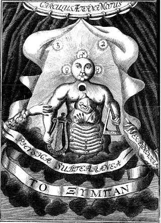
Physica Subterranea
Mais un homme qui publia à la fois de grandes découvertes et beaucoup de procédés nouveaux, qui changea la théorie de la chimie, ou du moins qui en prépara le changement, fut Jean-Joachim Becher. Vous avez pu remarquer que dans le dernier siècle la plupart des chimistes étaient des hommes aventureux ; ils avaient passé une partie de leur vie dans des sociétés secrètes, où on n'était admis qu'après des initiations; ils avaient voyagé beaucoup, et dans leurs voyages avaient été exposés à une foule d'aventures plus ou moins singulières. Ainsi nous avons vu qu'Homberg, qui était né à Batavia avait longtemps habité l'Allemagne; qu'il étaitallé en Angleterre et en France; qu'il avait quelque temps exercé la médecine à Rome; qu'il était revenu en France et avait été regardé comme un empoisonneur et comme complice d'un grand conspirateur. Becher donne lieu à la même remarque. Il naquit à Spire, en 1628, d'un ministre protestant qu'il perdit à l'âge de treize ans. La précocité de son esprit était telle, que déjà il était capable de donner des leçons assez fructueusement pour nourrir sa mère et ses frères. Il voyagea beaucoup, se rendit en Hollande et en Italie. Dans ce dernier pays, il pénétrait dans les ateliers, s'informait des secrets qui étaient possédés par les ouvriers ou autres personnes. C'était l'usage universel des chimistes de ce temps; il avait commencé à Paracelse qui, comme vous l'avez vu, allait d'auberge en auberge, s'informant auprès des vieilles femmes si elles ne savaient rien de particulier dont il pût faire son profit. Becher fut nommé professeur à Mayence et médecin de l'électeur en 1666. Ce n'est pas seulement en chimie qu'il était instruit; il s'était, pour ainsi dire, occupé de toutes les sciences humaines, de philosophie, de droit, de politique, d'administration et de commerce, Il a écrit sur presque tous ces sujets; dans chaque gouvernement où il se rendait, il présentait quelque projet. Il fut aussi, pendant quelque temps, premier médecin de l'électeur de Bavière; ensuite il se rendit à Vienne, où il avait été appelé par le comte de Zenrodolf, alors président de la chambre des finances. II donna dans cette ville toutes sortes de projets de finances, et celui de l'établissement d'une compagnie des Indes pour l'Autriche qui, alors, ne possédait pas les Pays-Bas, et n'avait de port que celui de Trieste. Pendant quelque temps il fut en faveur à la cour de Vienne; mais au bout d'un certain nombre d'années son humeur acariâtre le brouilla avec le ministre, et il fut obligé de quitter la capitale de l'Autriche. Il se rendit à Harlem, où il inventa une machine à dévider la soie, qui n'eut pas de succès; ensuite il passa en Angleterre, et y mourut, âgé de cinquante-sept ans, en 1685. Malgré ce que son caractère avait d'extraordinaire, on ne peut lui contester un génie véritable, un esprit tendant à généraliser et disposé à apercevoir les causes des phénomènes, particulièrement des phénomènes chimiques, d'une manière plus plausible, plus conforme à la généralité de ces phénomènes et plus directe qu'aucun des auteurs des systèmes proposés jusque là dans l'école allemande et dans l'école de Paris; car c'est toujours là qu'il faut nous en tenir, pour juger les chimistes dont nous parlons maintenant et dont les idées sont très différentes de celles des chimistes anglais, que nous allons bientôt examiner. La doctrine de Becher est surtout exposée dans son livre intitulé : Physica subterranea, ou Procès-verbal des opérations des laboratoires chimiques de Munich. Pendant qu'il était médecin de l'électeur de Bavière, qui, comme la plupart des princes de ce temps, croyait à l'existence de secrets utiles dans la chimie, et ne désespérait pas d'arriver à la découverte de l'art de transmuer les métaux, Becher eut à son service un laboratoire très bien fourni et la faculté d'y faire toutes les dépenses nécessaires à ses expériences. Le résultat de ses recherches est considérable et est consigné dans son livre ci-dessus mentionné, qui parut pour la première fois en 1669. Il y propose d'abord l'idée d'un acide primitif qui serait un élément de tous les autres acides, dont la différence spécifique ne tiendrait qu'à quelques mélanges; mais il y donne surtout une nouvelle théorie des métaux, de la métallisation. Selon lui, un métal se compose toujours d'une substance terreuse commune d'un principe combustible aussi identique, et d'une substance particulière, dite mercurielle. Les substances mercurielles sont encore, dans cette doctrine, une espèce d'héritage de la chimie de Valentin et de Paracelse. Le principe combustible, commun avec ce que Stahl a appelé le phlogistique, était le résultat des nombreuses expériences dans lesquelles il avait vu les métaux reprendre leur forme métallique par l'addition, soit du charbon , soit de la graisse, soit d'une résine, en un mot, de toute espèce de madères combustibles pures, [il s'agit de substances à pouvoir réducteur] non pas du soufre, mais des autres matières combustibles qui ne donnaient pas un acide apparent. Ce phénomène dut naturellement lui faire juger que la forme métallique tenait à ce principe combustible commun que l'on admettait dans toutes les chaux métalliques. Ainsi l'étain fondu se calcine à la surface, et si vous couvrez cette surface d'une poussière de résine, comme le fait le moindre ferblantier, l'étain reprend sa forme métallique; il en est de même du plomb. Becher voyait aussi les élémens du fer se changer en métal par l'addition du charbon ; il était naturel d'en conclure que tous les métaux avaient un principe combustible commun. Ce raisonnement était d'autant plus plausible qu'il voyait les métaux brûler. Quant à leurs chaux métalliques, il voyait bien dans toutes une apparence terreuse , mais il y voyait aussi des différences. Alors c'étaient les différentes proportions de la substance mercurielle qui devaient constituer les différences des métaux. Il avait presque entièrement négligé le fait, déjà bien connu dès le temps de Libavius, que le métal privé de son phlogistique, loin de diminuer de pesanteur, augmente en poids. Il ne connaissait pas probablement la théorie que Jean Rey avait donnée de ce phénomène, et dans laquelle il avait énoncé positivement que c'était parce que l'air s'embarrassait dans les molécules du métal et en augmentait ainsi le poids, que la chaux métallique augmentait aussi de pesanteur. Cet effet, consigné dans des ouvrages connus de tout le monde, ne frappa ni Becher ni Stahl, ni aucun de ceux qui adoptèrent, qui préparèrent, et qui maintinrent leur théorie pendant plus de soixante-dix ou quatre-vingts ans, Telle est cependant l'origine du fameux système du phlogistique, qui a si longtemps dominé. D'après cette théorie de la métallisation, vous comprenez que Becher devait croire à la possibilité de transmuer les métaux. Comme ils avaient beaucoup d'éléments communs, s'il eût été possible de faire passer le principe mercuriel de l'or à un autre métal, en conservant sa masse, la transmutation aurait été effectuée. Aussi, n'a-t-il pas douté de la possibilité de cette transmutation, quoiqu'il n'ait pas prétendu la posséder, comme l'avait fait Kunckel. C'était d'ailleurs la croyance générale du temps : personne en Allemagne ne doutait alors de la possibilité de la transmutation, ni même de son existence. [...]
10. Joseph Black fut un chimiste et physicien britannique, né à Bordeaux, qui découvrit la présence de dioxyde de carbone (gaz carbonique) dans l'atmosphère. Black fit ses études à l'université de Glasgow et d'Édimbourgh, en Écosse. Professeur de chimie, de médecine et d'anatomie à l'université de Glasgow de 1756 à 1766, puis professeur de chimie à l'université d'Édimbourgh, Black découvrit le phénomène de la chaleur latente, en 1761, et, trois ans plus tard, il mesura la chaleur latente de la vapeur. Son élève et assistant James Watt mit plus tard en pratique ses découvertes en améliorant la première machine à vapeur. Vers 1754, Black découvrit le dioxyde de carbone, un gaz qu'il dénomma air fixe, réfutant de ce fait la théorie phlogistique. Il découvrit également que des substances différentes présentaient des capacités calorifiques diverses.
11. Fils d’un pasteur hollandais, Boerhaave perd à dix-huit ans le père qui avait surveillé son éducation et l’avait orienté vers l’état ecclésiastique. Devenu étudiant en philosophie à l’université de Leyde, il soutient en 1690 une thèse sur la distinction de l’esprit et du corps. Il partage ensuite son intérêt entre la théologie et la médecine, vers laquelle il se tourne définitivement après sa thèse: De utilitate explorandorum in aegris excrementorum ut signorum (1693). Sa carrière professorale s’organise progressivement : en 1701, il est chargé d’un cours de médecine à l’université de Leyde où son succès auprès des jeunes est tel que, craignant de le voir accepter les propositions de Gröningen, les curateurs de Leyde lui promettent le premier poste professoral vacant. En 1709, il est nommé à la chaire de botanique et médecine ; en 1714 s’ajoute une chaire de clinique, puis en 1718 la chaire de chimie. Il va, seul pendant dix ans, tenir trois des cinq chaires que comporte la faculté de médecine. Il faut ajouter, surtout dans ses premières années, les enseignements privés qu’il donne chez lui et qui, par leur nouveauté, lui procurent une réputation telle que la faculté compte près de deux mille étudiants, venus, pour la plupart, de tous les pays d’Europe. Boerhaave, en effet, est un remarquable enseignant et un puissant travailleur.
- Professeur de botanique, il a la charge du jardin botanique de l’université. Les deux catalogues qu’il en publie en 1710 et 1720 montrent qu’avec plus de deux mille espèces de plus en dix ans, le jardin en a presque doublé le nombre.
- Professeur de médecine, il emprunte aussi bien à Hippocrate qu’aux Modernes les faits bien établis qu’il enseigne. Comme Borelli, il est iatromécanicien, c’est-à-dire qu’il explique la physiologie par la mécanique du corps vivant et les maladies par les dérèglements de celle-ci. Il développe la clinique et les observations au lit du malade. Mais la chimie aussi a une part importante dans sa médecine.
- Professeur de chimie, c’est là peut-être que son œuvre est scientifiquement la plus importante. Il introduit des méthodes quantitatives exactes. On sait le rôle que jouait le mercure dans les transmutations des alchimistes : il a fait de très patientes recherches sur le mercure.Boerhaave a beaucoup publié. Ce sont, en 1707, les Institutiones medicae et, en 1709, les Aphorismi de cognoscendis et curandis morbis qui furent le fondement de son enseignement et légitimèrent sa renommée. Ses cours sont écrits en latin, comme ses ouvrages. Ces derniers ont été traduits en de nombreuses langues, et même en arabe. Haller a vu en Boerhaave « le précepteur commun de l’Europe ». Il fut nommé correspondant de l’Académie des sciences en 1715, puis associé étranger en 1731, enfin membre de la Société royale de Londres en 1730.
12. HERMAN BOERHAAVE, naquit le dernier de Décembre 1668 à Voorhout près de Leyde, de Jacques Boërhaave, Pafteur de ce petit Village, & d'Agar Paalder. Sa famille étoit originaire de Flandre, anciennement établie à Leyde, & d'une fortune très-médiocre. Dès l'âge de 5 ans, il perdit fa Mere, qui laiffoit encore trois autres Enfants. Un an après le Pere fe remaria, & fit nouveaux Enfants augmentérent fa famille. Heureux les Pays où le luxe & des moeurs trop délicates n'en font point craindre le nombre ! II arriva encore une chofe qui feroit affés rare dans d'autres Pays, & dans d'autres moeurs, la feconde femme devint la Mere commune de tous les Enfants de fon Mari, également occupée de tous, tendrement aimée de tous. Le Pere, & par un amour naturel, & par une économie néceffaire, étoit le Précepteur des Garçons auffi longtemps qu'il pouvoit l'être. II reconnut bientôt dans Herman des difpofitions excellentes, & il le desfina à remplir une place comme la fienne. Son ambition ne prenoit pas un plus grand vol, il lui avoit déja appris à l'âge de 11 ans beaucoup de Latin, de Grec, de Belles Lettres, & dans le même temps qu'il lui formoit l'efprit, il avoit foin de lui fortifier le corps par quelqu'exercice modéré d'Agriculture, car il falloit que la bonne éducation coûtât peu. Cependant vers l'âge de 14 ans le jeune Boërhaave fut attaqué d'un Ulcere malin à la Cuife gauche ; il fut tourmenté pendant près de quatre ans & du mal & des remedes, enfin après avoir épuifé tout l'art des Médecins & des Chirurgiens, il s'avifa de fe faire de fréquentes fomentations avec de l'urine où il avoit diffous du Sel, & il fe guérit lui-même, préfage, fi l'on veut, de l'avenir qui l'attendoit. Cette longue maladie ne nuifit prefque pas au cours de ses Etudes. Il avoit par fort goût naturel trop d'envie de fçavoir, & il en avoit trop de befoin par l'état de fa fortune. Il entra à 14 ans dans les Ecoles publiques de Leyde, il pafoit rapidement d'une Claffe dans une plus élevée, & partout il enlevoit tous les Prix. Il n'avoit quels ans quand la mort de fon Pere le laiffa fans fecours, fans confeil, fans bien. Quoique dans fes études il n'eût pour dernier & principal objet que la Théologie, il s'étoit permis des écarts affés confidérables vers une autre Science extrêmement différente, vers la Géométrie, qu'il auroit prefque dû ne connoître que de nom. Peut-être certains Efprits faits pour le Vrai sçavent-ils par une efpece d'intérêt, qu'il doit y avoir une Géométrie, qui fera quelque chofe de bien fatisfaifant pour eux, mais enfin M. Boërhaave fe fentit forcé à s'y appliquer fans aucune autre raison que celle du charme invincible qui l'attiroit. Heureufement ce fut-là pour lui après la mort de fon Pere une resource qu'il n'avoit pas prévûë. Il trouva moyen de fubfifter à Leyde, & d'y continuer fes études de Théologie en enfeignant les Mathématiques à de jeunes gens de condition. D'un autre côté la maladie dont if s'étoit guéri, lui fit faire des réflexions fur l'utilité de la Médecine, & il entreprit d'étudier les principaux Auteurs dans ce genre, à commencer par Hippocrate, pour qui il prit une admiration vive & paffionnée. Il ne fuivit point les Professeurs publics, il prit feulement quelques-unes des Leçons du fameux Drelincourt, mais il s'attacha aux Diffections publiques, & en fit fouvent d'Animaux en fon particulier. Il n'avoit befoin que d'apprendre des faits qui ne fe devinent point, & qu'on ne fçait qu'imparfaitement fur le rapport d'autrui, tout le refte, il le f'apprenoit lui-même en lifant. Sa Théologie ne laiffoit pas d'avancer, & cette Théologie, c'étoit le Grec, l'Hébreu, le Chaldéen, la Critique de l'Ancien & du Nouveau Teftament, les anciens Auteurs Eccléfiaftiques, les Commentateurs. modernes. Comme on le connoiffoit capable de beaucoup de choses à la fois, on lui avoit confeillé d'allier la Médecine à fa Théologie, & en effet il leur donnoit la même application, & fe préparait à pouvoir remplir en même temps les deux fonctions les plus indifpenfablement néceffaires à la Société. Mais il faut avoüer que quoiqu'également capable de toutes les deux, il n'y étoit pas également propre. Le fruit d'une vafte & profonde lecture dans les matières Théologiques avoit été de lui perfuader que la Religion très fimple au fortir, pour ainfi dire, de la bouche de Dieu, étoit préfentement défigurée par de vaines, ou plûtôt par de vitieufes fubtilités philofophiques, qui n'avoient produit que des diffentions éternelles, & les plus fortes de toutes les haines. Il vouloit faire un Acte public fur cette Queflion, Pourquoi le Chriftianifme prêché autrefois par des Ignorants, avoit fait tant de progrès, et en faifoit aujourd'hui fi peu, prêché par des Savants ! On voit assez où ce Sujet, qui n'avoit pas été pris au hazard, devoit le conduire, & quelle cruelle Satire du Mistère Eccléfiaftique en général y étoit renfermée. Pouvoit-il avec une façon de penfer fi finguliére exercer ce Miniftere tel qu'il le trouvoit ? Pouvoit-il efpérer d'amener un peu de ses Collegues à fon avis ? N'étoit -il pas fûr d'une guerre générale déclarée contre lui, & d'une guerre Théologique ? Un pur accident, où il n'avoit rien à fe reprocher, se joignit apparemment à ces réflexions, & le détermina abfolument à renoncer au Miniftere, & à la Théologie. II voyageoit dans une Barque, où il prit part à une converfation qui rouloit fur le Spinofifme. Un Inconnu plus orthodoxe qu'habile, attaqua fi mal ce Sifteme que M. Boërhaave lui demanda s'il avoit lu Spinola. Il fut obligé d'avoüer que non, mais il ne pardonna pas à M. Boërhaave. Il n'y avoit rien de plus aifé que de donner pour un Zelé & ardent défenfeur de Spinola, celui qui demandoit feulement que l'on connût Spinofa quand on l'attaquoit ; auffi le mauvais raifonneur de la Barque n'y manqua-t-il pas, le Public, non-feulement très-fufceptible, mais avide de mauvaises impressions, le feconda bien, & en peu de temps M.Boërhaave fut déclaré Spinofiste. Ce Spinofiste cependant a été toute fa vie fort régulier à certaines pratiques de piété, par exemple, à fes Prieres du matin & du soir. Il ne prononçoit jamais le nom de Dieu, même en matière de Phifique, fans fe découvrir la tète, refpect qui, à la vérité, peut paroître petit, mais qu'un hipocrite n'auroit pas le front d'affecter. Après fon aventure, il le réfolut à n'être deformais Théologien qu'autant qu'il le falloit pour être bon Chrétien, & il se donna entièrement à la Médecine. II n'eut point de regret à la vie qu'il auroit menée, à ce Zele violent qu'il auroit fallu montrer pour des opinions fort douteufes, & qui ne méritoient que de la tolérance, à cet esprit de parti dont il auroit dû prendre quelques apparences forcées, qui lui auroient coûté beaucoup, & peu réussi. Il fut reçû Docteur en Médecine l'an 1693, âgé de 25 ans, & ne difcontinua pas fes Leçons de Mathématique, dont il avoit befoin en attendant les Malades qui ne viennent pas fi-tôt. Quand ils commencérent à venir, il mit en Livres tout ce qu'il pouvoit épargner, & ne se crut plus à fon aise que parce qu'il étoit plus en état de fe rendre habile dans fa Profeffion. Par la même raifon qu'il se faifoit peu à peu une Bibliotheque, il fe fit auffi un Laboratoire de Chimie, & quoiqu'il ne pût pas fe donner un Jardin, Boërhaave étudia beaueoup la Botanique. Si l'on raffemble tout ce qui a été dit jufqu'ici, on fera fans doute étonné de la quantité de connoiffances différentes qui s'amaffoient dans une feule tête. Que feroit-ce donc fi nous ofions dire qu'il embraffa jufqu'à la Jurifprudence, & à la Politique ? Il y a des esprits à qui tout ce qui peut être fait convient, & qu'une grande facilité de compréhenfion, et une mémoire heureufe, une lecture continuelle, mettent en état d'apprendre tout. Peut-être ne feront-ils guère qu'apprendre, que fçavoir ce qui a été fçu par d'autres, mais ils fçauront eux feins ce qui a été fçû par un grand nombre d'autres séparément, & il ne leur arrivera pas, comme à ceux côté de grands Hommes, et de l'autre des Enfants. Sa réputation augmentoit affés vite, & fa fortune fort lentement. Un Seigneur, qui étoit dans la plus intime faveur de Guillaume III, Roi d'Angleterre, le follicita par de rnagnifiques promeffes à venir s'établir chés lui à-la Haye, mais le jeune Médecin craignit pour fa liberté; quoique peut-être avec peu de raifon, & il refufa courageufement. Les Lettres, les Sciences forment affes naturellement des Ames indépendantes, parce qu'elles modérent beaucoup les defirs. M. Boërhaave eut dès-lors trois Amis de grande confidération, M. Jacques Trigiand célébre profeffeur Théologie, & Mrs Daniel Alphen, & Jean vars den Berg, tous deux élevés aux premieres Magiftratures, cKils exerçoient avec beaucoup d'honneur. Ils avoient prefque deviné le mérite de M. Boërhaave, & ce fut pour eux une gloire dont ils eurent lieu dans la fuite de fe fçavoir bon gré, et pour lui un fujet de reconnoiffance qu'il sentit toûrjours vivement. M. van den Berg lui propofa de fonger à une place de Profeffeur en Médecine dans l'Univerfité de Leyde, & l'effraya par cette propofition qu'il jugea auffi-tôt trop téméraire & trop ambitieufe pour lui, mais cet Ami habile & zélé, qui fe crut affés fort par fors crédit, & encore plus par le Sujet pour qui il agiroit, entreprit l'affaire, et elle fut-faite en 1702. Devenu Profeffeur public, il fit encore chés lui des Cours particuliers, qui font & plus rnflrudifs, & plus fréquentés, & , pour tout dire, plus utiles au Maître. Le fuccès de les Leçons fut tel, que fur un bruit qui courut qu'il devoit paffer ailleurs, les Curateurs de l'univerfité de Leyde lui: augmentèrent confidérablement les appointements, à condition qu'il ne les quitteroit point. Leur fage économie fçavoit calculer ce qu'il valloit à leur Ville par le grand nornbre de les Ecoliers. Les premiers pas de fa fortune une fois faits, les füivantes furent rapides. On lui donna encore deux places de Profeffeurr. l'une en Botanique, l'autre en Chimie, & les honneurs, qui ne font que des honneurs, comme les Rectorats, ne lui furent pas-épargnés. Ses fondions multipliées autant qu'elles pouvoient l'être, attirérent à Leyde un concours d'Etrangers qui auroit prefque fuffi pour enrichir la Ville, & affûrément les Magiftrats ne fe repentirent point d'avoir acheté cher l'affûrance de pofféder toûjours un pareil Profeffeur. Tous les Etats de l'Europe lui fourniffoient des Difciples, l'Allemagne principalement, & même l'Angleterre, toute fière qu.'elle eft, & avec juflice, de l'état florifant où les Sciences font chés elle. Quoique le lieu où il tenoit chés lui les Cours particuliers de Médecine ou de Chimie fût affés grand, fouvent pour plus de fureté on s'y faifoit garder une place, comme nous faifons ici aux Spectacles qui réuffiffent le plus. Il n'eft pas étonnant que dans les Siécles où les Etabliffements publics, deftinés aux foibles Sciences d'alors, étoient fort rares, on fe foit rendu de tous les Pays de l'Europe auprès d'un Docteur devenu célébre, que quelquefois même on l'ait fuivi jufque dans des Solitudes, lorfqu'il étoit chaffé des Villes par la jaloufie, & la rage de fes Rivaux. Mais aujourd'hui que tout eft plein de Colleges, d'Univerfités, d'Académies, de Maîtres particuliers, de Livres qui font des Maîtres encore plus Purs, quel befoin a-t-on de fortir de fa Patrie pour étudier en quelque genre que ce foit ? Trouvera-t-on ailleurs un Maître fi fupérieur à ceux que l'on avoit chés foi ? Sera-t-on fuffifamment récompenfé.du voyage ? Il n'eft guère poffibible d'imaginer fur ce point d'autre caufe que les talents rares & finguliers d'un Profeffeur. Il ne fera point obligé à inventer des Siftemes nouveaux, mais il le fera à poffeder parfaitement tout ce qui a été écrit fur fa Science, à porter de la lumiére par-tout où les Auteurs originaux auront, felon leur coûtume, laiffé beaucoup d'obfcurité, à rectifier leurs erreurs, toûjours d'autant plus dangereufes, qu'ils font plus eflimables; enfin à refondre toute la Science, fi on peut efpérer, comme on le peut prefque plus aifée à faifir fous une forme nouvelle. C'eft ce qu'a fait M. Boërhaave fur la Chimie, dans les deux Volumes in-4°.qu'il en a donnés en 1732. Quoiqu'on l'eût &ja tirée de ces ténèbres mistérieufes où elle fe retranchoit anciennement, &. d'où elle fe portoit pour une Science unique, qui dédaignoit toute communication avec les autres, il fembloit qu'elle ne fe rangeoit pas bien encore fous les loix générales de la Phifique, & qu'elle prétendoit conferver quelques droits & quelques privileges particuliers. Mais M. Boërhaave l'a réduite à n'être qu'une firnple Phifique, claire, & intelligible. Il a raffernblé toutes les lumiéres acquifes depuis un temps, & qui étoient confufément répanduës en mille endroits différents, & il en a fait, pour ainfi dire, une Illumination bien ordonnée, qui offre à l'Efprit un magnifique Spectacle. Il faut avoüer cependant que clans cette Phifque ou Chimie fi pure, & fi lumineufe, il y admet l'Attraction, & pour agir avec plus de franchife que l'on ne fait affés fouvent fur cette matière, il reconnoît bien formellement que cette Attraction n'eft point du tout un principe Méchanique. Peut-être la croiroit-on plus fupportable en Chimie qu'en Aftronomie, à caufe de ces mouvements fubits, violents, impétueux, fi communs dans les opérations Chimiques, mais en quelque occafion que ce foit, aura-t-on dit quelque chofe, quand on aura prononcé le mot d'Attraction ? On l'accufe d'avoir mis dans cet Ouvrage, des opérations qu'il n'a pas faites lui-même, et dont il s'eft trop fié à fes Artiftes. Outre les qualités effentieiles aux grands Profeffeurs, M. Boërhaave avoit encore celles qui les rendent aimables à leurs Difciples. Ordinairement on leur jette à la tête une certaine quantité de fçavoir, fans fe mettre aucunement en peine de ce qui en arrivera. On fait fon devoir avec eux précifément & féchement, & on efl preffé d'avoir fait. Pour lui, il leur faifoit fentir une envie fincere de les inflruire, non-feulement il étoit très-exact à leur donner tout le temp promis, mais il ne profitoit point des accidents, qui auroient pu légitimement lui épargner quelque Lëçôn, il ne manquoit point de la remplacer par une autre. Il s'étudioit à reconnoître les talents, il les encourageoit, les aidoit par des attentions partiçuliéres. Il faifoit plus ; fi les Difciples tomboient malades il étoit leur Médecin, & il les préféroit fans héfiter aux pratiques les plus brillantes, & les plus utiles. Il regardoit ceux qu'il avoit à inftruire comme les Enfants adoptifs à qui il devoit, fon fecours, & en les traitant. il les inftruifoit encore plus efficacement que jamais. Il avoit trois Chaires de Profeffeur, & les rempliffoit toutes trois de la même manière. Il publia en 1707, les Inftitutiones Medica, & en 1708, fes Aphorifmi de cognofcendis et curandis Morbis. Nous ne parlons que des premières Editions, qui ont toûjours été fuivies de plufieurs autres. Ces deux Ouvrages, & principalement les Inftitutions, font fout eftimés de ceux qui font en droit d'en juger; il s'y propofe d'imiter Hippocrate. A fon exemple, il ne fe fonde jamais que fur l'Expérience bien avérée, & laiffe à part tous les Siftemes qui peuvent n'être que d'ingénieufes productions de l'Efprit humain, défavôuées par la Nature. Cette fageffe eft encore plus eftimable aujourd'hui que du temps d'Hippocrate où les Siftemes n'étoient ni en auffi grand nombre, ni auffi féduifants. L'imitation d'Hippocrate paroît encore dans le ftile ferré & nerveux de les Ouvrages. Ce ne font, en quelque forte que des germes de Vérités extrêmement réduites en petit, & qu'il faut étendre & développer, comme il le faifoit par les explications. Pourra-t-on croire que les Institutions de Médecine et les Aphorifmes de M. Boërhaave ayent eu un affés grand fuccès pour paffer les bornes de la Chrétienté, pour fe répandre jufqu'en Turquie, pour y être traduits en Arabe, & par qui ? par le Mufti lui- même. Les plus habiles Turcs entendent-ils donc le Latin ? entendront-ils une infinité de chofes qui ont rapport à notre Phifique, à notre Anatomie, à notre Chimie d'Europe, & qui en fuppofent la connoiffance ? Comment fentiront-ils le mérite d'Ouvrages qui ne font à la portée que de nos Sçavants ? Malgré tout cela, M. Albert Schultens, trés-habile dans les Langues Orientales, & qui, par ordre de l'Univerfté de Leyde, y a fait l'Oraifon funebre de M. Boërhaave, y a dit qu'il avoit vû cette traduction Arabe, il y avoit alors cinq ans, que l'ayant confrontée à l'original, il l'avoit trouvée fidelle, & qu'elle devoit être donnée à la nouvelle Imprimerie de Constantinople. Un autre fait qui regarde les lnstitutiones, n'est guère moins fingulier, quoique d'un genre très-différent. Lorfqu'il réimprima ce Livre en 1713, il mit à la tête une Epitre dédicatoire à Abraham Drolenvaux, Sénateur & Échevin de Leyde, où il le remercie très-tendrement & dans les termes les plus vifs de s'être privé de fa flle unique pour la lui donner en mariage. C'étoit au bout de trois ans que venoit ce remerciement, & qu'il faifoit.publiquement à fa femme une déclaration d'amour. Il avoit du goût pour ces fortes de Dédicaces, & il aimoit mieux donner une marque flateufe d'amitié à fon égal, que de fe prosterner aux pieds d'un Grand, dont à peine peut-être auroit-il été apperçû. II dédia fon Cours de Chimie à fon frere Jacques Boërhaave Pafteur d'une Eglife, qui deftiné par leur Père à la Médecine, l'avoit fort aidé dans toutes les opérations Chimiques auxquelles il fe livroit, quoique deftiné à !a Théologie. Ils firent enfuite entre eux un échange des deftinations. Nous n'avons point encore parlé de M.Boërhaave comme Profeffeur en Botanique. Il eut cette place en 1709, année fi fünefle aux Plantes par toute l'Europpe, & l'on pourroit dire que du moins Leyde eut alors une efpece de dédommagement. Le nouveau Profeffeur trouva dans le Jardin public 3000 Plantes, il avoit doublé ce nombre dès 1720. Heureufement il avoit pris de bonne heure, comme nous l'avons déja dit, quelque habitude d'Agriculture, & rien ne convenoit mieux, & à fa fanté, & à fon amour pour la vie fimple, que le foin d'un Jardin, & l'exercice corporel qu'il demandoit. D'autres mains pouvoient travailler, mais elles n'euffent pas été conduites par les mêmes yeux. II ne manqua pas de perfectionner les Méthodes déjà établies pour la diftribution & la nomenclature des Plantes. Après qu'il avoit fini un de fes trois Cours, les Etrangers, qui avoient pris fes Leçons, fortoient de Leyde, & fe difperfoient en différents Pays, où ils portoient fon nom, & fes loüanges. Chacune des trois fonctions fourniffoit un lot qui partoit, & celâ fe renouvelloit d'année en année. Ceux qui etoient revenus de Leyde y en envoyoient d'autres, & fouvent en plus grand nombre. On ne peut imaginer de moyen plus propre à former promptement la réputation d'un Particulier; & à l'étendre de toutes parts. Les meilleurs Livres font bien lents en comparaifon. Un grand Profeffeur en Médecine & un grand. Médecin peuvent être deux hommes différents, tant il eft arrêté à l'égard de la Nature humaine, que les chofes qui paroiffent les plus liées par elles-mêmes, y pourront être féparées. M. Boërhaave fut ces deux hommes à la fois. Il avoir fur-tout le Pronoftic admirable, & pour ne parler ici que par faits, il attira, à Leyde, outre la foule des Etudiants, une autre foule prefque auffi nombreufe de ceux qui venoient de toutes parts le confulter fur des Maladies finguliéres rébelles à la Médecine commune, & quelquefois même par un excès de confiance fur des Maux ou incurables, ou qui n'étoient pas dignes du voyage. J'ai ouï dire que le Pape Benoît XIII le fit confulter. Après cela on ne fera pas furpris que des Souverains qui fe trouvoient en Hollande, tels que le Czar Pierre I, & le Duc de Lorraine, aujourd'hui Grand Duc de Tofcane, l'ayent honoré de leurs vifites. Dans ces occafions c'eft le Public qui entraîne les Maîtres, & les force à fe joindre à lui. En 1731 l'Académie des Sciences choifit M. Boërhaave pour être l'un de fes Affociés Étrangers, & quelque temps après il fut auffi Membre de la Société Royale de Londres. Nous pourrions peut-être nous glorifier un peu de l'avoir prévenuë, quoique la France eût moins de liaifon avec lui que l'Angleterre. Il fe partagea également entre les deux Compagniës, en envoyant à chacune la moitié de la Relation d'un grand travail fuivi nuit & jour & fans interruption pendant 15 ans entiers fur un même feu, d'où il refultoit que le Mercure étoit incapable de recevoir aucune vraye altération, ni par conféquent de fe changer en aucun autre Métal. Cette opération ne convenoit qu'à un Çhimifte & fort intélligent & fort patient, & en même temps fort aifé. Il ne plaignit.pas la dépenfe, pour empêcher, s'il efl poffible, celles où l'on eft fi fouvent & fi maiheureufement engagé par les Alchimistes. Sa vie étoit extrênement laborieufe, & fon tempérament, quoique fort & robufle, y fuccomba. Il ne laiffoit pas de faire de l'exercice, foit à pied, foit à cheval, & quand il ne pouvoit fortir de chés lui, il joüoit de la Guitarre; divertiffement plus propre que tout autre à fuccéder aux occupations férieufes & triftes, mais qui demande une certaine douceur d'ame que les gens livrés à ces fortes d'occupations n'ont pas ou ne confervent pas toûjours. Il eut trois grandes & cruelles maladies, l'une, en 1722, l'autre en 1727, & enfin la derniére qui l'emporta le 23 Septembre 1738. M. Schultens, qui le vit en particulier trois femaines avant fa mort, attefte qu'il trouva au lieu de fes mortelles fouffrances dans tous les fentiments non-feulement de foumiffion, mais d'amour pour tout ce qui lui venoit de la main de Dieu. Avec un pareil fond il eft aifé de juger que les moeurs avoient toûjours été très-pures. Il fe mettoit volontiers en la place des autres, ce qui produit l'équité & l'indulgence, & il mettoit volontiers auffi les autres en fa place, ce qui prévient ou réprime l'orgueil. Il defarmoit la medifance & la Satire en les négligeant, il en comparoit les traits à ces Etincelles qui s'élancent d'un grand feu, & s'éteignent auffi-tôt quand on ne fouffle pas deffus. Il a laiffé un bien très-confidérable, & dont on eft furpris quand où fonge qu'il n'a'été acquis que parles moyens les plus légitimes. Il s'agit peut-être de prés de deux Millions de Florins, c'efl-à-dire, de quatre Millions de notre Monnaye. Et qu'auroient pu faire de mieux.ceux qui n'ont jamais rejetté aucun moyen, & qui font partis du même point que lui ! Il a joui long-temps de trois Chaires de Profeffeur, tous les Cours particuliers produifoient beaucoup, les confultations qui lui venaient de toutes parts étaient payées, fans qu'il l'exigeât, & fur le pied de l'importance des perfonnes dont elles venoient, et fur celui de fa réputation ; d'ailleurs la vie fimple dont il avaoit pris l'habitude, et qu'il ne pouvait ni ne devait quitter, nul goût pour des dépenfes de vanité & d'oftentation, nulle fantaifie, ce font encore là de grand fonds, & tout cela mis enfemble, on voit qu'il n'y a pas eu de fa faute à devenir fi riche. Ordinairement les hommes ont une fortune proportionnée, non à leurs vaftes & infatiables defirs, mais à leur médiocre mérite, M. Boërhàave en a eu une proportionnée à fon grand mérite, & non à fes defirs très-modérés. Il a laiffé une Fille unique héritiére de tout ce grand bien.
13. ETIENNE-FRANÇOIS GEOFFROY naquit à Paris, le 13 Février 1672, de Matthieu-François Geoffroy, Marchand Apothicaire, ancien Echevin, & ancien Conful, & de Louife de Vaux, fille d'un Chirurgien, célébre en fon temps. Le bifayeul paternel de M. Geoffroy avoit été auffi premier Echevin de Paris, & alors on ne choififfoit que des Bourgeois d'ancienne famille, & d'une réputation bien nette, efpéce de nobleffe qui devroit bien valoir celle dont la preuve ne confifte que dans les filiations. Si nous difions que l'éducation d'un jeune homme a été telle que quand il fut en Phyfique, il fe tenoit chez fon Pere des Conférences réglées, où M. Cafiini apportoit fes Planifphéres, le P. Sébaiften fes Machines, M. Joblot fes pierres d'Aiman , où M. d u Verney faifoit des diffections, & M. Homberg des opérations de Chymie , où fe rendoient du moins par curiofité plufieurs autres Sçav ants fameux , & de jeunes gens qui portoient de beaux noms, qu'enfin ces Conférences parurent fi bien entendues, & fi utiles, qu'elles furent le modéle & l'époque de l'établiffement des expériences de Phyfique dans les Colléges; fans doute on croiroit qu'il s'agiffoit de l'éducation d'un fils de Miniftre , deftiné pour le moins aux grandes dignités de l'Fglife ; cependant tout cela fut fait pour le jeune Geoffroy , que son pere ne deftinoit qu'à lui fuccéder dans fa profeffion. Mais il. fçavoit combien de connoiffances demande la Pharmacie embraffée dans toute fon étendue, il l'aimoit, & par goût, & parce qu'elle lui réuffifoit fort , & il croyoit ne pouvoir mieux faire que de fournir à fon fils les moyens de pourfuivre avec plus d'avantage la carriere où lui-même auroit vieilli. Après cette premiere étude de Phyfique générale , M. Geoffroy fit des Cours particuliers, de Botanique, & de Chymie, & méme d'Anatomie, quoique cette fcience ne fùt pas de fon objet principal. Il s'en écartoit encore davantage dans fes heures de délaffement , où l'on eft le maître de choifir fes plaifirs. Il tournoit, il travailloit des verres de lunettes , il exécutoit des Maehines en petit, il apprenoit l'Italien de l'Abbé Rofelli, fi connu par le Roman de l'Infortuné Napolitain. En 1692, fon pere l'envoya à Montpellier, pour y apprendre la Pharmacie chez un habile Apothicaire , qui de fon côté envoya fon fils à Paris chez M. Geoffroy, échange bien entendu, puifque l'un & l'autre de ces jeunes gens en laiffant dans la maifon paternelle ce qu'il étoit bien fûr d'y retrouver toujours, alloit chercher dans une maifon étrangere ce qu'il n'eût pas trouvé chez lui. M. Geoffroy fuivit les plus habiles Profeffeurs de la fameufe École de Montpellier, & il vit prefque naître alors dans cette Ville un grand nom qui s'eft toujours accru depuis , & qui par lui-même, & fans nul fecours étranger s'eft élevé à la premiere place. Avant que de revenir à Paris, M. Geoffroy voyagea dans les Provinces Méridionales du Royaume , & alla voir les Ports de l'Océan, car il embraffoit auffi ce qui n'étoit que de pure curiofité. Il en eût peut-être été bien puni à S. Malo, où il fe trouva enfermé en 1693, dans le temps du Bombardement des Anglois, fi la terrible Machine Infernale, qui menaçoit d'abîmer tout, n'eût manqué fon effet. M. le Comte de Tallard, depuis Duc, Pair & Maréchal de France, ayant été nommé au commencement de 1698 à l'Ambaffade extraordinaire d'Angleterre, il choifit M. Geoffroy, qui n'étoit point Médecin , pour avoir foin de fa fanté , & il ne crut point que cette confiance donnée au mérite dépourvû de titre, fût trop hardie. M. Geoffroy, qui fçavoit voyager, ne manqua pas de profiter du féjour de Londres, il gagna l'amitié de la plûpart des Illuftres d'un Pays, qui en produit tant, & principalement celle de M. le Chevalier Sloane, & en moins de fix mois il devint leur confrere par une place qu'ils lui donnerent dans la Société Royale. De-là il paffa en Hollande, où il vit d'autres Sçavants, fit d'autres obfervations, acquit de nouvelles connoiffances. Il fe préfenta encore à lui l'occafion de faire un voyage agréable , celui d'Italie, où il alla en 1700 avec M. l'Abbé de Louvois, en qualité de fon Médecin, felon le langage de M. Geoffroy, & en qualité d'ami, felon le langage de cet Abbé, car ils avoient tous deux le mérite de ne pas parler de même. Le grand objet de M. Geoffroy étoit toujours l'Hiftoire Naturelle, & la matiere Médicinale, & il étoit d'autant plus obligé à porter fes vûes de ce côté là , que fon pere avoit deffein de lui laiffer fa place & fon établiffement. Dès 1693, il avoit fubi l'examen pour la Pharmacie, & fait fon chef chef d'oeuvre, cependant ce n'étoit point là le fond de fon intention, il vouloit être Médecin, & n'ofoit le déclarer. Il faifoit des études équivoques, qui convenoient également au plan de fon pere & au fien , telle étoit la matiere Médicinale, qu'un habile Apothicaire ne fçauroit trop connoître , & que fouvent un habile Médecin ne connoît pas affez. Enfin quand le temps fut venu de ne pouvoir plus foutenir la diffimulation , & de prendre un parti décifif , il fe déclara , & le pere fe rendit. Il avoit deftiné à la Médecine fon fecond fils, qui eft aujourd'hui l'un des Chymiffes de cette Académie , celui-là prit la Pharmacie au lieu de fon aîné. Cette légere tranfpofition dût être affez indifférente au pere, mais enfin ce n'étoit pas là fon premier projet, & il apprit combien la nature qu'il n'avoit pas affez confultée fur fes enfants eft jaloufe de fes droits. M. Geoffroy le mit donc fur les Bancs de Médecine, & fut reçu Bachelier en 1702. Sa premiere Thèfe fut extrêmement retardée, parce que M. Fagon , premier Médecin , qui devoit y préfider, & qui avoit coutume de commettre pour la présidence , voulut préfider en perfonne , honneur qui le fit acheter par des délais. M. Geoffroy, qui avoit fait fa Thèfe lui-même, quoique félon l'ufage établi elle dût être l'ouvrage du Préfident, avoit choifi cette Queftion, Si le Médecin eft en même temps un Méchanicien Chymifte ! On fent affez qu'il avoit intérêt de conclurre pour l'affirmative , au hazard de ne pas comprendre tous les Médecins dans fa définition. Il compofa pareillement les deux autres Thèfes de Bachelier, & à plus forte raifon celles dont il fut Préfident, après avoir été reçu Docteur en 1704. Il prenoit toujours des fujets utiles ou intéreffants ; celle où il demandoit Si l'Homme a commencé par être Ver, piqua tellement la curiofité des Dames, & des Dames du plus haut rang, qu'il fallut la traduire en françois, pour les initier dans des myfteres , dont elles n'avoient pas la théorie. On affure que toutes les Thèfes forties de fa main n'ont pas feulement été regardées dans nos Ecoles comme des Traités prefque complets fur les fujets choifis, mais qu'elles le font trouvées plus au goût des Etrangers, qu'un grand nombre d'autres, où ils fe plaignent que le foin dominant a été celui de l'élégance du ftyle , & de la belle latinité. Il ne le preffa point de fe jetter dans la pratique , dès-qu'il en eut le droit ; il s'enferma pendant dix ans dans fon Cabinet, & il voulut être für d'un grand fonds de connoiffances, avant que de s'en permettre l'ufage. Les Médecins ont entr'eux ce qu'ils appellént les bons principes, & puifqu'ils font les bons, ils ne font pas ceux de tout le monde. Les confreres de M. Geoffroy conviennent qu'il les poffédoit parfaitement.Son caractere doux, circonfpect, modéré, & peut-être même un peu timide , le rendoit fort attentif à écouter la nature, à ne la pas troubler par des remédes, fous prétexte de l'aider, & à ne l'aider qu'à propos, & autant qu'elle le demandoit. Une chofe finguliere lui fit tort dans les commencements , il s'affectionnoit trop pour fes malades, & leur état lui donnoit un air trifte & affligé qui les alarmoit; on en reconnut enfin le principe , & on lui fçut gré d'une tendreffe fi rare , & fi chere à ceux qui fouffrent. Perfuadé qu'un Médecin appartient également à tous les malades, il ne faifoit nulle différence entre les bonnes pratiques & les mauvaifes, entre les brillantes & les obfcures. I1 ne recherchoit rien, & ne rejettoit rien. De-là , il eft aifé de conclurre que ce qui dominoit dans le nombre de fes pratiques, c'étoient les obfcures, ou les mauvaifes, & d'autant plus que fes premiers engagements lui étoient facrés, & qu'il n'eût pas voulu les rompre , ou s'en acquitter légérement, pour courir aux occafions les plus flatteufes qui feroient furvenues. D'ailleurs fouverainement éloigné de tout fafte, il n'étoit point de ceux qui fçavent aider à leur propre réputation , & qui ont l'art de fuggérer tout bas à la renommée , ce qu'ils veulent qu'elle répéte tout haut avec fes cent bouches. Cependant le vrai avoit percé à la longue, & M. Geoffrey étoit bien connu. Dans les grandes affaires de Médecine, ceux qui s'étoient faits des premiers poftes l'appelloient prefque toujours en confultation , il étoit celui dont tous les autres vouloient emprunter des lumieres. Ciceron conclut que les Romains étoient le plus vaillant peuple du monde, de ce que chaque peuple fe donnoit le premier rang pour la valeur, & accordoit toujours le fecond aux Romains. En 1709 , le Roi lui donna la place de Profeffeur en Médecine au Collége Royal ,vacante par la mort de M. de Tournefort. Il entreprit de dicter à fes Auditeurs toute l'Hiftoire de la matiere médicinale , fur laquelle il avoit depuis longtemps amaffé de grandes provifions. Tout le régne minéral a été expédié, c'eft-à-dire, tous les minéraux qui font en ufage dans la Médecine , & c'eft ce qu'on a jufqu'à préfent fur ce fujet de plus rechérché, de plus certain & de plus complet. Il en étoit au régne végétal, & comme il fuivoit l'ordre alphabétique il en eft refté à la Meliffe, qui quoiqu'affez avancée dans l'Alphabet, laiffe après elle un grand vuide, & beaucoup de regret aux curieux de ces fortes de matieres. Il n'avoit point touché au régne animal mais du moins tout ce qu'il a dicté s'eft trouvé e n très-bon ordre dans fes papiers, & on efpére que fa famille le donnera au Public. M. Fagon , qui étoit toujours demeuré titulaire de la Charge de Profeffeur en Chymie au Jardin Royal, la faifoit exercer par quelqu'un qu'il choififfoit. M. de S. Yo n , à qui il avoit donné cet emploi, n'ayant pû le remplir en 1707, à caufe de fes inhrmités, M. Geoffroy eut fa place, & s'en acquitta fi bien que dans la fuite M. Fagon fe démit abfolument de la Charge en fa faveur. Cela arriva e n 1712. M. Fagon pour mettre en oeuvre M. Geoffroy tout entier, lui demanda qu'aux leçons ordinaires de Chymie, il enjoignît fur la matiere médicinale , ce qui, dans une même féance, ajoutoit deux heures , & quelquefois trois , à deux autres heures déja employées. M. Geoffroy y confentit, emporté par fon zele , & fans doute auffi par un certain fentiment de gloire , qui agit, & qui doit agir fur les ames les plus éloignées de la vanité ; il étoit foutenu par le plaifir de voir que de fi longues féances, loin de rebuter les Auditeurs, ne les rendoient que plus affidus , & plus attentifs, mais enfin il confulta trop peu les intérêts de fa fanté, qui étoit naturellement foible, & qui en fouffrit. La Faculté de Médecine ,qui fe choirit tous les deux ans un Chef qu'on appelle Doyen, crut en 1726, fe trouver dans des circonftances où il lui en falloit un, qui quoique digne de l'être, ne fit aucun ombrage à fa liberté, & qui aimàt mieux fa Compagnie que fa place. M. Geoffroy fut élû , mais comme tous les membres d'une République ne font pas également Républicains, quelques-uns attaquerent fon élection par des irrégularités prétendues, & lui-même auroit été volontiers de leur parti, mais l'élecion fut confirmée par le jugement de la Cour. Ses deux années de Décanat finies, il fut continué , & cela par les fuffrages mêmes qui auparavant lui avoient été contraires. On fentoit un nouveau befoin qu'on avoit de lui. Il s'étoit élevé un Procès entre les Médecins & les Chirurgiens, efpéce de guerre civile, qui divifoit les Citoyens d'un même Etat, & il falloit, ou du zele pour la foutenir, ou de la douceur pour la terminer, & même en la foutenant il falloir toujours de la douceur avec le zele. On lui fit un honneur fingulier ; il y a fous le Doyen un Cenfeur, qui eft fon Lieutenant, & ce cenfeur eft toujôurs le Doyen , qui vient de fortir de place. On fupprima le titre d e Cenfeur pour les deux années du nouveau Décanat de M.Geoffroy, & on le laiffa le maître de choifir ceux qu'il voudroit pour l'aider. Ces témoignages d'eftime de la part de fa Compagnie, qu'il n'auroit pas recherchés par ambition , il les fentit vivement par un principe de reconnoiffance, d'autant plus fort qu'on eft plus dégagé de paffions tumultueufes ; il fe livra fans ménagement aux travaux extraordinaires du fecond Décanat, qui joints à ceux qu'exigeoient fa profefflon, & fes différentes places, ruinerent abfolument fa fanté, & au commencement de 1730, il tomba accablé de fatigues. Il eut cependant le courage de mettre la derniere main à un ouvrage que fes prédéceffeurs Doyens avoient jugé néceffaire , mais qu'ils n'avoient pas fini, c'eft un Recueil des Médicaments compofés les plus ufités , que les Pharmaciens doivent tenir toujours prêts. Nous ne l'avons point encore repréfenté comme Académicien, parce que nos Hiftoires imprimées font foi qu'il n'a pas rempli ce devoir avec moins d'exactitude que les autres, fi ce n'eft dans les quatre dernieres années, où le Décanat étoit une difpenfe affez légitime. Il donna en 1718 un fyftême fingulier & une Table des Affinités ou Rapports des différentes fubftances en Chymie. Ces Affinités firent de la peine à quelques-uns, qui craignirent que ce ne fuffent des Attractions déguifées, d'autant plus dangereufes que d'habiles gens ont déja fçû leur donner des formes féduifantes, mais enfin on reconnut qu'on pouvoit paffer par deffus ce fcrupule, & admettre la Table de M. Geoffroy, qui bien entendue & amenée à toute la précifion néceffaire, pouvoit devenir une loi fondamentale des opérations de Chymie, & guider avec fuccés ceux qui travaillent. Il étoit entré dans cette Compagnie, dés l'an 1699 , & il eft mort le 6 Janvier 1731.
14. NICOLAS LÉMERY, l'un des anciens Membres de cette cette Compagnie & père de celui dont nous avons à parler fut un de ces hommes rares que les préjugés de leur fiècle n'ont pû féduire, qui portent la lumière dans tout ce qui devient l'objet de leurs recherches, le Defcartes le la Chymie. Il tira cette Science des ténèbres myflérieufes où elle demeuroit enfévelie depuis tant de fiècles, il f'affranchit de cette fuperftition cabaliffque qui en faifoit les prétendus fondemens & qui en cachoit les véritables, & il la foûrnit le premier aux principes clairs & certains de la Méchanique. Louis Lémery fon fils que nous venons de perdre n'a pas été feulement le plus fidèle difciple de ce grand maître, mais par fon goût déterminé pour la faine Philofophie, & par les principes lumineux qu'il puifoit dais fon propre fonds, il nous a fouvent donné lieu de penfer q'il auroit été capable de faire ce que feu son père avoit fait, s'il eût trouvé les mêmes erreurs à combattre & les mêmes obstacles à furmonter. Il naquit à Paris le 28 Janvier 1677 de ce célèbre Chymifle, & de Magdeleine Belanger. Il fit fes études au collége d'Harcourt, & il s'y diftingua parmi fes pareils. Quelques heureux effais d'éloquence le portèrent d'abord vers le Barreau : un de ses oncles, Louis Lémery fameux Avocat l'y attiroit encore; mais fon père, & un goût plus décidé le ramenèrent à la Chymie, & lui firent embraffer la profefflon de Médecin. A l'avantage ineflimable de fe trouver tout-à-coup initié dans les fecrets de la Chymie, ou plûtôt dans une Chymie qui faifoit gloire de bannir les fecrets, il joignit mille connoidànces infiniment propres à étendre l'objet de cette Science, quoique déjà fi étendu. Il faifait avec ardeur la Philofophie moderne qui n'étoit autre en ce temps-là que celle de Defcartes ; & fon père, loin de dédaigner des fecours qu'il n'avoit pas eus, cru de les lui envier, ne négligea rien pour les lui procurer. M. Lémery étoit Docteur en Médecine dès l'âge de vingt-deux ans, & il n'en avoit que vingt-trois lorfqu'il entra à l'Académie en qualité d'élève, d'abord de M. de Tournefort, & enfuite de fon père. Deux années après, c'eft-à-dire en 1702 , il fit paroître fon Traité des Alimens, ouvrage enrichi d'analyfes chymiques, & où brille beaucoup d'ordre & de clarté. Il jouiffait en paix de fa réputation et affinité, & il travailloit férieufement à l'augmenter par fon application à l'étude & à la pratique, Lorfqu'un Médecin journalifte, trop connu par fon efprit critique, fe déclara contre lui. M. Andry, car il feroit inutile d'en taire le nom, attaqua le Traité des Alimens par un de ces extraits, où l'ironie règne d'un bout à l'autre, & qui n'étant faits que pour divertir le lecteur oifïf & malin, font auffi peu propres à f'inftruire, qu'à corriger l'auteur. Le nombre d'attentions triviales & de détails abjects en apparence, fur lefquels il avoit fàllu infifler dans un femblable Traité, donnoient beau jeu à la plaifanterie. Mais que répondre à des cenfures de cette efpèce, quand on n'a pas du temps à perdre en paroles ? Comment foutenir ce genre d'eferime avec un homme qui tient en quelque forte la plume du public, & qui, par l'abus qu'il en fait, peut tous les huit jours lancer impunément fes traits contre vous, directement ou indirectement, dans une page, dans une ligne, par un seul mot ? J e ne difpute point, difoit le P. Malebranche, avec des gens qui font un livre toutes les femaines ou tous les mois. Cependant M. Lémery ne fe laiffa pas fi aifément déformer. Il prit bien le parti d'abandonner la défenfe de fon ouvrage, & de laiffer à cet égard le champ libre à fon aggreffeur ; mais il fit en même temps comme ces grands Capitaines, qui pour délivrer plûtôt leur pays de la guerre, la portent tout-à-coup & avec tous les ravages au milieu de l'Etat ennemi. M. Andry avoit donné en 1700 un Traité de la génération des Vers dans le corps de l'homme, Cet ouvrage, quoique muni d'un grand nombre d'approbations, & qui n'eft peut-être pas d'ailleurs fans mérite, fut donc févèrement examiné par M. Lémery, dans une lettre adreffée à M. Boudin premier Médecin de Monfeigneur, & inférée dans le Journal de Trévoux du mois de Novembre 1703. De vingt-neuf fautes que M. Lémery y reprend, & parmi lefquelles i1 fe trouvoit de vraies bévûes, M. Andry fut contraint de paffer condamnation fur une quinzaine, dans la réponse qu'il donna fous letitre d'Eclaicissement fur le Traité des Vers. Il y annonçoit, & fans doute pour de bonnes raifons, que quoiqu'on pût lui objecter de plus, il ne repliqueroit pas davantage. Mais M. Lémery bien réfolu à ne lui faire aucune grace, revint à la charge par deux autres lettres encore adreffées à M. Boudin, où il difcute de nouveau toute cette matière, principalement les quatorze fautes dont M. Andry n'avoit pas voulu convenir, & il les met dans un tel point d'évidence, qu'on ne penfe pas que le livre de M. Andry fe relève jamais du coup mortel qui lui fit porté dans cette rencontre. Quoi qu'il en foit, le Critique tint parole, il garda le filence, & M. Lémery eut la paix avec lui pour le refle de ses jours. Nous ne devons pas omettre que M. Andry ayant ajoûté dans fon éclaircifement quelques réflexions contre l'opinion de ceux qui croient que la moëlle ne nourrit pas les os, M. Lémery l'avoit attaqué encore fur cet article qui fit le fujet d'une Differtation imprimée en 1704, à la tête du même volume avec les trois lettres dont nous venons de parler. Il prouve dans cette differtation que la moëlle ne sert qu'à humecter les os, à les rendre plus fouples & moins caffans; que les vaiffeaux sanguins verfent dans le corps même de l'os un suc nourricier d'une nature tout-à-fait différente; que ce fuc eft une lymphe vifqueufe ou une colle qui n'a befoin que de chaleur pour devenir femblable fa confiftance aux parties qu'elle doit nourrir. Ce qu'il appuie de plufieurs observations, tant chymiques qu'anatomiques. En 1708 M . Fagon Premier Médecin du Roi, chargea M. Lémery de faire le Cours de Chymie au Jardin Royal, à la place de M. Berger qui étoit tombé dangereusement malade. Quoique M. Lémery n'eut que luit jours pour s'y préparer, il s'en acquitta avec le plus grand fuccès; car il avoit une facilité merveilleufe à débiter & à mettre en oeuvre fon sçavoir, qu'il animoit d'ailleurs par un fon de voix éclatant, & partout ce qui eft capable de fe concilier l'attention d'une grande affemblée. Cependant M. Berger étant mort quelques années après, la chaire de Chyrnie du Jardin Royal fut donnée à feu M. Geoffroy, & c'eft à lui que M. Lémery fuccéda en 1731. Il étoit monté à la place d'Aasscié de l'Académie des Sciences en 1712, & il eut en 1715 celle de Penfionnaire Chymifte, vacante par la vétérance de fon père qui mourut la même année. En 1722 il acheta une charge de Médecin du Roi. C'eft en cette qualité qu'il fut nommé pour accompagner l'Infante Marie-Anne-Victoire d'Espagne, aujourd'hui Princeffe d u Bréfil, lorfqu'elle retourna à Madrid. En passant par Amboife il voulut fçavoir ce que c'étoit que ce prétendu & imrnenfe bois de Cerf que fon y garde à la voûte de la Chapelle du château. Il profita apparemment de la curiofité de la jeune Princesse, ou il la fit naître, pour fe procurer la faculté de voir de près le prodige, et de le voir avec des yeux de Phyficien. On le defcendit, il en fit fcier un morceau, efpèce d'attentat qu'il n'eût ofé propofer de fon chef, & qu'on n'aurait peut-être pas même fouffert alors, fi l'on s'étoit un peu plus défié du fuccès. Après un court examen il démontra fans replique que ce n'étoit que de véritable bois ordinaire. Merveille de moins pour la France à.qui l'Académie ne manque guère d'en enlever de semblables toutes les fois que l'occafion s'en préfente. M. Léntery ne fut pas plutôt de retour à Paris que la Reine d'Efpagne l'honora d'un brevet de Médecin Confultant de Sa Majefté. M. Lémery a été trente-trois ans Médecin de l'Hôtel-D ieu. II y étoit toujours fuivi d'une foule d'Etudians eii Médecine, qu'il inftruifoit avec plaifir en s'inftruifant lui- même. L'habitude qu'il avoit contractée dans cette grande école, d'obferver & de traiter en un même jour nnife maladies différentes dans le même fùjet, & la même maladie dans mille fujets différens , lui avoit acquis ce pronoftic fur, & cette connoiffânce délicate du pouls qui font tant d'honneur à ceux: qui les poffedent, & qu'on ne remarque en effet que dans un petit nombre de Médecins du premier ordre. Cependant perfonne ne fut jamais plus réfervé à pronomcer fur la vie ou fur la mort de les malades. II défefpéroit rarement de leur guérifon , fondé fans doute fur la connoiffance qu'il. avoit des reffources de la Nature, ou , ce qui revient au même, fur notre ignorance, car il fçavoit trop pour n'en être pas convaincu. Mais auffi ne fe trompa-t-il jamais quand il fit tant que de déclarer une maladie mortelle. On voit adèz combien cette façon de penfer jointe à une fenfibilité tendre que l'exercice de fa profeffion n'avoit pu lui ôter, devoit l'engager à de fréquentes vifites, & à des foins fur le motif defquefs on auroit pût fe méprendre, fi le défintéreffement le plus parfait & le plus marqué n'avoit fait un des principaux traits de fon caractère. M. Lémery fut particulièrement attaché à Madame la Ducheffe de Brunifwick qu'il vifitoit fouvent dans le Palais du Luxembourg. Médecin de S.A.S. Madame la Princeffe de Conti feconde Douairière, il en avoit toute la confiance, &, s'il eft permis de le dire, il en poffédoit l'amitié. Il paffoit régulièrement toutes les nuits à l'Hôtel de cette Princeffe, depuis 9 heures du foir jufqu'à 9 heures du matin; & c'eft là, comme dans un afyle favorable aux Sciences, qu'il a compofé plufieurs de fes Mémoires; car il retrouvoit partout fon fçavoir, fon cabinet, & presque fon laboratoire. Sans cette extrême facilité dans le travail, & fans un grand fonds de connoiffances, qu'on ne pouvoit lui refufer, il feroit difficile de comprendre comment M. Lémery auroit pû fournir à ce prodigieux nombre d'engagemens que nous venons de lui voir, & avec cela trouver du temps pour faire des expériences, pour méditer & pour écrire; et fur quelles matières, avec quelles difcuffions ! en un mot, pour être Académicien de l'Académie des Sciences, & Académicien affidu & laborieux. Nous allons enfin le confidérer plus particulièrement par ce côté qui nous touche de près, & donner une idée des excellentes pièces dont il a enrichi nos Mémoires. L'Hiftoire fuccente que nous en ferons se trouvera néceffairement liée avec celle de plufieurs conteftations fçavantes qui en ont fouvent été l'origine ou la fuite, & qui font devenues auffi fameufes dans cette Académie qu'intéreffantes pour le public. Rien ne reffemblera ici à la contention fatyrique & infructueufe à laquelle nous avons vu qu'il s'étoit fi fagement refufé. Ce font de vraies difputes que les dilfferens afpects fous lefquels il montre la Nature ont fait naître, & que le defir de voir triompher la vérité fait foûtenir. Cette efpèce de guerres entre les Sçavans, comme celles qui rernpliffent l'hiftoire des Princes belliqueux, peuvent être de même jufles ou injuftes, bien ou mal foûtenues, favorables ou pernicieufes à ceux qui les excitent ou qui les foûtiennent: mais il y a cette différence que les guerres proprement dites font tout au plus avantageufes pour le Vainqueur, pour un pays ou pour un peuple; au lieu que des guerres littéraires il réfulte prefque toûjours une utilité commune, une nouvelle lumière qui fe répand fur le monde entier. Les découvertes des Sçavans font les conquêtes du genre humain. Nous avons quarante Mémoires de M. Lémery, la plûpart d'une étendue confidérable, fans compter les morceaux qu'on ne trouve que dans l'Hiftoire & par extrait. Ceux qui regardent la Chymie, qui font le plus grand nombre, roulent principalement fur la nature du Fer & fur fa production, fur le nitre & quelques autres Sels, fur les analyfes végétales & animales; ; trois füjets ou M. Lémery s'eft montré un Chymifle de la première force.
Il est très naturel de penfer que la matière n'a rien d'effentiel en foi et d'abfolument indeftrutible fi ce n'eft l'étendue & l'impénétrabilité, & que tout ce qu'elle préfente de variétés à nos fens, ne confifte qu'en des modifications différentes dans fes parties. Toute efpèce de matière quelconque, végétale, animale, ou minérale, pourroit donc, fpéculativement parlant, être décompofée & détruite, &, par l'inverfe du principe, recompofée & rétablie fous la forme qu'elle avoit avant fa deftruction. Cette compofition et cette recompofition des corps ont fait de tout temps un des grands objets de la Chymie, & ton fentafîèz l'affinité quelles ont avec ce qu'on appelle le grand oeuvre. C'en force fondement & fur des expériences réitérées que feu M. Geoffroy, l'un des plus fçavans Chymiftes qu'ait eu l'Académie, s'étoi tflatté de pouvoir produire du fer. Il mêloit enfemble certaines matières où auparavant on n'apercevoit ce métal, ni par voie d'analyfe, ni par le coûteau aimanté; par exemple, de l'argile avec de l'huile de lin, & après quelques opérations affez fimples, il en retiroit du fer. D'où il concluoit que c'étoit donc là un nouveau fer produit dans la Nature, & qui devoit toute ton exiftence à l'art. Mais M. Lémery attaqua 1a conféquence, & foûtint dans plufieurs Mémoires qui font partie des volumes de 1706, 1707 & 1708, que le fer étoit actuellement dans l'argile, que l'huile de lin ne faifoit que le développer & le rendre refceptible des impreffions de l'aimant auquel on fçait d'ailleurs que le fer ne s'attache point quand il eft réduit à certains états, & enfin qu'on étoit toûjours en droit de l'y foupçonner. Le principe phyfique ou métaphyfique de l'effence de la matière indifférente par elle-même à toutes fes modifications, ne l'embarraffoit pas, & fera toûjours aifé à éluder devant des faits bien avérez. Car foit qu'on reçoive ou qu'on rejette ce principe, ne peut-on pas croire, & mille expériences ne nous y invitent-elles pas que les forces aéiuelles de la Nature aidées de tout notre art, dans le tourbillon folaire ou terreftre que nous habitons, font également infuffifantes, & pour fubdivifer les métaux au delà de leurs parties intégrantes, & pour raffembler ou lier affez étroitement les principes défunis qui doivent conftituer ces mêmes parties ? La queftion maniée & remaniée de mille façons différentes, & les faits qu'on apportoit en preuve de part & d'autre étant bien difcutez, l'Académie parut fe déterminer en faveur de M. Lémery, & nous ne voyons pas que M. Geoffroy ait appellé de ce jugement; quoique, felon quelques-uns des juges mêmes, il ne manquât pas encore de reffources pour s'y oppofer. Ce qui eft certain, c'eft que les deux antagoniftes firent paroître réciproquement autant d'amour pour la vérité, & autant de politeffe que de fagacité & de fçavoir. C'eft apparemment à la difpute fur le Fer que nous devons cette végétation fingulière, cet Arbre de Mars que M. Lémery donna dans le même temps à l'Académie, & qui fut une des principales curiofités dont cette Compagnie prit foin de le parer, quand le Czar Pierre le Grand lui fit l'honneur de venir aller à une de fes Affemblées. On fçait que les Chymifles qualifient du nom de végétations, certaines cryflallifations particulières, foit d'un métal, foit d'une mafière quelconque, lorfqu'elles prennent extérieurement la figure d'un arbre ou d'une plante. Le premier de ces arbres métalliques dont il foit fait mention, eft celui de Diane ou d'argent, attribué à M. Homberg en 1682, quoiqu'il fût connu plus de trente ans auparavant. Il étoit réfervé à M. Lémery de découvrir le fecond, & le feul qu'on ait trouvé depuis, malgré les efforts que de fçavans C hymifles ont faits pour cela avant & depuis cette découverte. C'est cet Arbre de Mars dont nous venons de parler, & qui fe fait avec de la limaille de fer, par la diffolution de l'efprit de nitre. Il exposa d'abord l'expérience toute fimple, mais il y joignit bientôt une théorie ingénieufe qui a mérité l'approbation des Phyfciens. Il fembloit que M. Lémery fût deftiné à briller dans ces fêtes de l'Académie, où les plus grands Monarques font venus illuftrer nos travaux par leur préfence. Ce fut lui encore qui fournit, ou qui exécuta les Détonations chymiques & quelques-unes des autres expériences de cette efpèce qui furent faites devant le Roi dans l'Affemblée du 22 Juillet 1719. M. Lémery ne s'étoit pas arrêté à une fpéculation ftérile fur le fer; il avoit examiné la manière dont ce métal opère fur les liqueurs de notre corps, & comment il doit être préparé pour certaines maladies. Son AEthiops martial, connu fous le nom de la Poudre noire de M. Lémery, eft une des préparations du fer, qu'on emploie le plus utilement dans la Médecine. Venons à fes Recherches fur le Nitre, & fur quelques autres Sels. L'hypothèfe du nitre aërien s'étoit fort accréditée fur la foi du Docteur Mayou fçavant Médecin Anglois; M. Lémery la combat vicctorieufement, en faifant voir que le nitre peut bien être foûtenu dans l'air à quelques toiles au deffus du terrein, mais qu'il ne fait nullement partie de l'air. Ce fel ne vient pas non plus de la terre, puifqu'on n'en trouve les mines nulle part, & qu'on ne voit point d'eaux minérales qui en contiennent. Les deux grands magafins du nitre font, dit-il, les plantes & les animaux, & ces deux nitres diffèrent beaucoup entr'eux, la bafe de l'un étant un alkali fixe, & celle de l'autre un alkali volatil. C'eft du nitre animal qu'on fait le falpètre. Mais ces différences, et les preuves de toute cette théorie nous conduiroient dans un trop grand détail. M. Lémery ne fut pas fi heureux fur l'origine & fur la fabrique du Sel ammoniac. La manière dont on fait ce fel, ainfi que plufieurs autres drogues qui nous viennent des pays étrangers, étoit abfolument inconnue. M. Geoffroy le cadet la devina en 1716, s'il ne fit mieux, car il la trouva par une fuite raifonnée d'expériences entreprifes à ce deffein. Il montra à la Compagnie un petit pain de ce fel en tout fenblable à celui qu'on nous apporte du Levant, excepté qu'il paroiffoit réfulter de la fublimation, comme il en rélultoit en effet, & comme M. Geoffroy en convenoit dans fon Mémoire. Or on avoit cru jusque-là, & M. Lémery foutenoit vigoureufement l'affirmative, que le fel ammoniac étoit fait par voie de précipitation. Grande conteftation fur ce point décifif ; mais comment la terminer ? il s'agiffait d'un fait inconnu, & tout au moins fort incertain. Enfin l'incertitude fut levée par une lettre que M. le Mere Conful en Egypte écrivit à l'Académie en 1719 , & par une autre lettre du P. Sicard Jéfuite, où toute la fabrique du fel ammoniac eft expliquée. M. Geoffroy eut gain de caufe ; fon Mémoire fur lequel l'Académie avoit fufpendu fon jugement, & qui n'avoit pas été imprimé dans le temps, le fut en 1710, avec fa véritable date, du 22 Avril 1716, & M. Lémery avoua de bonne grace quil s'étoit trompé. Aveu qui couronne peut-être mieux qu'un nouveau triomphe les victoires qu'il avoit remportées jufqu'alors. Les obfervations de M. Lémery fur les analyfes des plantes & des animaux, ne nous fourniroient pas un champ moins vafte que ce qu'il nous a donné fur le fer & fur le nitre. On dit que rien ne fait plus d'honneur à un homme que de démentir les défauts de fon pays ; 0n pourroit ajoûter, & de fa profeffion. Voici un Chymifle qui écrit contre l'abus des analyfes chymiques, contre ces mêmes analyfes qu'il a fi fouvent employées dans fon Traité des Alimens. Ce n'eft pas que les an alyfes foient totalement inutiles, M. Lémery lui-même nous promettoit d'en montrer l'utilité & l'ufage, & l'Académie ne ceffera point de regarder comme un tréfor ineftimable quatorze ou quinze cens analyfes de plantes, qui firent en partie l'objet de fes premiers travaux; mais rien n'elt moins fondé que la connoiffance qu'on prétend acquerir par-là d u tiffu intérieur, de l'affemblage & des propriétés des fubftances qu'on foumet à l'action du feu. Le feu, en même temps qu'il décompofe & qu'il diffout les corps, altère ou détruit la forme de leurs parties, & diffipe même fouvent les plus fubtiles, malgré toutes les précautions de l'Artifte : de manière que deux plantes, par exemple, dont l'une eft très-falutaire & l'autre un poifon, ne donneront quelquefois par leur analyfe que le même réfultat, foit pour l'identité des principes, foit pour leur quantité. C'est l'arrangement des parties qui fait les propriétés des mixtes. M. Lémery avoit encore exercé fon fourneau & fa plume fur plufieurs autres matières, fur les différentes efpèces de vitriols, fur les fels & les efprits acides, par rapport à leurs précipitations & à leurs volatilifations, fur l'alun, fur le borax, fur les différentes couleurs des précipités de mercure, fur le fublimé corrofif, fur l'antimoine, fur la poudre dite des Chartreux, et fur quelques autres matières qui font le fujet d'autant de Mémoires. La Phyfique aidée de 1a Chymie lui en avoit auffi fourni quelques-uns; tel eft fon fyftème fur la matière du feu & de la lumière en 1709, le même que celui qu'on a vû depuis avec quelques additions dans la chymie de M. Boerhaave. C'eft-à-dire , que le feu & la lumière, quoique très-agitez, ne confiftent pas, felon lui, dans l'agitation de la matière en général, ni en particulier dans les promptes vibrations de l'éther, mais que c'eft une vraie matière diftinguée de toutes les autres, cachée plus ou moins dans les interftices de tous les corps, qui en a toutes les propriétés, l'impénétrabilité, la pefanteur même, & dont le Soleil eft le grand réfervoir. Il découvrit en 1726, & , comme il l'avoue, par un pur hafard, que le plomb, lorfqu'il a une certaine figure, fort approchante d'un fegment fphérique ou d'un champignon, devient prefqu'auffi fonore que le métal dont on fait les timbres d'horloge : hafards cependant qui ne fe préfentent guère qu'aux gens ftudieux & habiles, ou qui ne font remarquez que par eux ; car cornbien de fois du plomb ainfi figuré n'avoit-il pas paffé par d'autres mains ? M. de Reaumur ayant répété & approfondi l'expérience, y obferva encore cette fingularité, qu'il faut que la figure requife vienne au plomb par la fufion, & que toute autre manière de la lui donner le laiffe auffi fourd qu'il l'eft ordinairement. Les Recherches anatomiques de M. Lémery fur l'ufage du Trou ovale, cette ouverture qu'on voit dans le coeur du foetus & qui fe bouche après la naiffance, & de quelques autres parties du corps humain , lui ont fait honneu r. Il méditoit plufieurs autres ouvrages, & furtout un Traité complet de Chymie, auquel il avoit grand regret de n'avoir pas plûtôt travaillé. Nous paffons rapidement fur tous ces fujets, pour en venir à fa difpute fur l'origine & la formation des Monftres; difpute qui vraifemblablement ne fera pas fi-tôt terminée, & qui lui avoit déjà fourni la matière de fept à huit grands Mémoires, les derniers qu'il nous ait donnez. Elle commença du temps de M. Duverney; c'eft M. Winflow qui l'a relevée en dernier lieu, conformément à l'idée hardie de M. Duverney; et c'efl à de pareils adverfaires que M. Lémery faifoit tête. Le fyftème général, reçu de part & d'autre, eft que toutes les générations fe font par des ceufs ou des germes auffi anciens que le Monde. II s'agit feulement de fçavoir, fi le foetus monftrueux n'eft tel que par les accidens qui lui arrivent dans le fein de la mère, ou fi le monftre étoit contenu dans l'oeuf. Dans ce dernier cas, c'efl-à-dire, felon MI., Duverney & Winflow, un enfant, par exemple, qui naît avec deux têtes, viendra d'un germe à deux têtes ; au lieu que felon M. Lémery & la plûpart des Anatomifles & des Phyficiens modernes, ces deux têtes ne feront que celles des deux embryons parfaits, mais jumeaux, qui par les divers accidens du choc & de la prefflon fe feront ajuflées fur le refte du corps de l'un des deux. L'opinion des germes primitivement monftrueux tranchoit tout d'un coup la difficulté peut-être infurmontable, de concevoir que les débris de deux corps organifez & compofez de mille millions de parties organifées, puiffent en produire un troifième par cette voie. Difficulté qui fit dire à quelqu'un dans la Compagnie, qu'on imagineroit auffitôt que de deux pendules écrafées l'une contre l'autre il fe formât une nouvelle pendule, Ou que les germes eux-mêmes monftrueux ou non monftrueux ne fe feroient formez dans le corps des animaux que par des hafards tout femblables : ce qui prouveroit trop, & infirmeroit le fyftème général. Mais l'opinion commune a auffi cet avantage, que ceux qui la rejettent font contraints d'avouer qu'il y a des Monftres & des parties monftrueufes dont la formation eft vifiblement dûe au contact accidentel, ou que du moins on explique affez heureufement par-là & fans remonter jufqu'à l'oeuf. Les plantes en fourniffent encore des exemples, & c'eft ici que l'analogie en faveur du fyftème des accidens eft portée par M. Lérnery au plus haut degré de vraifemblance dont elle étoit fufceptible. Un autre principe qu'il mettoit en oeuvre, mais dont on ne fçauroit ufer avec trop de circompection, c'eft que rien d'imparfait n'ayant pû fortir des mains du Créateur, il n'y a nulle apparence qu'il eût voulu directement créer les Monftres par des germes deftinez à les produire. Car enfin nos lumières font trop courtes pour décider de ce qui eft perfection ou imperfection dans l'ordre de la Nature, & fi les Monftres tels que nous les voyons n'ont pas été préparez avec le Monde par la même Sageffe qui les y a foufferts. Quant à M.Winflow , il attendoit patiemment que M. Lémery eût fini tout ce qu'il avoit à dire fur ce fujet, & il s'eft contenté de temps en temps, fans toucher aux conféquences, d'expofer des faits qui paroiffent incompatibles avec le fyftème de la confufion des germes dans le fein de la mère. La dispute en étoit là lorfque M. Lémery fut attaqué de la. maladie dont il mourut le 9 Juin 1743. Il s'étoit marié en 1706 avec Catherine Chapotot. De ce mariage, il n'eft refté qu'une fille, l'objet de fes complaifances. Il avoit pris un foin extrême de fon éducation, & il paroît qu'il n'avoit rien oublié de tout ce qui pouvoit affortir l'efprit & les graces dont elle a été pourvûe par la Nature. Il étoit doux & poli dans le commerce, capable d'amitié, généreux & libéral. Tout ce qui. fouffroit avoit droit fur fon coeur & fur fes biens, & il a quelquefois donné aux pauvres des fommes exorbitantes pour un particulier d'une fortune fi modique.15. Hellot : Voué à l’état ecclésiastique, Jean Hellot a la révélation de la chimie en découvrant des notes dans les papiers de son aïeul, le docteur Hellot. Ses études le mettent en relation avec le savant Claude-Joseph Geoffroy. Il devient même son parent en 1729. Reçu à l’Académie des sciences dès 1735, il devient plus tard membre de l’Académie royale de Londres. En plus de ses fonctions d’essayeur en chef à la Monnaie, il s’intéresse aussi à la teinture des étoffes. En 1740, il a le titre d’inspecteur général des Teintureries du royaume. Ses travaux de chimie donnent lieu à de nombreuses publications, notamment sur la nature du zinc, la préparation du phosphore, de l’éther, des encres sympathiques. Il s’applique à réformer le système des poids et mesures ainsi que celui de l’exploitation des mines. À ce propos, il enrichit de remarques le Traité de la fonte des mines et des fonderies (publié en allemand par Schlutter, Paris, 1750-1753). Il entre à la manufacture de porcelaine de Vincennes en 1751, où il est chargé de réunir, de manière scientifique et profitable pour ses collaborateurs, les procédés souvent empiriques des pâtes, couvertes, couleurs de porcelaine déjà utilisées, et d’en fixer les formules. Hellot suit assidûment les essais, il note avec soin les améliorations obtenues ou les expériences à poursuivre, en donnant des conseils précis. Il invente une formule de bleu turquoise, le « bleu Hellot », adopté pour le premier service commandé par le roi Louis XV, en 1753. Trois recueils manuscrits composés entre les années 1753 et 1757 attestent son scrupuleux travail et la part active qu’il prend au développement de la Manufacture royale, transférée à Sèvres en 1756. Ses recherches personnelles, ou celles qu’il fit en collaboration avec des savants tels que Macquer, Duhamel du Monceau, Montigny, ont été publiées par l’Académie des sciences.
16. Rouelle : Apothicaire et chimiste français né à Mathieu (près de Caen) et mort à Paris. Après avoir commencé des études de médecine à Caen, Guillaume F. Rouelle se consacre à la chimie qu’il vient apprendre à Paris. Il entre, en 1730, dans l’officine de Nicolas Lémery et, sept ans durant, y apprend la botanique, la chimie et l’histoire naturelle. C’est en 1738 qu’il ouvre, dans son laboratoire de la place Maubert, son cours public auquel assistent de nombreux élèves, parmi lesquels Denis Diderot, Antoine L. de Lavoisier et Antoine A. Parmentier (Cours d’expériences chimiques , 1759). Il eut un tel succès qu’en 1742 il est nommé démonstrateur de chimie au Jardin du roi. Reçu maître apothicaire en 1750 par la Compagnie des gardes des marchands apothicaires-épiciers de Paris, il installe son laboratoire, augmenté d’une apothicairerie, rue Jacob, au coin de la rue des Deux-Anges. Inspecteur général de la pharmacie de l’Hôtel-Dieu de Paris, il crée le poste de premier apothicaire de cet établissement (1753). Rouelle pensait que, dans la chimie, on ne devait admettre que ce qui tombait sous le sens, que les déplacements de matière. Il partait donc des corps naturels et il les analysait. Par exemple, il décrivait les végétaux, et il montrait les « esprits », les « huiles », les « flegmes » que l’on en tirait, suivant le degré de chaleur auquel on les soumettait. Puis il procédait à des essais sur les produits qu’il avait retirés. C’était cette somme d’expériences qui composait son cours. Toutefois, comme tous les chimistes de son époque, Rouelle manipulait au hasard, et il était incapable d’établir une théorie qui explique les phénomènes. Il définit un sel, établit que celui-ci résulte de l’action d’un acide sur un alcali (base), ou sur une terre (oxyde), ou sur un métal, et donna une division méthodique des sels (Études sur les sels neutres , 1744). Son travail Sur l’inflammation de l’huile de térébenthine par l’acide nitreux pur (1747) a trouvé de nombreuses applications dans l’industrie. Il a aussi étudié Les Embaumements des Égyptiens (1750), le sel marin, l’hydrogène sulfuré, et déterminé la densité des acides minéraux ; ce souci des mesures précises marque une nouvelle étape dans le développement de la chimie. On le surnomme « l’Aîné » pour le distinguer de son frère « le Cadet », Hilaire Rouelle (1718-1799), qui, chimiste comme lui, a découvert l’urée en 1773.
17. Pierre-Joseph Macquer, docteur-régent de la faculté de médecine de Paris, professeur de chimie au Jardin du Roi, pensionnaire de l'Académie des Sciences, memebre de la société de médecine, de l'Académie de Madrid, et des Académies de Stockholm, de Turin et de Philadelphie, naquit à Paris le 9 octobre 1718, de Joseph Macquer et de Marie-Anne Caillet. Il tirait son origine d'une famille noble d'Ecosse, qui avait sacrifié ses biens et sa patrie à son attachement pour la religion romaine et pour la maison de ses anciens Rois. Les parents de M. Macquer exigeaient qu'il prît un état, et il choisit celui de médecin, qui contrariait moins qu'aucun autre son goût naissant pour les sciences physiques. La chimie fut le principal objet de ses travaux, et il fut reçu à l'Académie en 1745, à l'âge de vingt-sept ans. Depuis cette époque, des recherches sur la chimie, des ouvrages élémentaires sur cette science, et des travaux sur les arts qui en dépendent, ont rempli toute l'étendue de sa vie. Les phénomènes singuliers que présentait l'arsenic avaient attiré l'attention des chimistes dans le temps où presque tous avaient conservé au moins un penchant secret pour les idées chimériques des adeptes. On connaissait la propriété qu'a cette substance de décomposer le nitre et d'en séparer l'acide, qui, dans cette opération, acquiert une belle couleur bleue ; mais personne encore n'avait songé à examiner le résidu de la distillation. M. Macquer l'essaya le premier, et il trouva un sel cristallisable, dissoluble dans l'eau, ayant toutes les propriétés d'un sel neutre, et formé par la combinaison de la base du nitre, avec un acide particulier, qui tire son origine de l'arsenic. Les deux autres alkalis et la chaux peuvent servir de base à un sel semblable ; et c'est ici le premier exemple connu en chimie, de ces acides propres à certaines substances, et qu'on en retire par la distillation avec l'acide nitreux, soit que ces acides y existent tout formés, soit qu'ils doivent quelques-unes de leurs parties constituantes à la décomposition qu'éprouve alors l'acide qu'on a employé. M. Macquer donna, peu de temps après, la première analyse exacte du bleu de Prusse. Cette matière colorante n'est, suivant lui, qu'une combinaison du fer avec une substance que les alkalis enlèvent aux matières charbonneuses ; et il le prouve en montrant que l'alkali digéré sur le bleu de Prusse, se charge de cette substance, et ne laisse plus qu'une chaux de fer, tandis que ce même alkali ainsi saturé et versé sur une dissolution de fer, précipite de nouveau bleu de Prusse. Les chimistes ont regardé cette substance extraite du charbon par l'alkali fixe, comme étant du phlogistique ; et l'alkali qui en est chargé a même porté le nom d'alkali phlogistiqu. Mais les progrès de la chimie, en l'enrichissant d'un grand nombre de faits, l'ont rendue en même temps bien plus pauvre en théories qu'elle ne croyait l'être, si pourtant avaoir perdu des théories et des systèmes, ce n'est pas avaoir beaucoup gagneé. La plupart des dénominations et même des expositions que l'on faisait des phénomènes portaient, sans presque qu'on s'en doutât, quelque teinte de ces systèmes, et il a fallu créer une nouvelle langue, que peut-être dans quelques années il faudra changer encore. M. Macquer soumit, conjointement avec M. Baumé, une quantité assez considérable de platine à des expériences nouvelles, où ils se proposaient d'examiner surtout la fusibilité et la ductilité de ce métal, celles de ses propriétés, dont les chimistes s'étaient jusqu'alors le moins occupés. Ils parvinrent à le fondre au miroir ardent d'une manière imparfaite. Quelques morceaux arrondis par la fusion, parurent avoir une véritable ductilité ; et ce fait important consigné dans nos Mémoires, a soutenu l'espérance des chimistes qui, depuis, ont trouvé des moyens de forger et de travailler cette substance singulière, également intéressante, et par les faits nouveaux qu'elle présente dans la chimie des métaux, et par l'utilité dont elle deviendra un jour dans les arts. Un voile épais en couvre encore l'origine et l'histoire ; et malgré l'abondance de ce métal, le préjugé en refuse à ceux qui veulent l'étudier et dont heureusement ces obstacles n'ont fait qu'exciter le zèle. On avait cru d'abord que la platine qui peut se mêler avec l'or, s'y unissait si intimement, qu'il était impossible de reconnaître le mélange, et de la séparer d'avec l'or. Sans doute cet inconvénient aurait encore été un motif bien faible pour condamner à une éternelle inutilité une substance que la nature a prodiguée, et qu'à bien des égards il serait difficile de remplacer ; mais cet inconvénient n'exsite même plus depuis quarante ans. Cependant l'opinion de ceux qui possèdent la platine est restée la même ; exemple moins rare qu'on ne croit, et de la lenteur avec laquelle les vérités s'établissent, et de cette fatalité singulière qui fait regarder l'opinion la moins fondée, comme suffisante pour donner le droit de ravir aux hommes quelque portion de liberté, tandis qu'on exige que l'inutilité d'une prohibition soit rigoureusement prouvée, et souvent le soit depuis longtemps, pour se croire autorité à la faire cesser. Il semle que chez tous les peuples et dans tous les temps, on ait regardé l'esclavage comme le véritable état de l'homme, et la liberté comme un état forcé, et pour ainsi dire contre nature. Vers 1750, M. Macquer fut chargé, par la Cour, d'une commission particulière. il existait alors en Bretagne, un homme, le Comte de la Garaie, qui, entraîné par une véritable passion à l'exerceice de la bienfaisance, s'était dévoué depuis quarante ans, au service de l'humanité souffrante. Il avait bâti un hôpital à côté d'un laboratoire de chimie ; il saignait, il traitait lui-même les malades auxquels il administrait les remèdes préparés dans son laboratoire, remèdes qu'il avait ou que du moins il croyait avoir inventés. Son premier ouvrage était fondé sur l'idée chimérique d'extraire des mixtes, par le moyen de l'eau, toutes leurs parties actives ; et on devait à cet ouvrage quelques préparations utiles, nouvelles ou peu connues. D'autres idées du même genre avaient frappé depuis le Comte de la Garaie ; et il voulait vendre au Gouvernement ses nouveaux remèdes, comme il lui avait vendu ses premiers secrets, c'est-à-dire, toujours au profit de son hôpital. Il est singulier, peut-être, qu'un homme si bienfaisant fit un secret de ses découvertes, et qu'il ne s'empressât point de les consacrer gratuitement à l'utilité commune ; mais puisque ceux qui sollicitent des grâces oublient si facilement que c'est aux dépens du sang du peuple qu'ils cherchent à satisfaire leur avarice ou leur ambition, pourrait-on ne point pardonner un pareil oubli à celui qui ne demande que pour les malheureux ? M. Macquer fut chargé d'examiner ces remèdes. Le projet du Comte de la Garaie était alors d'extraire les parties salubres des minéraux par une longue macération avec des sels neutres. Il avait entre autres préparé une teinture mercurielle par des procédés qui duraient plusieurs mois ; mais cette teinture n'était qu'une dissolution de sublimé corrosif dans l'esprit-de-vin. Telle est en général l'histoire de ces secrets si vantés, tantôt chimériques, tantôt connus de tout le monde, excepté de ceux qui les achètent. M. Macquer se trouva placé à une époque où la chimie commençait à se délivrer des rêves des alchimistes dont les ouvrages des restaurateurs de cette science sont encore infectés ; mais la clarté, la méthode étaient un mérite inconnu dans les livres de qui en traitaient, et surtout en France, un reste de cartésianisme ajoutait à l'obscurité de la science, en la surchargeant de prétendues explications mécaniques. M. Macquer est le premier qui ait donné des éléments de chimie où l'on trouve la même clarté, la même méthode, qui régnaient déjà dans les autres branches de la physique. Avant lui, on regardait la chimie comme une science isolée, embarassée, obscure, remplie d'opérations secrètes, de recettes énigmatiques, presque comme une occupation dangereuse où l'on risquait de compromettre sa santé, sa fortune, et même sa raison : elle parut dans les ouvrages de M. Macquer, une science simple, fondée sur les faits, procédant par des opérations dont une sage méthode prescrivait tous les détails, utile à tous les besoins de la vie humaine et liée au système général de nos connaissances. Ainsi, ses éléments contribuèrent à répandre le goût de la chimie, en montrant combien il était facile de l'apprendre ; tandis qu'un autre chimiste son contemporain, et autrefois son maître, en inspirait l'enthousiasme par une marche plus hardie et des idées plus vastes et plus imposantes. M. Macquer fit, pendant plusieurs années, des cours conjointement avec M. Baumé. Il avait préféré, dans ce cours, l'ordre qui lui avait paru exiger de ceux qui les suivaient moins de connaissances préliminaires en chimie ; il décrivait les expériences, exposait les faits avec clarté, avec précision, y ajoutait les explications les plus plausibles, les plus généralement adoptées, mais avec le ton d'un homme qui doute encore et qui veut seulement payer un léger tribut au besoin si naturel aux hommes, et surtout aux jeunes gens, de croire quelque chose. L'incertitude où une suite de simples faits aurait laisser ses disciples, leur eût paru trop pénible ; il les consolait donc par qulques explications, mais il ne les trompait point sur le prix qu'ils devaient y attacher. Il avait l'art de choisir les parties de la chimie où les faits étaient le plus certains, où les objets avaient été le plus discutés et le mieux éclaircis ; enfin son but semblait être principalement d'inspirer quelque confiance dans les vérités chimiques aux esprits d'une justesse sévère, et qui se piquent d'être diffciles en preuves. Il se conciliait ainsi l'estime et la confiance de ses disciples plus qu'il n'attirait leur admiration ; ils n'étaient point frappés de la fécondité de ses vues, mais ils sentaient qu'ils avaient en lui un guide sûr, qui ne les égarerait jamais. C'est avec un plaisir mêlé de douleur que je m'arrête sur ces détails. Je dois à M. Macquer mes premières connaissances en chimie ; et en parlant ici de ses talents comme démonstrateur, c'est un devoir de reconnaissance dont je m'acquitte envers sa mémoire. M. Macquer jugea qu'un dictionnaire de chimie était nécessaire pour assurer les heureux effets que ses livres élémentaires et ses cours avaient déjà produits. Cette manière de traiter les sciences appartient presque à notre siècle, et c'est un des services qu'il aura rendus à l'esprit humain. Aucune espèce de livres n'est plus propre à montrer à chaque époque le point où les sciences sont parvenues, à en faire connaître tous les détails, à en perfectionner la langue. Le public attendait cet ouvrage de M. Macquer : son esprit naturellement juste et méthodique, son impartialité bien connue, son aversion pour les sytèmes, la sagesse qu'il savait mettre dans ses vues et dans ses jugements, l'indiquauent comme le chimiste auquel on devait désirer que cet important travail fût confié. L'exécution et le succès répondirent à cette attente. Il avait pris la méthode la plus sûre pour faire un bon dictionnaire : celle de composer une espèce de cours de chimie complet et méthodique, dont les grands articles de son dictionnaire sont en quelque sorte les principaux chapitres, et peuvent être lus suivant leur ordre naturel qu'il a indiqué dans une table particulière. M. Macquer donna la seconde édition de son dictionnaire dans un moment où de nouvelles difficultés auraient pu refroidir son zèle. C'était précisément celui où la connaissance d'un grand nombre de substances aériformes, jusqu'alors négligées dans les analyses, avait produit dans toutes les parties de la chimie une révolution, et presque un bouleversement général ; où toutes les théories devenaient incertaines, et toutes les expériences incomplètes. M. Macquer sut éviter à la fois les deux inconvénients qui étaient le plus à craindre, celui de se refuser à des idées nouvelles qui l'obligeaient de revenir sur des opinions qu'il avait longtemps adoptées, et celui de trop sacrifier à ces nouvelles idées, et de négliger les autres parties de la science. Il exposa les faits nouvellement découverts, en discuta les circonstances et les résultats, et garda un juste milieu entre un attachement servile aux opinions anciennes et l'enthousiasme des nouveautés. Il est impossible d'être chimiste sans avoir la curiosité d'étudier les travaux des arts qui ne sont que de sopérations chimiques faites en grand, d'après les règles fondées sur une expérience en génénral grossière et peu précise mais qui présentent beaucoup de phénomènes instructifs et où, parmi un grand nombre de procédés inutiles et bizarres, il s'en trouve d'autres qu'on serait d'abord tenté de condamner, et dont un examen plus approfondi fait connaître les raisons et l'utilité. M. Hellot, qui était commissaire du Conseil pour les teintures, et chimiste de la manufacture de porcelaine, désira d'avoir M. Macquer pour adjoint ; et ce désir fait d'autant plus d'honneur à M. Hellot, qu'il savait très bien que la réputation de M. Macquer, en chimie, surpassait la sienne, et qu'il est rare de se choisir pour successeurs ou pour adjoints, des hommes par lesquels on puisse craindre d'être éclipsé ; mais il ne l'est pas moins de mériter, comme M. Macquer, qu'une conduite si noble ne puisse être regardée comme imprudente. L'art de la teinture dépend de la chimie, et d'une chimie très délicate et très compliquée. M. Macquer voulut d'abord traiter cette partie de la science comme il avait traité toutes les autres, c'est-à-dire, en donner les éléments, les principes, en disspier les ténèbres. Il regardait ce préliminaire comme aussi essentiel aux véritables progrès des arts qu'à ceux des Sciences, et une grande partie de son art de la teinture en soie, publié dans la collection de l'Académie, est consacrée à l'exposition de ces principes élémentaires. Il y joignit dans nos Mémoires, des procédés pour employer le bleu de Prusse comme teinture, et pour donner à la soie teinte avec la cochenille, la même nuance et le même brillant que cette substance colorante fait prendre à la laine ; ces procédés sont le fruit d'observations chimiques très fines, et ce qui est rare dans les opérations des arts, on y est guidé par une méthode sûre. M. Macquer n'a rien publié sur l'art de la porcelaine, et on doit le regretter. Cette poterie, utile à la Chine et au Japon, pays dans lesquels elle est d'un usage commun, n'est encore, parmi nous, qu'un objet de luxe, et par conséquent une bgatelle inutile. L'art de la porcelaine était le secret de quelques manufactures au commencement de ce siècle ; mais elles se sont répandues depuis chez presque toutes les nations ; elles se sont multipliées, et pour nous procurer la jouissance d'un objet qui, sans être d'une nécessité réelle, pourrait devenir d'une véritable utilité, il ne faudrait aujourd'hui que rendre la liberté à ce genre d'industrie, et lever le voile, bien transparent à la vérité, sous lequel quelques parties de cet art sont encore cachées. Heureusement l'on commence à convenir presque généralement que les secrets dans les arts ne peuvent que produire le double effet, d'en restreindre l'usage et d'en arrêter les progrès. L'esprit qu'on remarque dans les ouvrages de M. Macquer, est le même qui dirigea sa conduite. Tout en lui était d'accord : cette justesse d'esprit, cette modération dans ses jugements, cette réserve dans les assertions, étaient la source de la modestie, de la tranquillité, de la douceur qu'il montra constamment dans toutes les circonstances de sa vie. il était sensible aux critiques ; mais il ne connaissait ni l'aigreur, ni l'emportement de l'amour-propre blessé. S'il ne faisait pas valoir avec enthousiasme ce qui lui paraissait utile et bon, du moins il approuvait toujours avec plaisir. C'était malgré lui, et lorsqu'il y était contraint par la justice, qu'il se déterminait à porter un jugement sévère. Il voyait le bien, il l'aimait, mais quelquefois cédait trop facilement aux obstacles, croyait trop promptement à l'impossibilité du succès, et se consolait trop tôt par l'idée qu'il est impossible d'empêcher le bien q'il est une fois connu, et qu'il ne faut que savoir attendre. Quoiqu'il eût peu pratiqué la médecine, la Société Royale le choisit pour un de ses premiers membres ; et son amour pour le bien public lui fit un devoir de s'intéresser à un établissement si utile. Les réclamations qui s'élevèrent contre cette institution, n'ébranlèrent pas M. Macquer ; il y reconnut les mêmes raisonnements et les mêmes principes que dans le siècle dernier on avait opposés à l'établissement des compagnies savantes. Son zèle éclairé pour les Sciences et pour l'Académie, était encore un des motifs de son attachement à cette société nouvelle ; il savait que c'est surtout des progrès de la théorie que doivent s'occuper les compagnies qui, par leur constitution, embrassent toute l'étendue des sciences. C'est dans ces Académies seules que les recherches qui ne sont point d'une application immédiate, peuvent être appréciées, ou espérer de trouver une récompense. Si, séduites par des vues d'une utilité prochaine, les compagnies savantes se livraient exclusivement à des recherches pratiques, la marche des sciences en serait retardée aux dépens de cette même utilité à laquelle on les aurait imprudemment sacrifiées. L'institution d'un corps chargé spécialement de l'application des sciences physiques à l'utilité commune, devait donc paraître à un esprit juste que celui de M. Macquer, non seulement un moyen de perfectionner la médecine, mais un service rendu aux sciences, qui, s'enrichissant tous les jours de vérités et d'applications nouvelles, deviennent d'une immense étendue, et demandent à être partagées pour être mieux cultivées. M. Macquer avait passé une grande partie de sa vie avec un frère qui aimait les Lettres, et à qui l'on doit quelques abrégés chronologiques estimés ; après la mort de ce frère, le seul chagrin violent qu'il ait jamais éprouvé, il ne vécut plus qu'avec sa femme et deux enfants, dont l'éducation était son unique délassement et son occupation la plus chérie. Il aimait peu le monde, parce qu'il préférait à tout la tranquillité et l'indépendance ; cependant il était doux, facile même dans la société, et on n'eût jamais deviné qu'il ne s'y livrât qu'à regret : l'espèce de contrainte qu'il y éprouvait n'était pas l'embarras que donne l'humeur, c'était le besoin de ces sentiments doux auxquels il est si touchant de pouvoir s'abandonner en liberté, et qui rendent, pour ceux qui les connaissent, tout autre plaisir insipide. il n'était point malheureux dans le monde, mais il y portait toujours le souvenir involontaire du bonheur qui l'attendait au sein de sa famille. C'est le contraire de ce qu'éprouve le commun des hommes, qui souvent se trouvent mal où ils sont, sans pouvoir dire où ils seraient mieux. La sérénité qui paraissait dans toute la personne de M. Macquer, semblait indiquer une santé constante ; mais cette sérénité n'annonçait que le calme de son âme. Il souffrait depuis longtemps, mais le cachait aux personnes qu'il aimait le plus, parce qu'il regardait ses maux comme incurables ; il les sentit redoubler peu à peu dans ses dernières années, en observa le progrès, et conjectura très juste le moment où la mort devait les finir. Peu e temps auparavant, il en avertit sa femme, li parla de sa fin prochaine avec sensibilité, mais sans trouble, la remrcia du bonheur qu'elle avait répandu sur sa vie, et insista beaucoup sur le désir qu'il avait d'être ouvert après sa mort, afin que la cause en fût connue. quelques jours après, ses maux augmentèrent, et il y succomba le 15 février 1784, sans avaoir perdu un instant ni sa présence d'esprit, ni sa sensiblité, ni sa douceur, ni sa tranquillité ordinaire. L'ossification de l'aorte et des concrétions pierreuses formées dans les cavités du coeur, avaient été la cause de cet état de souffrance auquel il était condamné depuis plusieurs années, et de l'impossibilité d'exister dont il avait senti si longtemps les pproches lentes et douloureuses.
18. sites consultés :
www.culture.fr/culture/actualites/celebrations2000/hlduhamel.htm -
Duhamel du Monceau, homme de sciences, homme de lettres, grand commis de l'État, connaissant tous ceux qui faisaient l'Europe des sociétés savantes, illustre ce qu'était un esprit ouvert aux Lumières. Encensé par Diderot qui voyait en lui le modèle du savant philanthrope, concurrent malheureux d'un Buffon qui ne l'aimait guère, il fut enfoui sous les éloges et les critiques. Il convient de rendre sa place véritable à celui qui fut l'un des pères de la sylviculture et de l'agronomie modernes.Henri-Louis entama des études de droit (1718-1721) selon le vœu de son père, quoiqu'il aspirât à devenir botaniste du Jardin du Roi. Sa vocation scientifique apparut très tôt et fut vite reconnue. Sa préférence pour les sciences appliquées demeura une des constantes de son activité. En 1728, il fut applaudi à l'Académie des sciences pour un mémoire qui visait à éliminer la cause de la maladie du safran, plante qui procurait de substantiels revenus aux communautés orléanaises qui la cultivaient. Le comte de Maurepas l'avait lui-même repéré dès 1727. L'ambitieuse politique de construction navale du secrétaire d'État à la marine butait sur la médiocre qualité des bois fournis. Aussi l'Académie des sciences avait-elle reçu mission de recenser et contrôler les méthodes permettant de transformer des bois droits en bois courbes, tant à propos des arbres sur pied que des pièces qui en étaient tirées (1731). Elle y affecta Duhamel et lui adjoignit un jeune homme prometteur : Georges Leclerc qui prendra plus tard, une fois le succès venu, le nom de sa terre sise en Bourgogne : Buffon. Henri Louis fut ainsi accueilli comme pensionnaire à l'Académie des sciences en 1738, moyen élégant de le remercier pour la manière dont il avait su mener à bien les expertises qu'elle lui avait confiées. Fort de ce précédent, il choisit de se spécialiser dans la recherche que demandait son employeur, le département de la Marine, pour lequel il voyagea beaucoup. À Brest, il établit une école de chirurgie en rapport avec les convictions affichées dans le Traité de la conservation de la santé des équipages des vaisseaux. Il sillonna aussi les ports de l'Angleterre (1739) et compara la manière dont les Britanniques séchaient et gardaient les bois de marine à celle usitée en France. C'est pendant ce déplacement Outre-Manche que son ex-bras droit, Georges Leclerc, se fit nommer au poste que convoitait Henri-Louis : intendant du Jardin du Roi. Le pauvre puisera une tardive consolation - trois ans plus tard tout de même ! - dans le titre d'inspecteur général de la Marine (1742). Il multiplia alors les expériences relatives à la sélection des essences et aux moyens de protéger le bois-matériau, afin d'améliorer les performances de la construction navale. Ce poste eut en outre l'avantage de favoriser dix ans durant (1742-1752) ses observations quant aux arbres crûs en haute futaie ou en taillis composés. Dans ces années 1740, les carrières de Duhamel et de Buffon bifurquent. Leur collaboration s'interrompt ; pire, l'ancienne amitié laisse place à une franche hostilité. Ainsi, Buffon, usant de l'influence que lui apporte l'engouement des élites pour les sciences naturelles et du discrédit dans lesquelles sont tombées l'administration forestière et l'administration navale, contribua largement à accréditer l'idée que Duhamel était moins un expérimentateur qu'un compilateur. Le qualificatif était fort injuste. l'avenir se chargea de montrer que non seulement il avait autant innové que diffusé, mais qu'il avait formulé des hypothèses que ses héritiers scientifiques vérifieraient et confirmeraient. Sa mission d'inspecteur général prend fin en 1752 : le voilà membre honoraire de l'Académie de Marine de Brest, mais il n'entend pas mettre un terme à son œuvre rédactionnelle. En témoigne la succession des livres qui composent le traité complet des Bois et Forêts (six ouvrages parus entre 1755 et 1768). Vingt-cinq années de labeur s'y reflètent, embrassant tout ce qu'on range de nos jours sous l'expression "filière-bois", sans parler des incitations proposées pour encourager les propriétaires particuliers à investir dans cette ressource durable. Henri Louis subodora ainsi le rôle qu'allaient prendre, dans l’avenir, la pédologie et la génétique forestières. Ce n'est pas rien et cela en soi mériterait notre admiration. Il fut aussi un précurseur en révélant au public éclairé, avec Les éléments d’architecture navale (1752), première synthèse du genre, un savoir et un savoir-faire réservés jusque-là aux spécialistes. Le succès fut tel que le livre dut être réédité sept ans plus tard. Henri Louis mourut à Paris sans réaliser à quel point il s'était identifié à son siècle, lui qui ne s'avoua jamais philosophe et se dépeignit toujours comme un humaniste. [Andrée Corvol-Dessert directeur de recherche au CNRS présidente du Groupe d'Histoire des Forêts Françaises]
www.univ-orleans.fr/EXT/INFOS/ -
www.ac-orleans-tours.fr/svt/travaux/Duhamel%20du%20Monceau/ DUHAMEL%20du%20MONCEAU.htm -
www.laposte.fr/philatel/philinfo-38/phil05-x.htm -
perso.wanadoo.fr/grpcl/Timbres/Dep45/tp3328.htm -
19. RENE-ANTOINE FERCHAULT, Écuyer, Seigneurde Reaumur, des Angles & de la Bermondière, Commandeur & Intendant de l'Ordre Royal & Militaire de Saint-Louis, de l'Académie royale des Belles Lettres de la Rochelle, Membre des Académies des Sciences d'Angleterre, de Pruffe, de Ruffie, de Suède, de celle de l'Inftitutde Bologne, naquit à la Rochelle en 1683, de René Ferchault, Seigneur de Reaumur, Confeiller au Préfidial de cette ville, & de Geneviève Bouchel. Il fit les premières études à la Rochelle, & fa philofophie chez les Jéfuites de Poitiers, de-là il alla en 1699 faire fon droit à Bourges, où un de fes oncles, Chanoine de la Sainte Chapelle de cette ville, l'avoit appelé. Ce voyage fut accompagné d'une circonftance fingulière. M. de Reaumur avoit alors à peine dix-fept ans, on ofa confier à fa conduite un frère cadet qu'il avoit, la confiance qu'on avoit eue en lui, ne fut point trompée, il poffédoit déjà la prudence d'un homme fait, & le Mentor de dix-fept ans s'acquitta parfaitement de fon devoir. Les études que M. de Reaumur avoit faites jufqu'alors, l'avoient mis en état de s'appliquer aux Sciences pour lefquelles il fe fentiroit de l'inclination, les Mathématiques & la Phyfique eurent bien-tôt fixé fon choix, & il fe hâta de fe rendre à Paris pour cultiver les heureufes difpofitions qu'il avoit reçues de la Nature. Quelqu'immenfe variété de caractères qu'on puiffe rencontrer dans les habitans de cette Capitale, il n'étôit pas fur qu'il pût aifément y trouver quelqu'un de fon âge auffi avide que lui de connoiffances,auffi livré à l'étude & au travail, d'un efprit auffi net, & d'un coeur auffi droit que le fien, en un mot, qui dans le feu de la première jeuneffe eût toute la folidité d'efprit, & toute la conduite d'un homme fâit; il fut cependant affez heureux pour rencontrer ce tréfor, & nous ne craignons point que le Public nous defavoue quand nous ajouterons que ce fut en la perfonne de M. le Préfident Hénault fon parent, qui devint bien-tôt fôn ami, & n'a jamais ceffé de l'étre. M. de Réaumur ne tarda pas à fe faire connoître pour ce qu'il étoit. Venu à Paris en 1703 , dès 1708 il fut jugé digne d'étre Membre de cette Compagnie, où il obtint le14 Mars, âgé feulement de vingt-quatre ans, la placé d'Élève de M. Varignon, vacante par la promotion de feu M. Saurin, à celle d'Affocié. Dès la méme année, il donna une manière générale de trouver une infinité de courbes décrites par le mouvement de l'extrémité d'une ligne droite, qui parcourant par l'autre bout une courbe donnée, eft affujétie à paffer toujours par un même point. M. Carré avoit réfolu ce problème en 1705, mais il n'avoit confidéré que le feul cas dans lequel la courbe génératrice étoit un cercle. M. de Reaumur entreprit de le porter à fa plus grande généralité. En effet, fa théorie s'applique à toutes les courbes poffibles, & ne laiffe rien à defirer fur cette matière. L'année fuivante fut marquée par un autre Ouvrage géométrique fur les développées : on avoit bien déterminé les courbes formées par les rayons perpendiculaires à tous les points d'une autre courbe, mais perfonne ne s'étoit encore avifé de déterminer la nature de celles que formoient des lignes qui rencontroient une courbe donnée fous un angle conftant plus ou moins grand qu'un droit. Cette condition donne au problème toute la généralité poffible ; & la manière ordinaire de confidérer ces courbes n'en eft qu'un cas particulier. Cet Ouvrage fut le dernier Mémoire de Mathématique que donna M. de Reaumur ; il étoit dès-lors chargé de la defcription des Arts, & en même-temps le goût qu'il avoit.pour l'Hiftoire Naturelle, commença à l'entraîner vers d'autres réherches qui ne lui permirent plus que quelques applications toujours utiles & ingénieufes de la Géométrie à ces diférens objets. Dès la même année, il lût fes Obfervations fur la formation des coquilles, on ignoroit encore fi elles croiffoient comme le refte du corps animal, par une intuffufception, ou par l'addition extérieure & fucceffive de nouvelles parties : fes obfervations fines & délicates levèrent cette incertitude, & apprirent que les coquilles fe forment par l'addition de nouvelles parties, & même quelle étoit la caufe de la variété de couleur, de figure & de grandeur, qu'elles affectent ordinairement ; les obfervations que ces recherches l'engagèrent à faire fur les limaçons, lui firent découvrir un infecte fingulier qui vit non-feulement fur ces animaux, mais dans l'intérieur de leur corps, d'où il ne fort que lorfque le limaçon l'en chaffe ; elles lui donnèrent de même occafion de démêler le mouvement progreffif d'un grand nombre de coquillages, & la prodigieufe variété des organes que l'Auteur de la Nature a employés pour ce feul ufage, dans les différentes efpèces de ces animaux. On fera peut-être furpris que dans la même année, qui pourroit paroître bien remplie par ce que nous venons de rapporter, il ait pû donner un travail tout différent, quoique du même genre, l'hiftoire de la foie des araignées. Les expériences de M. Bon, premier Préfident de la Chambre des Comptes de Montpellier, avoient fait voir que les araignées favoient filer une foie qui pouvoit être utilement employée, mais il reftoit encore à voir s'il étoit poffible de les nourrir en affez grande quantité, & fans des frais qui excédaffent le profit qu'on en pouvoit tirer. L'ingénieux Académicien entreprit cette pénible recherche, & il en réfulta que la découverte de M. le Préfident Bon n'étoit que de fimple curiofité, & que le Cornmerce n'en pourroit tirer aucun avantage. Ce travail porté à la Chine avec les Mémoires de l'Académie, attira l'attention du célèbre Cam-hi qui régnoit alors, ce Prince le fit traduire en Tartare, voulut que trois des Princes fes fils l'étudiaffent avec foin & lui en rendiffent compte, & ajoûta que pour avoir une fi grande ardeur de découvrir, il falloit être Européen. On favoit depuis long-temps que plufieurs animaux marins étoient attachés à différerens corps folides, foit que cette adhérence fût perpétuelle, foit qu'elle pût ceffer à la volonté de l'animal, mais on ignoroit par quels moyens elle s'opéroit. M. de Reaumur entreprit de les découvrir, & on doit à fes recherches la connoiffance des filières, des moules & des pinnes marines, de l'ufage du prodigieux nombre de jambes de l'étoilede mer pour s'attacher aux corps folides, de la glu qu'emploient d'autres animaux pour la même fin, en un mot, d'un grand nombre de. manières employées à cet effet, & desquelles on n'avoit eu jufque-là aucune idée. Ces mêmes recherches offrirent à M. de Reaumur un autre objet bien fingulier qu'il ne chercholt pas : elles lui firent découvrir un poiffon différent de celui qui fourniffoit la pourpre des Anciens & qui jouiffoit de la même propriété, & de plus, des grains femblables à des oeufs de poiffon qui fe rencontrent en très-grande abondance fur les côtes de Poitou. Ces grains donnent, en les écrafant, une teinture jaunàtre très-folide, qui, expofée à l'air, devient en peu de minutes d'un très-beau pourpre, nouvelle manière de teindre ignorée jufqu'ici, & dont les recherches de M. de Reaumur ont enrichi la Phyfique & le Royaume. Un travail d'un tout autre genre l'occupoit encore dans le même temps ; il faifoit des expériences pour déterminer fi la force d'une corde étoit plus grande ou moindre que la fomme des forces des cordons qui la compofent: elles décidèrent contre l'opinion reçue jusqu'alors, que la force de la corde étoit moindre que la fomme de celles de Ces cordons; d'où il fuivoit néceffairement que moins une corde différoit d'un affemblage de cordons parallèles, ceft-à-dire, moins elle étoit torfe , & plus elle devoit être forte, paradoxe de Méchanique alors bien fingulier, que les expériences de M. du Hamel ont mis depuis au rang des chofes démontrées. Tous les habitans des bords de la mer & des rivières affuroient que lorsque les écreviffes, les crabes, les homars avoient perdu une de leurs pattes, il leur en revenoit une autre. Mais comment fe prêter à un pareil phéliomène ? c'étoit, difoit-on, renverfer toutes les idées de la faine Phyfidue. M. de Reaumur, bien inftruit que fouvent ce qui paroit le moins vraifemblable n'en eft pas moins vrai, confulta l'expérience, & il trouva que fur ce point les Phyfciens avoient tort, & que le peuple avoit raifon : il démêla de plus toutes les circonflances de cette reproduction, plus fngulières peut-être encore que la chofe même. Voici encore une merveille de la mer, de laquelle on doit l'explication à M. de Reaumur. La torpille ou trempe étoit redoutée de tous ceux qui la connoiffoient, par la propriété qu'elle a d'engourdir le bras & la main qui la touchent. On avoit tenté depuis long-temps, mais toûjours inutilement, d'expliquer ce phénomène ; on en étoit réduit aux grandes extrémités, à une émiffion de corpufcules torporifiques. M. de Reaumur eut le courage de tenter des expériences difficiles & fâcheufes, & l'avantage de démêler, à l'aide de l'Anatomie, l'admirable ftructure des mufcles qui, par la vîteffe du coup qu'ils donnent, produifent l'engourdiffement qu'on reffent en touchant la torpille. Les objets defquels nous venons de parler, n'intéreffôient que la curiofité phyfque ; ceux qui fuivent font d'un genre différent, ils vont directement au bien de la fociété. Le premier fut la découverte des mines de turquoifes. La Perfe étoit regardée comme le feul lieu de l'Univers où les turquoifes, du moins les belles, priffent naiffance : on en étoit même fi bien perfuadé, qu'on regardoit comme turquoifes orientales toutes celles qu'on trouvoit parfaites. Le travail que M. de Reaumur avoit entrepris fur les Arts, lui fit connoître des mines de cette matière, abandonnées depuis long-temps, dans le Languedoc : il follicita les ordres néceffaires pour en avoir des morceaux, il fit des expériences pour connoître le degré de feu qui leur donne la couleur, il détermina la forme & la dimenfion des fourneaux, & il réfulta de fes recherches que les turquoifes étoient des os foffiles pétrifiés, colorés par une diffolution métallique que le feu y faifoit étendre, & que de plus, celles de France ne le cédoient ni en groffeur, ni en beauté aux plus belles qui fe trouvent en Perfe. L'art de faire les perles fauffes, par lequel les hommes font venus à bout de contrefaire fi parfaitement une des plus belles productions de la Nature, qu'elle en a perdu prefque tout fon prix, n'avoit pas échappé à M. de.Reaumur, mais il y joignit une recherche bien intereffante pour la Phyfque : ce fut celle de la matière qui donne la couleur aux perles fauffes, & qui fe tire d'un petit poiffon nommé able ou ablette. Ce feul article pourvoit fervir de réponfe à ceux qui ofent blâmer les obfiervations faites fur des fujets petits en apparence, & prouver que les moindres ouvrages de l'Auteur de la Nature ne méritent pas moins notre admiration, que les plus grands. Cette recherche fur les perles fauffes fut iüivie d'un examen de la nature des véritables perles que M. de.Reaümur regarde comme une maladie de l'animal : ç'étoit bien les dégrader de l'origine célefle qu'on leur accordoit autrefois. Ce travail, fut bientôt après, fuivi d'un autre encore plus intéreffant, de l'hiftoire des rivières aurifères de France, dans lequel, avec le détail de cet art fi fimple qu'on emploie à retirer les paillettes d'or qu'elles roulent dans leur fable, on voit briller par-tout l'efprit du Phyficien. Nous ne pourrions, fans excéder les bornes qui nous font prefcrites, parler ici de tous les morceaux intéreffans dont il a enrichi nos Mémoires ; telles font fes recherches fur le banc de coquilles foffiles dont on tire en Touraine cette immenfe quantité de fragmens qui fervent à fertilifer les ferres, & qu'on nomme falun ; fur la nature des cailloux, qu'il fait voir n'être que des pierres plus pénétrées de fuc pierreux, plus lapidifiées, s'il m'eft permis d'ufer de ce mot, que les pierres ordinaires, mais moins cependant que le cryflal de roche ; fur le noftoch, cette plante fingulière, qui ne paroît qu'après les grandes pluies d'été, fous une forme gélatineufe, & hors de-là devient invifible ou au moins méconnoiffable ; fur la lumière des dails, efpèce de coquillage qui luit dans l'obfcurité avec d'autant plus de force qu'il eft plus frais ; fur la facilité avec laquelle le fer & l'acier s'aimantent par la percuffion. Nous fupprimons, dïs-je, tous ces ouvrages, & bien d'autres qui auroient pû, à jufte titre, faire une réputation brillante à un autre Phyficien, pour en venir à des objets plus grands, plus intéreffans, & par conséquent plus dignes de lui : car fi la gloire de grand Phyficien lui fut chere, celle de bon citoyen le flatta toujours davantage. De ce nombre eft l'ouvrage qu'il fit paroître en 1722, fous le titre de l'art de convertir le fer en acier, et d'adoucir le fer fondu. Perfonne n'ignore les ufages infinis du fer fous les trois formes de fer fondu ou fonte de fer, de fer forgé oui en barres, & enfin d'acier. Dans le premier état, le fer eft rufceptible de fufion ; mais il eft aigre & dur, & refufe également de fe laiffer étendre fous le marteau, & de fe faiffer entamer par le cifeau : dans le fecond il eft malléable, & fe peut limer &. couper ; mais il a perdu la propriété d'être fufible fans addition : enfin, dans le troifème, il acquiert une propriété bien plus fingulière, celle de durcir & de devenir caffant, fi après l'avoir chauffé jufqu'à rougir, on le trempe dans l'eau froide, & c'efl ce qu'on nomme trempe de l'acier. L'aigreur de la fonte de fer ne permet pas d'en faire des ouvrages qui aient befoin de foupleffe, moins encore de ceux qui doivent être cifelés, percés, en un mot travaillés au fortir de la fonte ; aucun outil ne pourroit les entamer, & on rifqueroit beaucoup de les caffer. D'un autre côté, la manière de convertir le fer forgé en acier, étoit un fecret abfolument ignoré en France, & poffédé par les Étrangers, qui tiroient de nous de très-groffés fommes pour cette marchandife. Le travail que M. de Reaumur avoit fait fur les Arts, lui avoit fouvent donné occafon d'étudier le fer dans fes différens états ; il avoit reconnu que l'acier ne différoit du fer forgé qu'en ce qu'il avoit plus de foufres & plus de fels, c'en fut affez pour l'engager à rechercher les moyens de donner au fer ce qui lui manquoit pour être acier; & après un nombre infini de tentatives, dont les mauvais fuccès ne le rebutèrent point, il parvint au but qu'il s'étoit propofé, à convertir le fer forgé en acier de telle qualité qu'on le voufoit. Ce travail, après plufieurs établiffemens que divers accidens ont renverfés, a cependant tranfporté chez nous un art duquel nos voifins étoient fi jaloux, & attiré prefqu'entièrement en France cette branche de leur commerce. Les mêmes expériences, qui avoient montré à M. de Reaumur que l'acier ne différoit du fer que parce qu'il avoit plus de foufres & de fels, lui avoient auffi appris que la fonte de fer ne différoit du fer forgé que parce qu'elle en avoit trop, parce qu'elle étoit de l'acier trop acier. Il chercha donc à lui ôter ce trop, & y réuffit, au point de produire des ouvrages de fer fondu, auffi bien reparés que ceux de fer forgé, & qui ne devoient pas en coûter la vingtième partie. Nous ne diffimulons pas qu'on ne leur ait reproché des défauts, & que les premiers établifemens de cette manufacture n'aient échoué ; mais ne s'eft-on point un peu trop tôt laffé de perfectionner cet art, & peut-être auffi trop preffé de le condamner ? Quoi qu'il en foit, M. de Reaumur a ouvert en cette partie une nouvelle carrière, & on lui aura toûjours l'obligation d'avoir enfeigné aux hommes un art abfolument ignoré jufqu'à lui. Feu M. le Régent, bon juge en pareille matière, crut devoir récompenfer ce fervice rendu à l'État par une penfion de douze mille livres. M. de Reaumur pouvoitf accepter fans conditions, & bien d'autres l'euffent fait en fa place ; mais il ofa porter fes vûes plus loin, & demander à M. le duc d'Orléans qu'elle fût mife fous le nom de l'Acadérnie, pour en jouir après fa mort & pour fubvenir aux frais des expériences néceffaires à la perfection des Arts : idée bien digne d'un Académicien vraiment citoyen. Le prince Régent fentit toute la nobleffe de ce procédé, & lui accorda fa demande. Les Lettres patentes qui affurent ces fonds à l'Académie, & qui lui en prefcrivent l'ufage, furent expédiées le 22 décembre 1722, & enregiftrées en la Chambre des Comptes. La découverte de cet art fut bientôt fuivie de celle d'un autre, alors inconnu en France, & qui nous rendoit encore tributaires de l''Étranger. Le fer-blanc, ces feuilles de fer étamé, qui font d'un ufage fi commode & fi étendu, ne fe fabriquoit qu'en Allemagne. Ce n'étoit pas qu'on ne fût ici que du fer blanchi s'étame très facilement, forfqu'après avoir frotté ou faûpoudré de fel ammoniac, on le plonge dans l'étain fondu ; mais fi on eût entrepris d'enlever aux feuilles de fer noir leur écaille, & de les étamer par cette méthode, elles auroient beaucoup plus coûté que les feuilles étamées venues d'Allemagne ; il devoit donc y avoir un moyen abrégé & peu coûteux de nettoyer & de décaper ces feuilles. M. de Reaumur entreprit, sur les plus légers indices, de trouver ce fecret, dont les manufacturiers Allemands étoient fi jaloux, & il le trouva. En effet, trempant ces feuilles dans une eau defon aigri, & les laiffant enfuite rouiller dans des étuves, on détache l'écaille du fer, & on la peut aifément enlever en les écurant avec le grès ; elles font alors en état d'être facilement étamées, fi on les plonge dans un creufet plein d'étain fondu, couvert d'un doigt ou deux de fuif qui, d'une part, empêche l'étain de fe convertir en chaux, &, de l'autre fournit, en fe brûlant, affez de fel ammoniac à la feuille qui le traverfe, pour lui permettre de fe bien étamer. Graces au travail de M. de Reaumur, les mallufactures de fer-blanc fe font multipliées en France, nous avons lieu d'efpérer que le Royaume fera bien-tôt en état de n'en plus tirer de l'Étranger. Un troifème art que l'État doit encore tout entier à fes recherches, eft celui de faire de la porcelaine. On croyoit autrefois la Chine privilégiée de la Nature fur cet article ; elle poffédoit feule, difoit-on, la terre précieufe propre à former çes vafes que nous admirons ; en vain la Saxe s'étoit-elle procuré une manufacture de porcelaine ; en vain même en avoit-on compofé ici d'imparfaite à la vérité, mais qui cependant étoit porcelaine, rien n'avoit pû réveiller la curiofité des Phyficiens, ou du moins leurs tentatives avoient été inutiles, & le fecret de la porcelaine, foigneufement gardé en Saxe, étoit encore un fecret pour nous. M. de Reaumur entreprit de le deviner. Des obfervations très-fimples fur les caffures du verre, de la porcelaine & de la poterie de terre lui apprirent qu'on devoit regarder la porcelaine comme une demi-vitrification ; or une demi-vitrification fe peut obtenir, ou en expofant au feu une matière vitrifiable, & l'en retirant avant qu'elle foit totalement vitrifiée, ou en compofant la pâte de deux matières, dont l'une se vitrifie, & l'autre puiffe soûtenir le feu le plus violent fans changer de nature. Une épreuve aifée pouvoit faire voir fi la porcelaine de la Chine était de l'une ou de l'autre efpèce : il ne falloit que l'expofer à un feu violent ; fi elle étoit une matière à demi- vitrifiée, elle devoit achever de fe convertir en verre ; fi au contraire elle étoit de la feconde efpèce, elle devoit foûtenir, fans changer, le feu le plus vif. Ce fut en. effet ce qui arriva : la porcelaine de la Chine refta porcelaine, & toute celle d'Europe fe changea en verre ; ce qui montroit: bien la différence de leur nature: mais en fâchant que la porcelaine de la Chine étoit compofée de deux matières, il falloit encore favoir quelles elles étoient, & fi la France en produifoit de pareilles. Les mémoires & les échantillons envoyés par les Jéfuites François, Miffionnaires à la Chine, comparés avec ceux que les foins du. prince Régent avoient engagé les Intendans de différentes provinces à faire remettre à M. de Reaumur lui eurent bien -tôt fait voir que nous poffédions en ce point mieux que la Chine, & qu'il ne tenoit qu'à nous de mettre nos tréfors en oeuvre. Il en fit des effais qui réuffirent parfaitement., Il contrefit de même la porcelaine d'Europe, & transporta par ce moyen dans le Royaume, un art utile & un objet de commerce qui lui étoit abfolument étranger. If fit plus, il imagina une troifième efpèce de porcelaine capable de réfifter au feu le plus vif; celle-ci n'est que du verre recuit avec des précautions aifées, &. fi elle n'a pas autant d'éclat que les deux autres,.le peu qu'elle coûte, & la facilité qu'on a de s'en procurer aifément par-tout en doivent rendre la découverte précieufe. Voici encore un travail fuivi d'un autre genre, & peut-être plus intéreffant pour la Phyfique, que ceux dont nous venons de la parler. Les Thermomètres ordinaires ou de Florence, marquoient bien l'augmentation du chaud & du froid, mais chacun les marquoit, pour ainfi dire, à fa manière, & par conféquent la chaleur & le froid indiqués par l'un, ne pouvoient être comparés à ceux qui étoient marqués par un antre, & le Thermomètre n'apprenoit rien autre chofe, finon que dans l'endroit où il étoit, il faifoit plus ou moins chaud, fans que ce plus ou moins de chaleur ou de froid pût être comparé à celui de tout autre endroit. Feu M. Arnontons avoit déjà travaillé en 1703 fur cette matière, mais quelqu'ingénieufes que fuffent fes vûes, elles n'avoient pu encore lever toute incertitude fur ce point. M. de Reaumur entreprit de remédier à ces inconvéniëns ; & il en démêla les fources ; ils venoient de l'inégalité du terme d'où l'on faifoit partir la divifion, de celle du calibre du tuyau, & enfin de la différente dilatabilité de l'efprit-de-vin qu'on employoit. Pour obvîer à toutes ces erreurs, il prit pour terme ou zéro de fa divifion, le point où s'élève la liqueur lorfque la boule eft plongée dans l'eau qui commence à fe glacer, il donna les moyens de régler les divifions proportionnellement à l'augmentation de la liqueur, & non par les parties aliquotes de la longueur du tuyau, & enfin il enfeigna à réduire l'efprit-de-vin à un degré conftant de dilatabilité ; ces circonflances réunies donnèrent à fes Thermomètres une fi grande uniformité de marche, qu'ils ont fait abandonner prefque toutes les conftructions ordinaires, & qu'ils ont été adoptés prefqu'univerfellement par les Phyficiens. On ne fe fert plus guère que de ceux de M, de Reaumur, car fon nom y eft demeuré attaché, & forme à fa gloire un monument plus durable qu'une colonne ou qu'un obélifque. Cette conftruction de Thermomètres a donné lieu de comparer la température des climats les plus éloignés, de conferver toûjours, & dans toutes les expériences, des degrés égaux de chaud & de froid, de prefcrire aux ferres qui contiennent des plantes étrangères, le degré de chaleur qui leur convient; en un mot elle fait une époque mémorable dans la Phyfique. Le dernier art que nous devons à fes foins eft celui de conferver les oeufs, de faire éclorre , & d'élever les oifeaux fans le fecours de l'incubation. On connoffoit depuis long-temps l'induftrieufe manière par laquelle les Égyptiens fubftituoient à l'incubation l'action d'un feu fagement ménagé ; mais le détail en étoit inconnu, les Berméens feuls poffeffeurs de l'art de conduire les fours à poulets, en faifoient un myflère impénéhrable, mais eût-on pu réuffir à leur dérober leur fecret, il étoit plus que vraifembiable que la différence de climat l'auroit rendu inutile parmi nous ; toutes ces difficultés n'arrêtèrent point M. de Reaumur, il démêla le fecret des Berméens, il inventa: une infinité de manières d'employer, avec fuccès le feu, fouvent même celui qui fervoit à d'autres ufages, il y fubftitua la chaleur du fumier, inventa de longues cages, où les petits nouvellement éclos font mis comme en dépôt, les boites foûrrées qui leur fervent de mères pour les couver, lorfqu'ils en ont befoin, il propofa des nourritures de leur goût, & qui fe peuvent trouver par-tout en abondance ; en un mot , on peut. dire que l'art qu'il a fubftitué à celui des Égyptiens, eft autant au-deffus du leur, que les connoiffances de M. de Reaumur étoient au-deffus de celles des Berrnéens. Ses recherches lui apprirent encore qu'on pouvait conferver des oeufs frais auffi long-temps qu'on le vouloir, en les rnduifant de vernis, d'huile, de graiffe, en un mot, de quelque matière qui pût boucher les pores de la coquille, & empêcher ce qu'elle contient de s'évaporer. Par cet ingénieux moyen, on peut non feulement conferver les oeufs tant qu'on le juge à propos, même dans les climats les plus chauds, mais encore faire venir en oeufs fufceptibles d'être couvés, une infinité d'oifeaux rares & trop délicats pour foûtenir la fatigue d'une longue traverfée. Pendant que M. de Reaumur étoit occupé de tous ces objets, il en fuivoit encore un autre d'une plus grande étendue, & capable feul d'occuper un Phyficien ; il travailloit à l'hiftoire des Chenilles, dont il donna le premier volume en 1734, ce premier volume contient l'hiftoire des Chenilles. M. de Réaumur y établit fept caraélères difinctifs qui conftituent la divifion des chenilles en fept claffes, & qui peuvent contenir tous sept genres & toutes les efpèces de ces infectes. On ne conçoit qu'à peine combien il a fallu de recherches & d'obfervations pour parvenir à cet arrangement, rien n'exige plus d'art que la recherche du vrai fyftème de la Nature. Il examine enfuite les diverfes manières de vivre de ces animaux, tant fous la forme de chenilles, que fous celle de chryfalide, les divers changemens qu'elles fubiffent, leur manière de prendre la nourriture, de filer la foie qui leur eft néceffaire, en un mot, il préfente aux yeux tout le détail intéffefant de la vie de ces infectes fi méprifés, & cependant fi dignes de l'attention des Philofophes ; le fecond volume qui parut en 1736, eft une continuation du même fujet, & contient de plus l'hiftoire des chenilles dans leur troifième état, ou fous la forme de papillons. Le temps ne nous permet pas d'entrer ici dans le détail très-curieux de leur :figures des pouffières qui colorent fi admirablement leurs ailes ; de leur accouplement, de leur ponte, & de l'induftrie qu'ont ces animaux, de placer leurs oeufs dans des endroits qui puiffent être convenables aux jeunes chenilles qui doivent en fortir. Le troifième volume contient l'hiftoire des teignes, non feulement de celles qui font fi pernicieufes aux étoffes de laine & aux pelleteries, mais encore de celles qui vivent dans des feuilles d'arbres & dans les eaux; & fi l'article qui concerne les premières eft plus intéreffant pour nous, par les moyens que donne M. de Reaurnur de les détruire, l'hiftoire des fecondes offre des faits fi finguliers, qu'on ne peut fe refufer à l'admiration en la lifant ; elle eft fuivie de celle d'une autre efpèce d'animaux, auffi à craindre pour nos jardins que les teignes le font pour nos meubles, celle des pucerons. II y a joint celle des vers qui les dévorent, & celle des galles produites fur les arbres par les piqûres de quelques: infectes, & qui leur fervent fouvent d'habitation. Des galles, proprement dites, M. de Reaumur paffe, dans fon quatrième volume, aux galles infeftes, qui font réellement des animaux, mais condamnés par la Nature à être toûjours fixés & immobiles fur les branches des arbres ; & il dévoile l'étrange myftère de leur multiplication. Il vient enfuite aux mouches à deux ailes, & aux vers fous la forme defquels elles ont paffé le premier temps de leur vie, dans le nombre de ces mouches fe trouvent les coufins & toute leur fingulière hiftoire. Viennent enfuite, dans le cinquième volume, les mouches à quatre ailes, & fur-tout les abeilles, ces mouches fi merveilleufes, qui s'étoient déjà attiré l'admiration des hommes à jufte titre ; & fi M. de Reaumur détruit quelques-uns des faits fur lefquels elle étoit fondée, il en fait connoître tant d'autres plus réels, que la gloire des abeilles n'en eft fûrement pas ternie.. Les abeilles ne font pas les feules mouches qui fachent faire du miel, plufieurs efpèces du même genre vivent féparées & en petites troupes ; elles favent fe procurer différens réduits convenables pour les vers qu'elles doivent produire, elles renferment dans ces retraites leurs oeufs avec la nourriture.qui fera néceffaire au ver jufqu'à fa transformation : c'eft par celles-ci que commence le fixième & dernier volume des infectes ; delà il paffe aux guêpes, tant celles qui vivent en République, que celles qui font deftinées à vivre féparées, puis aux formica-leo & aux demoiselles, puis enfuite aux mouches éphémères : ces infectes finguliers qui après avoir élé poiffons pendant trois ans, n'ont à vivre fous la forme de moucbes qu'un petit nombred'heures, pendant lefquelles elles fubiffent une métamorphofe, s'accouplent, pondent, & couvrent de leurs cadavres l'eau même qu'elles avoient habitée. Ce volume eft précédé d'une Préface qui contient l'admirable découverte des polypes, de ces animaux qui fe multiplient fans accouplement, qui lorfqu'on les a retournés, digèrent auffi bien avec la peau de leur dos, qu'ils digéroient dans l'état naturel avec leur eftomac, & dont les tronçons lorfqu'on les coupe, deviennent des animaux parfaits propriété alors unique, mais qu'on a vû depuis leur êtr. commune avec bien d'autres animaux. Une collection d'oifeaux deffechés qu'il avoit trouvé le fecret de le procurer & de conferver, lui donna lieu d'en élever un grand nombre, de différentes efpèces, & de faire des expériences fngulières, qui ont jeté un grand jour fur une quefion importante d'anatomie ; on étoit extrémement partagé fur la manière dont fe fait la digeftion dans le corps animal, les uns vouloient que ce fût par trituration, c'efl-à-dire, que l'eflomac broyât les alimens, les autres au contraire foûtenoient que la digeflion s'opéroit par des diffolvans & fans que l'action de l'eftomac y eût aucune part ; les expériences de M. de Reaumur ont fait voir que l'une & l'autre manière de digérer étoient en ufage, que la digeflion des oifeaux carnaffiers fe faifoit abfolument par des diffolvans, que les autres digéroient par trituration, & que la force de leur eftomac étoit plus que fuffifante pour brifer les matières les plus dures. Les obfervations de M. de Reaumur fur les oifeaux lui firent faire des remarques fur l'art avec lequel les différentes efpèces de ces animaux flavent conftruire leurs nids, il en fit part à l'Académie en 1756 , & ç'a été le dernier Ouvrage qu'il nous ait communiqué. Ce n'étoit pas cependant qu'il difcontinuât les travaux, fon âge n'avoit nullement affoibli fon ardeur, & nous efpérions le pofféder encore plufeurs années : la bonne fanté dont il jouffoit, peut-être plus encore, la fageffe avec laquelle il avoit toûjoûrs vécu, fembloient nous en donner le droit, il avoit feulement déféré aux prières de fes amis, en renonçant au voyage qu'il avoit coûtume de faire tous les ans en Poitou , & s'étoit contenté d'aller paffer les vacances à la Bermondiére, terre fituée dans le Mairie, & qui lui avoit été léguée par un de fes amis. Ce fut-là qu'il fit une chûte, peu dangereufe en apparence, mais qui lui occafionna un contrecoup dans la. tête, duquel il mourut le 17 Octobre dernier, âgé d'environ foixante-quinze ans. Des arrangemens de famille l'avoient obligé en 1735 de prendre la Charge d'Intendant de l'Ordre de Saint-Louis, dont il a rempli les fonctions jufqu'à fa mort avec la plus grande exactitude, fans vouloir jamais accepter aucun des émolumens de cette place qui a toûjours remis en entier à la perfonne à qui elle appartenoit, & pour laquelle il s'étoit prêté à la conferver, c'étoit remplir à la fois, & dans toute leur étendue, les devoirs de bon parent & de bon citoyen.. Les ouvrages de M. de Reaumur, que nous avons indiqués, font affez connoître l'étendue & la force de fon efprit; mais il faudrait une autre plume pour peindre fon coeur.. Ami vrai, toûjours prêt à faifir l'occafion de donner des marques de fort attachement, il ne négligeoit rien de ce qui pouvoit le témoigner ; fon crédit, les connoiffances qui lui avoient tant coûté à acquerir, n'étoient chez lui que comme en dépôt pour le befoin de fes amis ; il étoit fi exact à venir s'informer de leur état, lorfqu'ils étoient malades, que quelques-uns, qui ne le voyoient pas affez à leur gré, difoient qu'ils fouhaitoient avoir la fièvre pour jouir plus fouvent de fa préfence. Les revers de fortune, arrivés à fes amis, ne faifoient que refferrer les noeuds qui l'attachoient à eux ; avec de tels fenfmens il étoit bien digne d'en avoir de la plus haute diftinction ; ce fera prefque en faire la lifte que de dire qu'elle comprenoit tout ce qu'il y avoit de diftingué en Europe, foit par la naiffance , foit par les talens ; les plus grands hommes fe faifoient honneur de fon amitié : s'il a eu quelques ennemis ( car quel grand homme a pû en être exempt ? ) il n'a jamais commis les premières hoftilités, & ne leur a guère oppofé que l'éclat de fa gloire & le phlegme de la Philofophie. La douceur de fon caractèrele rendoit très aimable dans la fociété ; il ne faifoit jamais fentir la fupériorité de fon génie, & on fortoit inftruit d'avec lui, fans qu'il eût penfé à inftruire & prefque fans qu'on s'en foit aperçu. Ses moeurs n'étoient pas moins pures que fes lumières, & fidèle aux devoirs qu'impofe la Religion, il s'en eft toûjours acquitté de la manière la plus exacte & la moins équivoque. On a pû voir par ce que nous avons dit de lui, jufqu'à quel point il étoit citoyen ; mais nous ne devons pas oublier de faire voir combien il étoit Académicien, fi cependant ces deux qualités peuvent être féparées, & ne font pas plus effentiellement liées qu'on ne le penfe communément. Son attachement pour l'Académie étoit fans bornes ; aucun Académicien ne prit jamais plus de part à tout ce qui regardoit & les travaux & le bien de cette Compagnie ; il a voulu même être Académicien jufqu'après fa mort, par le don qu'il lui avoit fait par fon teftament, de fes papiers & de fon cabinet. L'Académie travaille actuellement à mettre en. ordre cent trente-huit porte feuilles qui ont été trouvés chez lui, remplis d'ouvrages complets ,ou commençés, d'obfervations & d'une infinité d'autres pièces. On y a trouvé la plus grande partie de l'hiftoire des Arts presqu'en état d'être publiée, & quantité de M.émoires fur le refte. L'Académie ofe affurer le Public qu'elle ne négligera rien pour le mettre en état de recueillir cette partie de la fuceffion de M. de Reaumur. Sa place de Méchanicien - pensionnaire a été remplie par M. l'abbé Nollet, Affocié dans cette même claffe.